book-fluent-python
Table of Contents
- 2. An array of sequences
- Overview of built-in sequences
- List comprehensions and generator expressions
- Tuples are not just immutable lists
- Slicing
- Using
+and*with sequences - Augmented assignments with sequences
list.sortand thesortedbuilt-in function- Managing ordered sequences with
bisect - When a list is not the answer
- Chapter summary
- Further reading
- Soapbox
- 3. Dictionaries and sets
- Generic mapping types
dictcomprehensions- Overview of common mapping methods
- Mappings with flexible key lookup
- Variations of
dict - Subclassing
UserDict - Immutable mappings
- Set theory
dictandsetunder the hood- Chapter summary
- Further reading
- Soapbox
- 4. Text versus bytes
- 5. First-class functions
- Treating a function like an object
- Higher-order function
- Anonymous functions
- The seven flavors of callable objects
- User defined callable types
- Function introspection
- From positional to keyword-only parameters
- Retrieving information about parameters
- Function annotations
- Packages for functional programming
- Chapter summary
- Further reading
- Soapbox
- 6. Design patterns with first-class functions
- 7. Function decorators and closures
- 8. Object references, mutability and recycling
- 9. A Pythonic object
- 10. Sequence hacking, hashing and slicing
- 11. Interface: from protocols to ABCs
- Interface and protocols in Python culture
- Python digs sequences
- Monkey-patching to implement a protocol at run time
- Waterfowl and ABCs
- Subclassing and ABC
- ABCs in the standard library
- Defining and using ABC
- How the
Tombolasubclasses were tested - Usage of
registerin practice - Geese can behave as ducks
- Chapter summary
- Further reading
- 12. Inheritance: for good or for worse
- Subclassing built-in types is tricky
- Multiple inheritance and method resolution order
- Multiple inheritance in the real world
- Coping with multiple inheritance
- 1. Distinguish interface inheritance from implementation inheritance
- 2. Make interface explicit with ABC's
- 3. Use mixins for code reuse
- 4. Make mixins explicit by naming
- 5. An ABC may also be a mixin; the reverse is not true
- 6. Don't subclass from more than one concrete class
- 7. Provide aggregate classes to users
- 8. "Favor object composition over class inheritance"
- Tkinter: the good, the bad and the ugly
- A modern example: mixins in Django generic views
- Chapter summary
- Further reading
- 13. Operator overloading: doing it right
- 14. Iterable, iterators and generators
Sentencetake #1: a sequence of words- Iterables versus iterators
Sentencetake #2: a classic iteratorSentencetake #3: a generator functionSentencetake #4: a lazy implementationSentencetake #5: a generator expression- Generator expressions: when to use them
- Another example: arithmetic progression generator
- Generator functions in the standard library
- New syntax in Python 3.3:
yield from - Iterable reducing functions
- A closer look at the
iterfunction - Case study: generators in a database conversion utility
- Generators as coroutines
- Chapter summary
- Further reading
- 15. Context managers and
elseblocks - 16. Coroutines
- How coroutines evolved from generators
- Basic behavior of a generator used as a coroutine
- Example: coroutine to compute a running average
- Decorators for coroutine priming
- Coroutine termination and exception handling
- Returning a value from a coroutine
- Using
yield from - The meaning if
yield from - Use case: coroutines for discrete event simulation
- Chapter summary
- Further reading
- 17. Concurrency with futures
- 18. Concurrency with
asyncio
- 19. Dynamic attributes and properties
- 20. Attribute descriptors
- 21. Class metaprogramming
- Afterword
- A. Support scipts
- Python jargon
Preface
If you are not sure whether you know enough Python to follow along, review the topics of the official Python Tutorial.
Premature abstraction is as bad as premature optimization.
The chapters are split in 6 parts. This is the idea behind each of them:
- Part I: Prologue
A single chapter about the Python Data Model explaining how the special methods (e.g. repr) are the key to the consistent behavior of objects of all types — in a language that is admired for its consistency.
Understanding various facets of the data model is the subject of most of the rest of the book, but Chapter 1 provides a high-level overview. - Part II: Data structures
The chapters in this part cover the use of collection types: sequences, mappings and sets, as well as the str versus bytes split — the reason for much joy for Python 3 users and much pain for Python 2 users who have not yet migrated their code bases.
The main goals are to recall what is already available and to explain some behavior that is sometimes surprising, like the reordering of dict keys when we are not looking, or the caveats of locale-dependent Unicode string sorting. To achieve these goals, the coverage is sometimes high level and wide — when many variations of sequences and mappings are presented — and sometimes deep, for example when we dive into the hash tables underneath the dict and set types. - Part III: Functions as objects
Here we talk about functions as first-class objects in the language:- what that means,
- how it affects some popular design patterns,
- how to implement function dec‐ orators by leveraging closures.
Also covered here is the general concept of
- callables in Python,
- function attributes,
- introspection,
- parameter annotations,
- the new nonlocal declaration in Python 3.
- Part IV: Object Oriented Idioms
Now the focus is on building classes. In part II the class declaration appears in few examples; part IV presents many classes. Like any OO language, Python has its particular set of features that may or may not be present in the language where you and I learned class-based programming. The chapters explain how references work, what mutability really means, the lifecycle of instances, how to build your own collections and ABCs, how to cope with multiple inheritance and how to implement operator overloading — when that makes sense. - Part V: Control flow
Covered in this part are the language constructs and libraries that go beyond sequential control flow with conditionals, loops and subroutines. We start with generators, then visit context managers and coroutines, including the challenging but powerful newyield fromsyntax.
Part V closes with high level a introduction to modern concurrency in Python withcollections.futures— using threads and processes under the covers with the help offutures— and doing event-oriented IO withasyncio— leveraging futures on top of coroutines andyield from. - Part VI: Metaprogramming
This part starts with a review of techniques for building classes with attributes created dynamically to handle semi-structured data such as JSON datasets.
Next we cover the familiar properties mechanism, before diving into how object attribute access works at a lower level in Python using descriptors. The relationship between functions, methods and descriptors is explained.
Throughout Part VI, the step by step implementation of a field validation library uncovers subtle issues the lead to the use of the advanced tools of the last chapter: class decorators and metaclasses.
REPL — read-eval-print-loop [ME: I choose to use tests to verity code.]
One of the standard Python testing packages, doctest, works by simulating console sessions and verifying that the expressions evaluate to the responses shown. I used doctest to check most of the code in this book, including the console listings. [ME: I choose to use unittest ]
If you are unfamiliar with doctest, take a look at its documentation and this book’s source code repository. You’ll find that you can verify the correctness of most of the code in the book by typing python3 -m doctest example_script.py in the command shell of your OS.
At the end of some chapters I have added a section called Soapbox with my own perspective about Python and other languages. Feel free to skip that if you are not into such discussions. Their content is completely optional.
I tested all the code in the book using Python 3.4 — that is, CPython 3.4, i.e. the most popular Python implementation written in C. There is only one excpetion: the sidebar “The new @ infix operator in Python 3.5” on page 385 shows the @ operator which is only supported by Python 3.5.
Part I. Prologue
1. The Python Data Model
The Python interpreter invokes special methods to perform basic object operations, often triggered by special syntax. The special method names are always spelled with leading and trailing double underscores, i.e. __getitem__. For example, the syntax obj[key] is supported by the __getitem__ special method. To evaluate my_collection[key], the interpreter calls my_collection.__getitem__(key).
The special method names allow your objects to implement, support and interact with basic language constructs such as:
- iteration;
- collections;
- attribute access;
- operator overloading;
- function and method invocation;
- object creation and destruction;
- string representation and formatting;
- managed contexts (i.e. with blocks);
Tip: The special methods are also known as dunder methods, e.g. __getitem__ is called "dunder-getitem".
A Pythonic card deck
Example 1-1. A deck as a sequence of cards.

ME: TDD with doctest
example_1_1.py:
"""A deck as a sequence of cards. >>> beer_card = Card('7', 'diamonds') >>> beer_card Card(rank='7', suit='diamonds') >>> deck = FrenchDeck() >>> len(deck) 52 >>> deck[0] Card(rank='2', suit='spades') >>> deck[51] Card(rank='A', suit='hearts') """ import collections Card = collections.namedtuple('Card', ['rank', 'suit']) class FrenchDeck: ranks = [str(n) for n in range(2, 11)] + list('JQKA') suits = 'spades diamonds clubs hearts'.split() def __init__(self): self._cards = [Card(rank, suit) for suit in self.suits for rank in self.ranks] def __len__(self): return len(self._cards) def __getitem__(self, position): return self._cards[position]
Then:
$ python -m doctest example_1_1.py
Python already has a function to get a random item from a sequence: random.choice. We can just use it on a deck instance:
>>> from random import choice >>> choice(deck) Card(rank='3', suit='hearts') >>> choice(deck) Card(rank='K', suit='spades') >>> choice(deck) Card(rank='2', suit='clubs')
We’ve just seen two advantages of using special methods to leverage the Python Data Model:
- The users of your classes don’t have to memorize arbitrary method names for standard operations (“How to get the number of items? Is it .size() .length() or what?”)
- It’s easier to benefit from the rich Python standard library and avoid reinventing the wheel, like the random.choice function.
But it gets better.
Because our getitem delegates to the [] operator of self._cards, our deck automatically supports slicing. Here’s how we look at the top three cards from a brand new deck, and then pick just the aces by starting on index 12 and skipping 13 cards at a time:
>>> deck[:3] [Card(rank='2', suit='spades'), Card(rank='3', suit='spades'), Card(rank='4', suit='spades')] >>> deck[12::13] [Card(rank='A', suit='spades'), Card(rank='A', suit='diamonds'), Card(rank='A', suit='clubs'), Card(rank='A', suit='hearts')]
Just by implementing the getitem special method, our deck is also iterable:
>>> for card in deck: # doctest: +ELLIPSIS ... print(card) Card(rank='2', suit='spades') Card(rank='3', suit='spades') Card(rank='4', suit='spades') ...
The deck can also be iterated in reverse:
>>> for card in reversed(deck): # doctest: +ELLIPSIS ... print(card) Card(rank='A', suit='hearts') Card(rank='K', suit='hearts') Card(rank='Q', suit='hearts') ...
Tip: Whenever possible, the Python console listings in this book were extracted from doctests to insure accuracy. When the output was too long, the elided part is marked by an ellipsis … like in the last line above. In such cases, we used the # doctest: +ELLIPSIS directive to make the doctest pass.
Iteration is often implicit. If a collection has no __contains__ method, the in operator does a sequential scan. Case in point: in works with our FrenchDeck class because it is iterable. Check it out:
>>> Card('Q', 'hearts') in deck True >>> Card('7', 'beasts') in deck False
How about sorting? A common system of ranking cards is by rank (with aces being highest), then by suit in the order: spades (highest), then hearts, diamonds and clubs (lowest). Here is a function that ranks cards by that rule, returning 0 for the 2 of clubs and 51 for the ace of spades:
suit_values = dict(spades=3, hearts=2, diamonds=1, clubs=0) def spades_high(card): rank_value = FrenchDeck.ranks.index(card.rank) return rank_value * len(suit_values) + suit_values[card.suit]
Given spades_high, we can now list our deck in order of increasing rank:
>>> for card in sorted(deck, key=spades_high): # doctest: +ELLIPSIS ... print(card) Card(rank='2', suit='clubs') Card(rank='2', suit='diamonds') Card(rank='2', suit='hearts') ... (46 cards ommitted) Card(rank='A', suit='diamonds') Card(rank='A', suit='hearts') Card(rank='A', suit='spades')
Although FrenchDeck implicitly inherits from object, its functionality is not inherited, but comes from leveraging the Data Model and composition. By implementing the special methods len and getitem our FrenchDeck behaves like a standard Python sequence, allowing it to benefit from core language features — like iteration and slicing—and from the standard library, as shown by the examples using random.choice, reversed and sorted. Thanks to composition, the len and geti tem implementations can hand off all the work to a list object, self._cards.
Note: How about shuffling?
As implemented so far, a FrenchDeck cannot be shuffled, because it is immutable: the cards and their positions cannot be changed, ex‐ cept by violating encapsulation and handling the _cards attribute directly. In Chapter 11 that will be fixed by adding a one-line __setitem__ method.
How special methods are used
But for built-in types like list, str, bytearray etc., the interpreter takes a shortcut: the CPython implementation of len() actually returns the value of the ob_size field in the PyVarObject C struct that represents any variable-sized built-in object in memory. This is much faster than calling a method.
Normally, your code should not have many direct calls to special methods. Unless you are doing a lot of metaprogramming, you should be implementing special methods more often than invoking them explicitly. The only special method that is frequently called by user code directly is __init__, to invoke the initializer of the superclass in your own __init__ implementation.
If you need to invoke a special method, it is usually better to call the related built-in function, such as len, iter, str etc. These built-ins call the corresponding special method, but often provide other services and — for built-in types — are faster than method calls. See for example “A closer look at the iter function” on page 438 in Chapter 14.
Avoid creating arbitrary, custom attributes with the__foo__syntax because such names may acquire special meanings in the future, even if they are unused today.
Emulating numeric types
Several special methods allow user objects to respond to operators such as +. We will cover that in more detail in Chapter 13.
Example 1-2 is a Vector class implementing the operations just described, through the use of the special methods repr, abs, add and mul:
Example 1-2. A simple 2D vector class.
"""2D vector. >>> v1 = Vector(2, 4) >>> v2 = Vector(2, 1) >>> v1 + v2 Vector(4, 5) >>> v = Vector(3, 4) >>> abs(v) 5.0 >>> v * 3 Vector(9, 12) >>> abs(v * 3) 15.0 """ from math import hypot class Vector: def __init__(self, x=0, y=0): self.x = x self.y = y def __repr__(self): return "Vector(%r, %r)" % (self.x, self.y) def __abs__(self): return hypot(self.x, self.y) def __bool__(self): return bool(abs(self)) def __add__(self, other): x = self.x + other.x y = self.y + other.y return Vector(x, y) def __mul__(self, scalar): return Vector(self.x * scalar, self.y * scalar)
As mentioned before, the Python interpreter is the only frequent caller of most special methods.
In the next sections we discuss the code for each special method.
String representation
The __repr__ special method is called by the repr built-in to get string representation of the object for inspection. If we did not implement repr, vector instances would be shown in the console like <Vector object at 0x10e100070>.
The interactive console and debugger call repr on the results of the expressions evaluated, as does the '%r' place holder in classic formatting with % operator, and the !r conversion field in the new Format String Syntax used in the str.format method.
Note that in our repr implementation we used %r to obtain the standard representation of the attributes to be displayed. This is good practice, as it shows the crucial difference between Vector(1, 2) and Vector('1', '2') — the latter would not work in the context of this example, because the constructors arguments must be numbers, not str.
Note: The string returned by repr should be unambiguous and, if possible, match the source code necessary to recreate the object being represented. That is why our chosen representation looks like calling the constructor of the class, e.g. Vector(3, 4).
Contrast __repr__ with __str__, which is called by the str() constructor and implicitly used by the print function. str should return a string suitable for display to end-users.
If you only implement one of these special methods, choose repr, because when no custom str is available, Python will call repr as a fallback.
Tip: Difference between str and repr in Python is a StackOverflow question with excellent contributions from Pythonistas Alex Martelli and Martijn Pieters.
Arithmetic operators
Example 1-2 implements two operators: + and *, to show basic usage of add and mul. Note that in both cases, the methods create and return a new instance of Vector, and do not modify either operand — self or other are merely read. This is the expected behavior of infix operators: to create new objects and not touch their operands. I will have a lot more to say about that in Chapter 13.
Note: As implemented, Example 1-2 allows multiplying a Vector by a number, but not a number by a Vector, which violates the commutative property of multiplication. We will fix that with the special method __rmul__ in Chapter 13.
Boolean value of a custom type
Although Python has a bool type, it accepts any object in a boolean context, such as the expression controlling an if or while statement, or as operands to and, or and not. To determine whether a value x is truthy or falsy, Python applies bool(x), which always returns True or False.
By default, instances of user-defined classes are considered truthy, unless either bool or len is implemented.
- Basically, bool(x) calls x.__bool__() and uses the result.
- If bool is not implemented, Python tries to invoke x.__len__(), and if that returns zero, bool returns False.
- Otherwise bool returns True.
Note how the special method bool allows your objects to be consistent with the truth value testing rules defined in the Built-in Types chapter of the Python Standard Library documentation.
Tip: A faster implementation of Vector.__bool__ is this:
def __bool__(self): return bool(self.x or self.y)
Overview of special methods
The Data Model page of the Python Language Reference lists 83 special method names, 47 of which are used to implement arithmetic, bitwise and comparison operators.
Table 1-1. Special method names (operators excluded).

Table 1-2. Special method names for operators.

Tip: The reversed operators are fallbacks used when operands are swap‐ ped (b * a instead of a * b), while augmented assignment are short‐ cuts combining an infix operator with variable assignment (a = a * b becomes a *= b). Chapter 13 explains both reversed operators and augmented assignment in detail.
Why len is not a method
I asked this question to core developer Raymond Hettinger in 2013 and the key to his answer was a quote from the Zen of Python: “practicality beats purity”.
In other words, len is not called as a method because it gets special treatment as part of the Python Data Model, just like abs. But thanks to the special method len you can also make len work with your own custom objects. This is fair compromise between the need for efficient built-in objects and the consistency of the language. Also from the Zen of Python: “Special cases aren’t special enough to break the rules.”
Tip: If you think of abs and len as unary operators you may be more inclined to forgive their functional look-and-feel, as opposed to the method call syntax one might expect in a OO language. In fact, the ABC language — a direct ancestor of Python which pioneered many of its features — had an # operator that was the equivalent of len (you’d write #s). When used as an infix operator, written x#s, it counted the occurrences of x in s, which in Python you get as s.count(x), for any sequence s.
Chapter summary
By implementing special methods, your objects can behave like the built-in types, en‐ abling the expressive coding style the community considers Pythonic.
A basic requirement for a Python object is to provide usable string representations of itself, one used for debugging and logging, another for presentation to end users. That is why the special methods repr and str exist in the Data Model.
Emulating sequences, as shown with the FrenchDeck example, is one of the most widely used applications of the special methods. Making the most of sequence types is the subject of Chapter 2, and implementing your own sequence will be covered in Chap‐ ter 10 we will create a multi-dimensional extension of the Vector class.
Thanks to operator overloading, Python offers a rich selection of numeric types, from the built-ins to decimal.Decimal and fractions.Fraction, all supporting infix arith‐ metic operators. Implementing operators, including reversed operators and augmented assignment will be shown in Chapter 13 via enhancements of the Vector example.
The use and implementation of the majority of the remaining special methods of the Python Data Model is covered throughout this book.
Further reading
The Data Model chapter of the Python Language Reference is the canonical source for the subject of this chapter and much of this book.
Python in a Nutshell, 2nd Edition, by Alex Martelli, has excellent coverage of the Data Model.
David Beazley has two books covering the Data Model in detail in the context of Python 3: Python Essential Reference, 4th Edition, and Python Cookbook, 3rd Edition, co- authored with Brian K. Jones.
The Art of the Metaobject Protocol (AMOP), by Gregor Kiczales, Jim des Rivieres, and Daniel G. Bobrow explains the concept of a MOP (Meta Object Protocol), of which the Python Data Model is one example.
Soapbox
Data Model or Object Model?
What the Python documentation calls the “Python Data Model”, most authors would say is the “Python Object Model”. Alex Martelli’s Python in a Nutshell 2e and David Beazley’s Python Essential Reference 4e are the best books covering the “Python Data Model”, but they always refer to it as the “object model”. In the English language Wiki‐ pedia, the first definition of Object Model is “The properties of objects in general in a specific computer programming language.” This is what the “Python Data Model” is about. In this book I will use “Data Model” because that is how the Python object model is called in the documentation, and is the title of the chapter of the Python Language Reference most relevant to our discussions.
Magic methods
The Ruby community calls their equivalent of the special methods magic methods. Many in the Python community adopt that term as well. I believe the special methods are actually the opposite of magic. Python and Ruby are the same in this regard: both em‐ power their users with a rich metaobject protocol which is not magic, but enables users to leverage the same tools available to core developers.
In contrast, consider JavaScript. Objects in that language have features that are magic, in the sense that you cannot emulate them in your own user-defined objects. For ex‐ ample, before JavaScript 1.8.5 you could not define read-only attributes in your Java‐ Script objects, but some built-in objects always had read-only attributes. In JavaScript, read-only attributes were “magic”, requiring supernatural powers that a user of the lan‐ guage did not have until ECMAScript 5.1 came out in 2009. The metaobject protocol of JavaScript is evolving, but historically it has been more limited than those of Python and Ruby.
Metaobjects
The Art of The Metaobject Procotol (AMOP) is my favorite computer book title. Less subjectively, the term metaobject protocol is useful to think about the Python Data Model and similar features in other languages. The metaobject part refers to the objects that are the building blocks of the language itself. In this context, prococol is a synonym of interface. So a metaobject protocol is a fancy synonym for object model: an API for core language constructs.
A rich metaobject protocol enables extending a language to support new programming paradigms. [ME: DSL?] Aspect-oriented programming is much easier to imple‐ ment in a dynamic language like Python, and several frameworks do it, but the most important is zope.interface, which is briefly discussed in the Further reading section of Chapter 11.
Part II. Data structures
2. An array of sequences
Python inherited from ABC the uniform handling of sequences. Strings, lists, byte se‐ quences, arrays, XML elements and database results share a rich set of common oper‐ ations including iteration, slicing, sorting and concatenation.
Creating your own sequence types is the subject of Chapter 10.
Overview of built-in sequences
The standard library offers a rich selection of sequence types implemented in C:
- Container sequences
- list, tuple and collections.deque can hold items of different types.
- Container sequences hold references to the objects they contain, which may be of any type
- Flat sequences
- str, bytes, bytearray, memoryview and array.array hold items of one type.
- flat sequences physically store the value of each item within its own memory space, and not as distinct objects -> flat sequences are more compact, but they are limited to holding primitive values like characters, bytes and numbers
Another way of grouping sequence types is by mutability:
- Mutable sequences: list, bytearray, array.array, collections.deque and memoryview
- Immutable sequences: tuple, str and bytes
Figure 2-1. UML class diagram for some classes from collections.abc. Superclasses are on the left; inheritance arrows point from subclasses to superclasses. Names in italic are abstract classes and abstract methods.
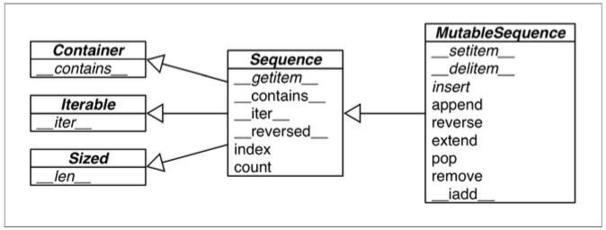
Figure 2-1 helps visualize how mutable sequences differ from immutable ones, while also inheriting several methods from them. Note that the built-in concrete sequence types do not actually subclass the Sequence and MutableSequence ABCs (Abstract Base Classes) depicted, but the ABCs are still useful as a formalization of what functionality to expect from a full-featured sequence type.
The most fundamental sequence type is the list — mutable and mixed-type.
We’ll jump right into list comprehensions, a powerful way of building lists which is somewhat underused because the syntax may be unfamiliar. Mastering list comprehensions opens the door to generator expressions, which — among other uses — can produce elements to fill-up sequences of any type. Both are the subject of the next section.
List comprehensions and generator expressions
A quick way to build a sequence is using a list comprehension (if the target is a list) or a generator expression (for all other kinds of sequences).
Tip: For brevity, many Python programmers call list comprehensions listcomps, and generator expressions genexps. I will use these words as well.
List comprehensions and readability
Here is a test: which do you find easier to read, Example 2-1 or Example 2-2?
Example 2-1. Build a list of Unicode codepoints from a string.
>>> symbols = '$¢£¥€¤' >>> codes = [] >>> for symbol in symbols: ... codes.append(ord(symbol)) ... >>> codes [36, 162, 163, 165, 8364, 164]
Example 2-2. Build a list of Unicode codepoints from a string, take two.
>>> symbols = '$¢£¥€¤' >>> codes = [ord(symbol) for symbol in symbols] >>> codes [36, 162, 163, 165, 8364, 164]
A for loop may be used to do lots of different things. <-> A listcomp is meant to do one thing only: to build a new list.
If the list comprehension spans more than two lines, it is probably best to break it apart or rewrite as a plain old for loop. Use your best judgment: for Python as for English, there are no hard and fast rules for clear writing.
Tip: In Python code, line breaks are ignored inside pairs of [], {} or (). So you can build multi-line lists, listcomps, genexps, dictionaries etc. without using the ugly \ line continuation escape.
List comprehensions build lists from sequences or any other iterable type by filtering and transforming items. The filter and map built-ins can be composed to do the same, but readability suffers, as we will see next.
Listcomps versus map and filter
Listcomps do everything the map and filter functions do, without the contortions of the functionally challenged Python lambda. Consider Example 2-3.
Example 2-3. The same list built by a listcomp and a map/filter composition.
>>> symbols = '$¢£¥€¤' >>> beyond_ascii = [ord(s) for s in symbols if ord(s) > 127] >>> beyond_ascii [162, 163, 165, 8364, 164] >>> beyond_ascii = list(filter(lambda c: c > 127, map(ord, symbols))) >>> beyond_ascii [162, 163, 165, 8364, 164]
I used to believe that map and filter were faster than the equivalent listcomps, but Alex Martelli pointed out that’s not the case — at least not in the examples above.
Cartesian products
Listcomps can generate lists from the cartesian product of two or more iterables. The items that make up the cartesian product are tuples made from items from every input iterable. The resulting list has a length equal to the lengths of the input iterables mul‐ tiplied. See Figure 2-2.
Figure 2-2. The cartesian product of a sequence of three card ranks and a sequence of four suits results in a sequence of twelve pairings.
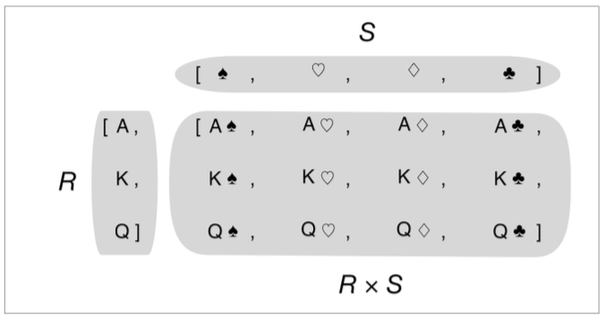
Example 2-4. Cartesian product using a list comprehension.
>>> colors = ['black', 'white'] >>> sizes = ['S', 'M', 'L'] >>> tshirts = [(color, size) for color in colors for size in sizes] # (1) >>> tshirts [('black', 'S'), ('black', 'M'), ('black', 'L'), ('white', 'S'), ('white', 'M'), ('white', 'L')] >>> for color in colors: # (2) ... for size in sizes: ... print((color, size)) ... ('black', 'S') ('black', 'M') ('black', 'L') ('white', 'S') ('white', 'M') ('white', 'L') >>> tshirts = [(color, size) for size in sizes ... for color in colors] >>> tshirts [('black', 'S'), ('white', 'S'), ('black', 'M'), ('white', 'M'), ('black', 'L'), ('white', 'L')]
- (1): This generates a list of tuples arranged by color, then size.
- (2): Note how the resulting list is arranged as if the for loops were nested in the same order as they appear in the listcomp.
- (3): To get items arranged by size, then color, just rearrange the for clauses; adding a line break to the listcomp makes it easy to see how the result will be ordered.
Tip: Listcomps are a one-trick pony: they build lists. To fill-up other sequence types, a genexp is the way to go.
Generator expressions
To initialize tuples, arrays and other types of sequences, you could also start from a listcomp but a genexp saves memory because it yields items one by one using the iterator protocol instead of building a whole list just to feed another constructor.
Genexps use the same syntax as listcomps, but are enclosed in parenthesis rather than brackets.
Example 2-5 shows basic usage of genexps to build a tuple and an array.
Example 2-5. Initializing a tuple and an array from a generator expression.
>>> symbols = '$¢£¥€¤' >>> symbols '$¢£¥€¤' >>> tuple(ord(symbol) for symbol in symbols) # (1) (36, 162, 163, 165, 8364, 164) >>> import array >>> array.array('I', (ord(symbol) for symbol in symbols)) # (2) array('I', [36, 162, 163, 165, 8364, 164])
- (1): If the generator expression is the single argument in a function call, there is no need to duplicate the enclosing parenthesis.
- (2): The array constructor takes two arguments, so the parenthesis around the generator expression are mandatory.
Example 2-6 uses a genexp with a cartesian product to print out a roster of t-shirts of two colors in three sizes. If the two lists used in the cartesian product had a thousand items each, using a generator expression would save the expense of building a list with a million items just to feed the for loop.
Example 2-6. Cartesian product in a generator expression.
>>> colors ['black', 'white'] >>> sizes ['S', 'M', 'L'] >>> for tshirt in ('%s %s' % (c, s) for c in colors for s in sizes): ... print(tshirt) ... black S black M black L white S white M white L
- The generator expression yields items one by one; a list with all 6 t-shirt variations is never produced in this example.
Chapter 14 is devoted to explaining how generators work in detail. Here the idea was just to show the use of generator expressions to initialize sequences other than lists, or to produce output that you don’t need to keep in memory.
Tuples are not just immutable lists
Tuples do double-duty:
- they can be used as immutable lists and
- also as records with no field names. This use is sometimes overlooked.
Tuples as records
Tuples hold records:
- each item in the tuple holds the data for one field and
- the position of the item gives its meaning.
When using a tuple as a collection of fields, the number of items is often fixed and their order is always vital. -> Sorting the tuple would destroy the information because the meaning of each data item is given by its position in the tuple.
Example 2-7. Tuples used as records.
>>> lax_coordinates = (33.9425, -118.408056) # (1) >>> city, year, pop, chg, area = ('Tokyo', 2003, 32450, 0.66, 8014) # (2) >>> traveler_ids = [('USA', '31195855'), ('BRA', 'CE342567'), # (3) ... ('ESP', 'XDA205856')] >>> for passport in sorted(traveler_ids): # (4) ... print('%s/%s' % passport) # (5) ... BRA/CE342567 ESP/XDA205856 USA/31195855 >>> for country, _ in traveler_ids: ... print(country) ... USA BRA ESP
- Latitude and longitude of the Los Angeles International Airport.
- Data about Tokyo: name, year, population (millions), population change (%), area (km2).
- A list of tuples of the form (country_code, passport_number).
- As we iterate over the list, passport is bound to each tuple.
- The
%formatting operator understands tuples and treats each item as a separate field. - The for loop knows how to retrieve the items of a tuple separately — this is called unpacking. Here we are not interested in the second item, so it’s assigned to
_, a dummy variable.
Tuple unpacking
Two examples of tuple unpacking: (2) & (5)
Tip: Tuple unpacking works with any iterable object. The only requirement is that the iterable yields exactly one item per variable in the receiving tuple, unless you use a star * to capture excess items as explained in “Using * to grab excess items” on page 29. The term tuple unpacking is widely used by Pythonistas, but iterable unpacking is gaining traction, as in the title of PEP 3132 — Extended Iterable Unpacking.
The most visible form of tuple unpacking is parallel assignment, that is, assigning items from an iterable to a tuple of variables, as you can see in this example:
>>> lax_coordinates = (33.9425, -118.408056) >>> latitude, longitude = lax_coordinates # tuple unpacking >>> latitude 33.9425 >>> longitude -118.408056
An elegant application of tuple unpacking is swapping the values of variables without using a temporary variable:
>>> b, a = a, b
Another example of tuple unpacking is prefixing an argument with a star when calling a function:
>>> divmod(20, 8) (2, 4) >>> t = (20, 8) >>> divmod(*t) (2, 4) >>> quotient, remainder = divmod(*t) >>> quotient 2 >>> remainder 4
The code above also shows a further use of tuple unpacking: enabling functions to return multiple values in a way that is convenient to the caller. For example, the os.path.split() function builds a tuple (path, last_part) from a filesystem path.
>>> import os >>> _, filename = os.path.split('/home/fengyz/.ssh/idrsa.pub') >>> filename 'idrsa.pub'
Tip: If you write internationalized software, _ is not a good dummy vari‐ able because it is traditionally used as an alias to the gettext.gettext function, as recommended in the gettext module documenation. Otherwise, it’s a nice name for placeholder variable.
Using * to grab excess items
Defining function parameters with *args to grab arbitrary excess arguments is a classic Python feature.
In Python 3 this idea was extended to apply to parallel assignment as well.
>>> a, b, *rest = range(5) >>> a, b, rest (0, 1, [2, 3, 4]) >>> a, b, *rest = range(3) >>> a, b, rest (0, 1, [2]) >>> a, b, *rest = range(2) >>> a, b, rest (0, 1, [])
In the context of parallel assignment, the * prefix can be applied to exactly one variable, but it can appear in any position:
>>> a, *body, c, d = range(5) >>> a, body, c, d (0, [1, 2], 3, 4) >>> *head, b, c, d = range(5) >>> head, b, c, d ([0, 1], 2, 3, 4)
Finally, a powerful feature of tuple unpacking is that it works with nested structures.
Nested tuple unpacking
The tuple to receive an expression to unpack can have nested tuples, like (a, b, (c, d)) and Python will do the right thing if the expression matches the nesting structure.
Example 2-8. Unpacking nested tuples to access the longitude.
metro_areas = [ ('Tokyo','JP',36.933,(35.689722,139.691667)), # 1 ('Delhi NCR', 'IN', 21.935, (28.613889, 77.208889)), ('Mexico City', 'MX', 20.142, (19.433333, -99.133333)), ('New York-Newark', 'US', 20.104, (40.808611, -74.020386)), ('Sao Paulo', 'BR', 19.649, (-23.547778, -46.635833)), ] print('{:15} | {:^9} | {:^9}'.format('', 'lat.', 'long.')) fmt = '{:15} | {:9.4f} | {:9.4f}' for name, cc, pop, (latitude, longitude) in metro_areas: # 2 if longitude <= 0: # 3 print(fmt.format(name, latitude, longitude))
- Each tuple holds a record with four fields, the last of which is a coordinate pair.
- By assigning the last field to a tuple, we unpack the coordinates.
if longitude <= 0:limits the output to metropolitan areas in the Western hemisphere.
The output of Example 2-8 is:
| lat. | long. Mexico City | 19.4333 | -99.1333 New York-Newark | 40.8086 | -74.0204 Sao Paulo | -23.5478 | -46.6358
Warning: Before Python 3, it used to be possible to define functions with nested tuples in the formal parameters, eg. def fn(a, (b, c), d):. This is no longer supported in Python 3 function definitions, for practical reasons explained in PEP 3113 — Removal of Tuple Parameter Unpacking. To be clear: nothing changed from the perspective of users calling a function. The restriction applies only to the defini‐ tion of functions.
As designed, tuples are very handy. But there is a missing feature when using them as records: sometimes it is desirable to name the fields. That is why the namedtuple function was invented. Read on.
Named tuples
The collections.namedtuple function is a factory that produces subclasses of tuple enhanced with field names and a class name — which helps debugging.
Tip: Instances of a class that you build with namedtuple take exactly the same amount of memory as tuples because the field names are stored in the class. They use less memory than a regular object because they do store attributes in a per-instance __dict__.
Recall how we built the Card class in Example 1-1 in Chapter 1:
Card = collections.namedtuple('Card', ['rank', 'suit'])
Example 2-9 shows how we could define a named tuple to hold information about a city:
Example 2-9. Defining and using a named tuple typescript
from collections import namedtuple City = namedtuple('City', 'name country population coordinates') # 1 tokyo = City('Tokyo', 'JP', 36.933, (35.689722, 139.691667)) # 2 tokyo >>>> City(name='Tokyo', country='JP', population=36.933, coordinates=(35.689722, 139.691667)) tokyo.coordinates # 3 >>>> (35.689722, 139.691667) tokyo[1] >>>> 'JP'
- Two parameters are required to create a named tuple: a class name and a list of field names, which can be given as an iterable of strings or as a single space- delimited string.
- Data must be passed as positional arguments to the constructor (in contrast, the tuple constructor takes a single iterable).
- You can access the fields by name or position.
A named tuple type has a few attributes in addition to those inherited from tuple. Example 2-10 shows the most useful:
- the
_fieldsclass attribute, - the class method
_make(iterable) - the
_asdict()instance method.
Example 2-10. Named tuple attributes and methods (continued from Example 2-9)
City._fields >>>> ('name', 'country', 'population', 'coordinates') LatLong = namedtuple('LatLong', 'lat long') delhi_data = ('Delhi NCR', 'IN', 21.935, LatLong(28.613889, 77.208889)) delhi = City._make(delhi_data) delhi._asdict() >>>> OrderedDict([('name', 'Delhi NCR'), ('country', 'IN'), ('population', 21.935), ('coordinates', LatLong(lat=28.613889, long=77.208889))]) for key, value in delhi._asdict().items(): print(key + ':', value) >>>> name: Delhi NCR country: IN population: 21.935 coordinates: LatLong(lat=28.613889, long=77.208889)
- _fields is a tuple with the field names of the class.
- _make() lets you instantiate a named tuple from an iterable;
City(*delhi_data)would do the same. - _asdict() returns a collections.OrderedDict built from the named tuple instance. That can be used to produce a nice display of city data.
Now that we’ve explored the power of tuples as records, we can consider their second role as an immutable variant of the list type.
Tuples as immutable lists
As you can see in Table 2-1, all list methods that do not involve adding or removing items are supported by tuple with one exception — tuple lacks the reversed method, but that is just for optimization; reversed(my_tuple) works without it.
Table 2-1. Methods and attributes found in list or tuple (methods implemented by object are omitted for brevity).
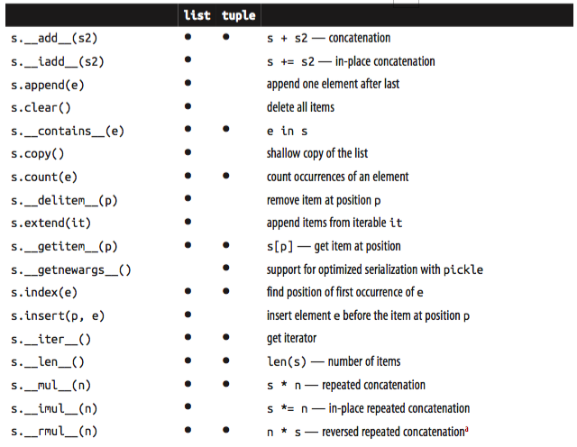
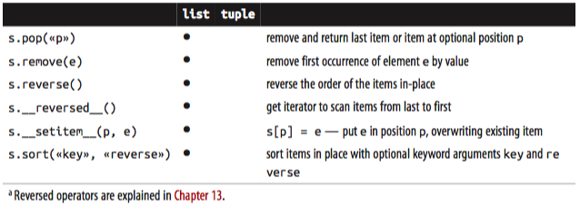
Every Python programmer knows that sequences can be sliced using the s[a:b] syntax.
We now turn to some less well-known facts about slicing.
Slicing
A common feature of list, tuple, str and all sequence types in Python is the support of slicing operations, which are more powerful than most people realize.
In this section we describe the use of these advanced forms of slicing. Their implemen‐ tation in a user-defined class will be covered in Chapter 10, in keeping with our phi‐ losophy of covering ready-to-use classes in this part of the book, and creating new classes in Part IV.
Why slices and range exclude the last item
The Pythonic convention of excluding the last item in slices and ranges works well with the zero-based indexing used in Python, C and many other languages.
Some convenient features of the convention are:
- It’s easy to see the length of a slice or range when only the stop position is given: range(3) and my_list[:3] both produce three items.
- It’s easy to compute the length of a slice or range when start and stop are given: just subtract stop - start.
- It’s easy to split a sequence in two parts at any index x, without overlapping: simply get my_list[:x] and my_list[x:]. See for example:
>>> l=[10,20,30,40,50,60] >>> l[:2] # split at 2 [10, 20] >>> l[2:] [30, 40, 50, 60] >>> l[:3] # split at 3 [10, 20, 30] >>> l[3:] [40, 50, 60]
But the best arguments for this convention were written by the Dutch computer scientist Edsger W. Dijkstra. Please see the last reference in Further reading on page 58.
Now let’s take a close look at how Python interprets slice notation.
Slice objects
This is no secret, but worth repeating just in case: s[a:b:c] can be used to specify a stride or step c, causing the resulting slice to skip items. The stride can also be negative, returning items in reverse. Three examples make this clear:
= 'bicyle' s[::3] >>>> 'by' s[::-1] >>>> 'elycib' s[::-2] >>>> 'eyi'
Another example was shown in Chapter 1 when we used deck[12::13] to get all the aces in the unshuffled deck:
>>> deck[12::13] [Card(rank='A', suit='spades'), Card(rank='A', suit='diamonds'), Card(rank='A', suit='clubs'), Card(rank='A', suit='hearts')]
The notation a:b:c is only valid within [] when used as the indexing or subscript operator, and it produces a slice object: slice(a, b, c). As we will see in “How slicing works” on page 283, to evaluate the expression seq[start:stop:step], Python calls seq.__getitem__(slice(start, stop, step)). Even if you are not implementing your own sequence types, knowing about slice objects is useful because it lets you assign names to slices, just like spreadsheets allow naming of cell ranges.
Suppose you need to parse flat-file data like the invoice on top of Example 2-11. Instead of filling your code with hard-coded slices, you can name them. See how readable this makes the for loop at the end of the example:
Example 2-11. Line items from a flat file invoice
invoice = """ 0.....6.................................40........52...55........ 1909 Pimoroni PiBrella $17.50 3 $52.50 1489 6mm Tactile Switch x20 $4.95 2 $9.90 1510 Panavise Jr. - PV-201 $28.00 1 $28.00 1601 PiTFT Mini Kit 320x240 $34.95 1 $34.95 """ SKU = slice(0, 6) DESCRIPTION = slice(6, 40) UNIT_PRICE = slice(40, 52) QUANTITY = slice(52, 55) ITEM_TOTAL = slice(55, None) line_items = invoice.split('\n')[2:] for item in line_items: print(item[UNIT_PRICE], item[DESCRIPTION]) >>>> $17.50 Pimoroni PiBrella $4.95 6mm Tactile Switch x20 $28.00 Panavise Jr. - PV-201 $34.95 PiTFT Mini Kit 320x240
When we discuss creating your own collections in Vector take #2: a sliceable sequence on page 282, we’ll come back to slice objects. Meanwhile, from a user perspective slicing includes additional features such as multi-dimensional slices and ellipsis (…) notation. Read on.
Multi-dimensional slicing and ellipsis
The [] operator can also take multiple indexes or slices separated by commas. This is used, for instance, in the external NumPy package, where items of a 2-dimensional numpy.ndarray can be fetched using the syntax a[i, j] and a 2-dimensional slice obtained with an expression like a[m:n, k:l]. Example 2-22 later in this chapter shows the use of this notation. The __getitem__ and __setitem__ special methods which handle the [] operator simply receive the indices in a[i, j] as a tuple. In other words, to evaluate a[i, j], Python calls a.__getitem__((i, j)).
The built-in sequence types in Python are one-dimensional, so they support only one index or slice, and not a tuple of them.
The ellipsis — written with three full stops ... and not … (Unicode U+2026) — is rec‐ ognized as a token by the Python parser. It is an alias to the Ellipsis object, the single instance of the ellipsis class (the ellipsis class name is really all lowercase and the instance is a built- in named Ellipsis, just like bool is lowercase but its instances are True and False.). As such, it can be passed as an argument to functions and as part of a slice specification, as in f(a, ..., z) or a[i:...]. NumPy uses … as a shortcut when slicing arrays of many dimensions, for example, if x is a 4-dimensional array, x[i, …] is a shortcut for x[i, :, :, :,]. See the Tentative NumPy Tutorial to learn more about this.
These syntactic features exist to support user-defined types and extensions such as NumPy.
Slices are not just useful to extract information from sequences, they can also be used to change mutable sequences in-place, that is, without rebuilding them from scratch.
Assigning to slices
Mutable sequences can be grafted, excised and otherwise modified in-place using slice notation on the left side of an assignment statement or as the target of a del statement. The next few examples give an idea of the power of this notation.
>>> l = list(range(10)) >>> l [0, 1, 2, 3, 4, 5, 6, 7, 8, 9] >>> l[2:5] = [20, 30] >>> l [0, 1, 20, 30, 5, 6, 7, 8, 9] >>> del l[5:7] >>> l [0, 1, 20, 30, 5, 8, 9] >>> l[3::2] = [11, 22] >>> l [0, 1, 20, 11, 5, 22, 9] >>> l[2:5] = 100 # 1 Traceback (most recent call last): File "<stdin>", line 1, in <module> TypeError: can only assign an iterable >>> l[2:5] = [100] >>> l [0, 1, 100, 22, 9]
- When the target of the assignment is a slice, the right-hand side must be an iterable object, even if it has just one item.
Everybody knows that concatenation is a common operation with sequences of any type. Any introductory Python text explains the use of + and * for that purpose, but there are some subtle details on how they work, which we cover next.
Using + and * with sequences
Python programmers expect that sequences support + and *. Usually both operands of + must be of the same sequence type, and neither of them is modified but a new sequence of the same type is created as result of the concatenation.
To concatenate multiple copies of the same sequence, multiply it by an integer. Again, a new sequence is created:
l = [1, 2, 3] l * 5 >>>> [1, 2, 3, 1, 2, 3, 1, 2, 3, 1, 2, 3, 1, 2, 3] 5 * 'abcd' >>>> 'abcdabcdabcdabcdabcd'
Both + and * always create a new object, and never change their operands.
Warning: Beware of expressions like a * n when a is a sequence containing mutable items because the result may surprise you. For example, trying to initialize a list of lists as my_list = [[]] * 3 will result in a list with three references to the same inner list, which is probably not what you want.
The next section covers the pitfalls of trying to use * to initialize a list of lists.
Building lists of lists
Sometimes we need to initialize a list with a certain number of nested lists, for example, to distribute students in a list of teams or to represent squares on a game board. The best way of doing so is with a list comprehension, like this:
Example 2-12. A list with 3 lists of length 3 can represent a Tic-tac-toe board.
board = [['_'] * 3 for i in range(3)] board Out[46]: [['_', '_', '_'], ['_', '_', '_'], ['_', '_', '_']] board[1][2] = 'X' board Out[47]: [['_', '_', '_'], ['_', '_', 'X'], ['_', '_', '_']]
A tempting but wrong shortcut is doing it like Example 2-13
Example 2-13. A list with with three references to the same list is useless.
wboard = [['_'] * 3] * 3 # 1 wboard Out[50]: [['_', '_', '_'], ['_', '_', '_'], ['_', '_', '_']] wboard[1][2] = '0' # 2 wboard Out[51]: [['_', '_', '0'], ['_', '_', '0'], ['_', '_', '0']]
- The outer list is made of three references to the same inner list. While it is unchanged, all seems right.
- Placing a mark in row 1, column 2 reveals that all rows are aliases referring to the same object.
The problem with Example 2-13 is that, in essence, it behaves like this code:
row=['_']*3 board = [] for i in range(3): board.append(row)
On the other hand, the list comprehension from Example 2-12 is equivalent to this code:
board = [] for i in range(3): row = ['_'] * 3 board.append(row)
Tip: If either the problem or the solution in this section are not clear to you, relax. The entire Chapter 8 was written to clarify the mechanics and pitfalls of references and mutable objects.
So far we have discussed the use of the plain + and * operators with sequences, but there are also the += and *= operators, which produce very different results depending on the mutability of the target sequence. The following section explains how that works.
Augmented assignments with sequences
The augmented assignment operators += and *= behave very differently depending on the first operand. To simplify the discussion, we will focus on augmented addition first (+=), but the concepts also apply to *= and to other augmented assignment operators.
The special method that makes += work is __iadd__ (for “in-place addition”). However, if iadd is not implemented, Python falls back to calling __add__. Consider this simple expression:
>>> a += b
- If a implements iadd, that will be called. In the case of mutable sequences like list, bytearray, array.array, a will be changed in-place, i.e. the effect will be similar to
a.extend(b). - However, when a does not implement iadd, the expression a += b has the same effect as a = a + b: the expression a + b is evaluated first, producing a new object which is then bound to a.
-> In other words, the identity of the object bound to a may or may not change, depending on the availability of iadd.
In general, for mutable sequences it is a good bet that iadd is implemented and that += happens in-place. For immutable sequences, clearly there is no way for that to happen.
What I just wrote about += also applies to *=, which is implemented via imul. The iadd and imul special methods are discussed in Chapter 13.
Here is a demonstration of *= with a mutable sequence and then an immutable one:
l = [1, 2, 3] id(l) Out[59]: 4370875912 l l *= 2 l Out[61]: [1, 2, 3, 1, 2, 3, 1, 2, 3, 1, 2, 3] l id(l) Out[62]: 4370875912 l = [1, 2, 3] id(l) Out[59]: 4370875912 l l *= 2 l Out[61]: [1, 2, 3, 1, 2, 3, 1, 2, 3, 1, 2, 3] l id(l) Out[62]: 4370875912
Repeated concatenation of immutable sequences is inefficient, because instead of just appending new items, the interpreter has to copy the whole target sequence to create a new one with the new items concatenated. (str is an exception to this description. Because string building with += in loops is so common in the wild, CPython is optimized for this use case. str instances are allocated in memory with room to spare, so that concatenation does not require copying the whole string every time.)
A += assignment puzzler
Try to answer without using the console: what is the result of evaluating these two expressions?
>>> t = (1,2,[30,40]) >>> t[2] += [50, 60]
What happens next? Choose the best answer:
- t becomes (1, 2, [30, 40, 50, 60]).
- TypeError is raised with the message 'tuple' object does not support item assignment.
- Neither.
- Both 1 and 2.
It’s actually 4.
t = (1, 2, [30, 40]) t[2] += [50, 60] --------------------------------------------------------------------------- TypeError Traceback (most recent call last) <ipython-input-83-9e2e787a0a92> in <module>() 1 t = (1, 2, [30, 40]) 2 print(t) ----> 3 t[2] += [50, 60] TypeError: 'tuple' object does not support item assignment t Out[84]: (1, 2, [30, 40, 50, 60])
Tip: Online Python Tutor is an awesome online tool to visualize how Python works in detail.
I take three lessons from this:
- Putting mutable items in tuples is not a good idea.
- Augmented assignment is not an atomic operation — we just saw it throwing an exception after doing part of its job.
- Inspecting Python bytecode is not too difficult, and is often helpful to see what is going on under the hood.
list.sort and the sorted built-in function
The list.sort method sorts a list in-place, that is, without making a copy. It returns None to remind us that it changes the target object, and does not create a new list. This is an important Python API convention: /functions or methods that change an object in-place should return None / to make it clear to the caller that the object itself was changed, and no new object was created. The same behavior can be seen, for example, in the random.shuffle function.
Tip: The convention of returning None to signal in-place changes has a drawback: you cannot cascade calls to those methods. In contrast, methods that return new objects (eg. all str methods) can be casca‐ ded in the fluent interface style. See Fluent interface on Wikipedia for a description of fluent interfaces.
In contrast, the built-in function sorted creates a new list and returns it. In fact, sor ted accepts any iterable object as argument, including immutable sequences and generators (see Chapter 14). Regardless of the type of iterable given to sorted, it always returns a newly created list.
Both list.sort and sorted take two optional, keyword-only arguments: key and reverse.
- reverse: If True, the items are returned in descending order, i.e. by reversing the comparison of the items. The default is False.
- key: A one-argument function that will be applied to each item to produce its sorting key. For example, when sorting a list of strings, key=str.lower can be used to perform a case-insensitive sort, and key=len will sort the strings by character length. The default is the identity function, i.e. the items themselves are compared.
Tip: The key optional keyword parameter can also be used with the min() and max() built-ins and with other functions from the standard li‐ brary such as itertools.groupby() and heapq.nlargest().
Here are a few examples to clarify the use of these functions and keyword arguments. The examples also demonstrate that Timsort — the sorting algorithm used in Python — is stable, i.e. it preserves the relative ordering of items that compare equal.
fruits = ['grape', 'raspberry', 'apple', 'banana'] sorted(fruits) Out[88]: ['apple', 'banana', 'grape', 'raspberry'] In [90]: s fruits Out[90]: ['grape', 'raspberry', 'apple', 'banana'] fruits, reverse = True sorted(fruits, reverse = True) Out[92]: ['raspberry', 'grape', 'banana', 'apple'] everse = True sorted(fruits, key = len, reverse = True) Out[94]: ['raspberry', 'banana', 'grape', 'apple'] fruits Out[96]: ['grape', 'raspberry', 'apple', 'banana'] fruits.sort() fruits Out[99]: ['apple', 'banana', 'grape', 'raspberry']
Once your sequences are sorted, they can be very efficiently searched.
Fortunately, the standard binary search algorithm is already provided in bisect module of the Python Standard Library. We discuss its essential features next, including the convenient bi sect.insort function which you can use to make sure that your sorted sequences stay sorted.
Managing ordered sequences with bisect
The bisect module offers two main functions — bisect and insort — that use the binary search algorithm to quickly find and insert items in any sorted sequence.
Searching with bisect
bisect(haystack, needle) does a binary search for needle in haystack — which must be a sorted sequence — to locate the position where needle can be inserted while maintaining haystack in ascending order. In other words, all items appearing up to that position are less or equal to needle. You could use the result of bisect(haystack, needle) as the index argument to haystack.insert(index, needle), but using in sort does both steps, and is faster.
Tip: Raymond Hettinger — a prolific Python contributor — has a Sorted Collection recipe which leverages the bisect module but is easier to use than these stand-alone functions.
Example 2-17 uses a carefully chosen set of “needles” to demonstrate the insert positions returned by bisect. Its output is in Figure 2-4.
Example 2-17. bisect finds insertion points for items in a sorted sequence.
import bisect import sys HAYSTACK = [1, 4, 5, 6, 8, 12, 15, 20, 21, 23, 23, 26, 29, 30] NEEDLES = [0, 1, 2, 5, 8, 10, 22, 23, 29, 30, 31] ROW_FMT = '{0:2d} @ {1:2d} {2}{0:<2d}' def demo(bisect_fn): for needle in reversed(NEEDLES): position = bisect_fn(HAYSTACK, needle) # 1 offset = position * ' |' # 2 print(ROW_FMT.format(needle, position, offset)) # 3 if __name__ == '__main__': if sys.argv[-1] == 'left': # 4 bisect_fn = bisect.bisect_left else: bisect_fn = bisect.bisect print('DEMO:', bisect_fn.__name__) print('haystack ->', ' '.join('%2d' % n for n in HAYSTACK)) demo(bisect_fn) output: python3 bisect_demo.py: DEMO: bisect haystack -> 1 4 5 6 8 12 15 20 21 23 23 26 29 30 31 @ 14 | | | | | | | | | | | | | |31 30 @ 14 | | | | | | | | | | | | | |30 29 @ 13 | | | | | | | | | | | | |29 23 @ 11 | | | | | | | | | | |23 22 @ 9 | | | | | | | | |22 10 @ 5 | | | | |10 8 @ 5 | | | | |8 5 @ 3 | | |5 2 @ 1 |2 1 @ 1 |1 0 @ 0 0 python3 bisect_demo.py left: DEMO: bisect_left haystack -> 1 4 5 6 8 12 15 20 21 23 23 26 29 30 31 @ 14 | | | | | | | | | | | | | |31 30 @ 13 | | | | | | | | | | | | |30 29 @ 12 | | | | | | | | | | | |29 23 @ 9 | | | | | | | | |23 22 @ 9 | | | | | | | | |22 10 @ 5 | | | | |10 8 @ 4 | | | |8 5 @ 2 | |5 2 @ 1 |2 1 @ 0 1 0 @ 0 0
- Use the chosen bisect function to get the insertion point.
- Build a pattern of vertical bars proportional to the offset.
- Print formatted row showing needle and insertion point.
- Choose the bisect function to use according to the last command line argument.
- Print header with name of function selected.
The behavior of bisect can be fine-tuned in two ways.
- First, a pair of optional arguments
loandhiallow narrowing the region in the sequence to be searched when inserting. lo defaults to 0 and hi to the len() of the sequence. - Second, bisect is actually an alias for bisect_right, and there is a sister function called bisect_left. Their difference is apparent only when the needle compares equal to an item in the list: bisect_right returns an insertion point after the existing item, and bisect_left returns the position of the existing item, so insertion would occur before it. With simple types like int this makes no difference, but if the sequence contains objects that are distinct yet compare equal, then it may be relevant. For example, 1 and 1.0 are distinct, but 1 == 1.0 is True.
An interesting application of bisect is to perform table lookups by numeric values, for example to convert test scores to letter grades, as in Example 2-18.
Example 2-18. Given a test score, grade returns the corresponding letter grade.
def grade(score, breakpoints=[60, 70, 80, 90], grades='FDCBA'): i = bisect.bisect(breakpoints, score) return grades[i] [grade(score) for score in [33, 99, 77, 70, 89, 90, 100]] Out[110]: ['F', 'A', 'C', 'C', 'B', 'A', 'A']
The code in Example 2-18 is from the bisect module documentation, which also lists functions to use bisect as a faster replacement for the index method when searching through long ordered sequences of numbers.
These functions are not only used for searching, but also for inserting items in sorted sequences, as the following section shows.
Inserting with bisect.insort
Sorting is expensive, so once you have a sorted sequence, it’s good to keep it that way. That is why bisect.insort was created.
insort(seq, item) inserts item into seq so as to keep seq in ascending order. See Example 2-19 and its output in Figure 2-6.
Example 2-19. Insort keeps a sorted sequence always sorted.
import bisect import random SIZE = 7 random.seed(1729) my_list = [] for i in range(SIZE): new_item = random.randrange(SIZE * 2) bisect.insort(my_list, new_item) print('%2d ->' % new_item, my_list) Output: 10 -> [10] 0 -> [0, 10] 6 -> [0, 6, 10] 8 -> [0, 6, 8, 10] 7 -> [0, 6, 7, 8, 10] 2 -> [0, 2, 6, 7, 8, 10] 10 -> [0, 2, 6, 7, 8, 10, 10]
Like bisect, insort takes optional lo, hi arguments to limit the search to a sub- sequence. There is also an insort_left variation that uses bisect_left to find insertion points.
Much of what we have seen so far in this chapter applies to sequences in general, not just lists or tuples. Python programmers sometimes overuse the list type because it is so handy — I know I’ve done it. If you are handling lists of numbers, arrays are the way to go. The remainder of the chapter is devoted to them.
When a list is not the answer
The list type is flexible and easy to use, but depending on specific requirements there are better options. For example, if you need to store 10 million of floating point values an array is much more efficient, because an array does not actually hold full-fledged float objects, but only the packed bytes representing their machine values — just like an array in the C language. On the other hand, if you are constantly adding and removing items from the ends of a list as a FIFO or LIFO data structure, a deque (double-ended queue) works faster.
Tip: If your code does a lot of containment checks — e.g. item in my_collection, consider using a set for my_collection, especially if it holds a large number of items. Sets are optimized for fast membership checking. But they are not sequences (their content is unordered). We cover them in Chapter 3.
For the remainder of this chapter we discuss mutable sequence types that can replace lists in many cases, starting with arrays.
Arrays
If all you want to put in the list are numbers, an array.array is more efficient than a list: it supports all mutable sequence operations (including .pop, .insert and .ex tend), and additional methods for fast loading and saving such as .frombytes and .tofile.
A Python array is as lean as a C array. When creating an array you provide a typecode, a letter to determine the underlying C type used to store each item in the array. For example, b is the typecode for signed char. If you create an array('b') then each item will be stored in a single byte and interpreted as an integer from -128 to 127. For large sequences of numbers, this saves a lot of memory. And Python will not let you put any number that does not match the type for the array.
Example 2-20 shows creating, saving and loading an array of 10 million floating-point random numbers:
Example 2-20. Creating, saving and loading a large array of floats.
from array import array # 1 from random import random floats = array('d', (random() for i in range(10**7))) # 2 floats[-1] # 3 Out[116]: 0.1288579230853678 fp = open('floats.bin', 'wb') floats.tofile(fp) # 4 fp.close() floats2 = array('d') # 5 fp = open('floats.bin', 'rb') floats2.fromfile(fp, 10**7) # 6 fp.close() floats2[-1] Out[117]: 0.1288579230853678
- import the array type;
- create an array of double-precision floats (typecode 'd') from any iterable
- object, in this case a generator expression; inspect the last number in the array;
- save the array to a binary file;
- create an empty array of doubles;
- read 10 million numbers from the binary file;
- inspect the last number in the array;
- verify that the contents of the arrays match;
As you can see, array.tofile and array.fromfile are easy to use. If you try the ex‐ ample, you’ll notice they are also very fast. A quick experiment show that it takes about 0.1s for array.fromfile to load 10 million double-precision floats from a binary file created with array.tofile. That is nearly 60 times faster than reading the numbers from a text file, which also involves parsing each line with the float built-in. Saving with array.tofile is about 7 times faster than writing one float per line in a text file. In addition, the size of the binary file with 10 million doubles is 80,000,000 bytes (8 bytes per double, zero overhead), while the text file has 181,515,739 bytes, for the same data.
Tip: Another fast and more flexible way of saving numeric data is the pickle module for object serialization. Saving an array of floats with pickle.dump is almost as fast as with array.tofile, but pickle handles almost all built-in types, including complex numbers, nested collections and even instances of user defined classes automatically — if they are not too tricky in their implementation.
For the specific case of numeric arrays representing binary data, such as raster images, Python has the bytes and bytearray types discussed in Chapter 4.
We wrap-up this section on arrays with Table 2-2, comparing the features of list and array.array.
Table 2-2. Methods and attributes found in list or array (deprecated array methods and those also implemented by object were omitted for brevity).
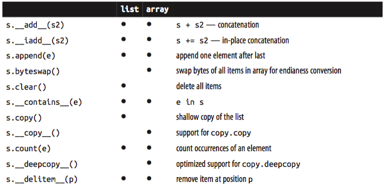
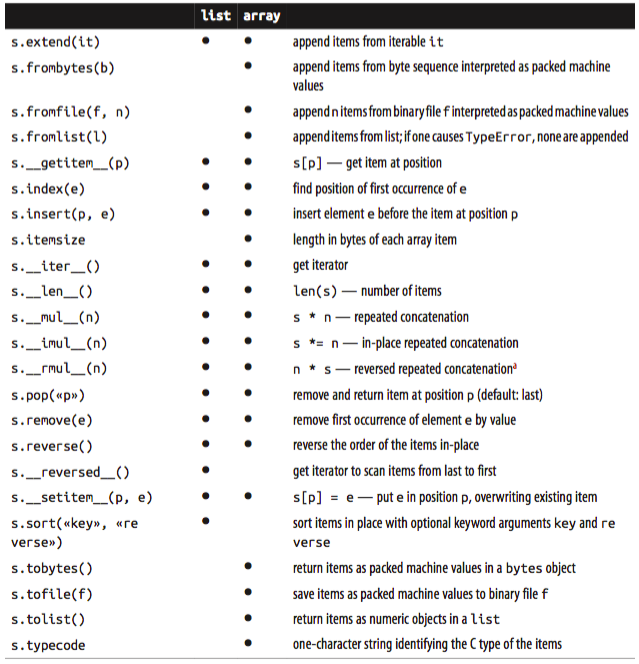
Tip: As of Python 3.4, the array type does not have an in-place sort method like list.sort(). If you need to sort an array, use the sor ted function to rebuild it sorted:
a = array.array(a.typecode, sorted(a))
To keep a sorted array sorted while adding items to it, use the bi sect.insort function as seen in “Inserting with bisect.insort” on page 46.
If you do a lot of work with arrays and don’t know about memoryview, you’re missing out. See the next topic.
Memory views
The built-in memorview class is a shared-memory sequence type that lets you handle slices of arrays without copying bytes. It was inspired by the NumPy library (which we’ll visit shortly in “NumPy and SciPy” on page 52). Travis Oliphant, lead author of NumPy, answers When should a memoryview be used? like this:
A memoryview is essentially a generalized NumPy array structure in Python itself (without the math). It allows you to share memory between data-structures (things like PIL images, SQLlite databases, NumPy arrays, etc.) without first copying. This is very important for large data sets.
Using notation similar to the array module, the memoryview.cast method lets you change the way multiple bytes are read or written as units without moving bits around — just like the C cast operator. memoryview.cast returns yet another memory view object, always sharing the same memory.
See Example 2-21 for an example of changing a single byte of an array of 16-bit integers.
Example 2-21. Changing the value of an array item by poking one of its bytes.
import array numbers = array.array('h', [-2, -1, 0, 1, 2]) memv = memoryview(numbers) # 1 len(memv) Out[121]: 5 memv[0] # 2 Out[123]: -2 memv_oct = memv.cast('B') # 3 memv_oct.tolist() # 4 Out[127]: [254, 255, 255, 255, 0, 0, 1, 0, 2, 0] memv_oct[5] = 4 # 5 numbers Out[128]: array('h', [-2, -1, 1024, 1, 2])
- Build memoryview from array of 5 short signed integers (typecode 'h').
- memv sees the same 5 items in the array.
- Create memv_oct by casting the elements of memv to typecode 'B' (unsigned char).
- Export elements of memv_oct as a list, for inspection.
- Assign value 4 to byte offset 5.
- Note change to numbers: a 4 in the most significant byte of a 2-byte unsigned integer is 1024.
We’ll see another short example with memoryview in the context of binary sequence manipulations with struct (Chapter 4, Example 4-4).
Meanwhile, if you are doing advanced numeric processing in arrays, then you should be using the NumPy and SciPy libraries. We’ll take a brief look at them right away.
NumPy and SciPy
Throughout this book I make a point of highlighting what is already in the Python Standard Library so you can make the most of it. But NumPy and SciPy are so awesome that a detour is warranted.
For advanced array and matrix operations, NumPy and SciPy are the reason why Python became mainstream in scientific computing applications. NumPy implements multi- dimensional, homogeneous arrays and matrix types that hold not only numbers but also user defined records, and provides efficient elementwise operations.
Tip: Python is easy to extend in C! -> NumPy and SciPy
SciPy is a library, written on top of NumPy, offering many scientific computing algo‐ rithms from linear algebra, numerical calculus and statistics. SciPy is fast and reliable because it leverages the widely-used C and Fortran codebase from the Netlib Repository. In other words, SciPy gives scientists the best of both worlds:
- an interactive prompt and high-level Python APIs, together with
- industrial-strength number crunching functions optimized in C and Fortran.
As a very brief demo, Example 2-22 shows some basic operations with 2-dimensional arrays in NumPy.
Example 2-22. Basic operations with rows and columns in a numpy.ndarray.
import numpy # 1 a = numpy.arange(12) # 2 a Out[131]: array([ 0, 1, 2, 3, 4, 5, 6, 7, 8, 9, 10, 11]) type(a) Out[133]: numpy.ndarray a.shape # 3 Out[134]: (12,) a.shape = 3, 4 # 4 a Out[137]: array([[ 0, 1, 2, 3], [ 4, 5, 6, 7], [ 8, 9, 10, 11]]) a[2] # 5 Out[139]: array([ 8, 9, 10, 11]) a[2, 1] # 6 Out[147]: 9 a[:, 1] # 7 Out[148]: array([1, 5, 9]) a.transpose() # 8 Out[150]: array([[ 0, 4, 8], [ 1, 5, 9], [ 2, 6, 10], [ 3, 7, 11]])
- import Numpy, after installing (it’s not in the Python Standard Library);
- build and inspect a numpy.ndarray with integers 0 to 11
- inspect the dimensions of the array: this is a one-dimensional, 12-element array;
- change the shape of the array, adding one dimension, then inspecting the result;
- get row at index 2;
- get element at index 2, 1;
- get column at index 1;
- create a new array by transposing (swapping columns with rows).
NumPy also supports high-level operations for loading, saving and operating on all elements of a numpy.ndarray.
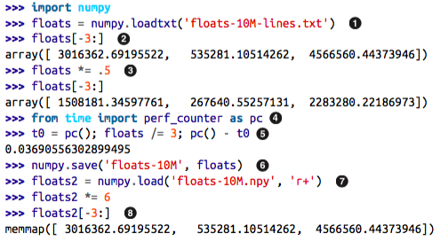
- load 10 million floating point numbers from a text file;
- use sequence slicing notation to inspect the last 3 numbers;
- multiply every element in the floats array by .5 and inspect last 3 elements again;
- import the high-resolution performance measurement timer (available since Python 3.3);
- divide every element by 3; the elapsed time for 10 million floats is less than 40 milliseconds;
- save the array in a .npy binary file;
- load the data as a memory-mapped file into another array; this allows efficient processing of slices of the array even if it does not fit entirely in memory;
- inspect the last 3 elements after multiplying every element by 6.
Tip: Installing NumPy and SciPy from source is not a breeze. The Instal‐ ling the SciPy Stack page on SciPy.org recommends using special scientific Python distributions such as Anaconda, Enthought Cano‐ py and WinPython, among others. These are large downloads, but come ready to use. Users of popular GNU/Linux distributions can usually find NumPy and SciPy in the standard package repositories. For example, installing them on Debian or Ubuntu is as easy as:
$ sudo apt-get install python-numpy python-scipy
NumPy and SciPy are formidable libraries, and are the foun‐ dation of other awesome tools such as the Pandas and Blaze data analysis libraries, which provide efficient array types that can to hold non-numeric data as well as import/export functions compatible with many different formats like .csv, .xls, SQL dumps, HDF5 etc. These packages deserve entire books about them.
Deques and other queues
The .append and .pop methods make a list usable as a stack or a queue (if you use .append and .pop(0), you get LIFO behavior). But inserting and removing from the left of a list (the 0-index end) is costly because the entire list must be shifted.
The class collections.deque is a thread-safe double-ended queue designed for fast inserting and removing from both ends. It is also the way to go if you need to keep a list of “last seen items” or something like that, because a deque can be bounded — i.e. created with a maximum length and then, when it is full, it discards items from the opposite end when you append new ones.
from collections import deque dq = deque(range(10), maxlen=10) # 1 dq Out[162]: deque([0, 1, 2, 3, 4, 5, 6, 7, 8, 9]) dq.rotate(3) # 2 dq Out[163]: deque([7, 8, 9, 0, 1, 2, 3, 4, 5, 6]) dq.rotate(-4) dq Out[164]: deque([1, 2, 3, 4, 5, 6, 7, 8, 9, 0]) dq.appendleft(-1) # 3 dq Out[165]: deque([-1, 1, 2, 3, 4, 5, 6, 7, 8, 9]) dq.extend([11, 22, 33]) # 4 dq Out[166]: deque([3, 4, 5, 6, 7, 8, 9, 11, 22, 33]) dq.extendleft([10, 20, 30, 40]) # 5 dq Out[167]: deque([40, 30, 20, 10, 3, 4, 5, 6, 7, 8])
- the optional maxlen argument set the maximum number of items allowed in this instance of deque; this sets a read-only maxlen instance attribute;
- rotating with n > 0 takes items from the right end and prepends them to the left; when n < 0 items are taken from left and appended to the right;
- appending to a deque that is full (len(d) == d.maxlen) discards items from the other end; note in the next line that the 0 is dropped;
- adding three items to the right pushes out the leftmost -1, 1 and 2;
- note that extendleft(iter) works by appending each successive item of the iter argument to the left of the deque, therefore the final position of the items is reversed.
Table 2-3 compares the methods that are specific to list and deque (removing those that also appear in object).
Note that deque implements most of the list methods, and adds a few specific to its design, like popleft and rotate. But there is a hidden cost: removing items from the middle of a deque is not as fast. It is really optimized for appending and popping from the ends.
The append and popleft operations are atomic, so deque is safe to use as a LIFO-queue in multi-threaded applications without the need for using locks.
Table 2-3. Methods implemented in list or deque (those that are also implemented by object were omitted for brevity).
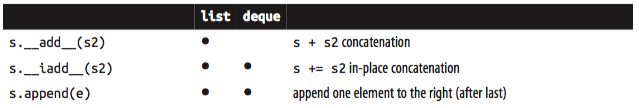
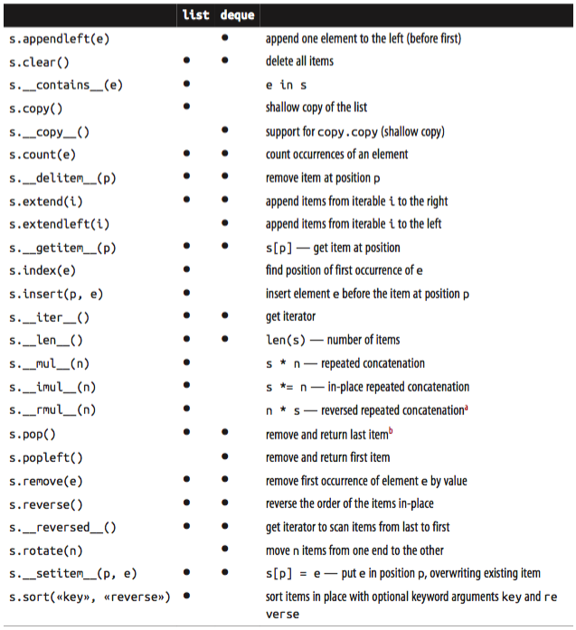
Tip: a_list.pop(p) allows removing from position p, but deque does not support that option.
Besides deque, other Python Standard Library packages implement queues:
- queue: Provides the synchronized (i.e. thread-safe) classes Queue, LifoQueue and Priori tyQueue. These are used for safe communication between threads. All three classes can be bounded by providing a maxsize argument greater than 0 to the constructor. However, they don’t discard items to make room as deque does. Instead, when the queue is full the insertion of a new item blocks — i.e. it waits until some other thread makes room by taking an item from the queue, which is useful to throttle the number of live threads.
- multiprocessing: Implements its own bounded Queue, very similar to queue.Queue but designed for inter-process communication. There is also has a specialized multiprocess ing.JoinableQueue for easier task management.
- asyncio: Newly added to Python 3.4, asyncio provides Queue, LifoQueue, PriorityQueue and JoinableQueue with APIs inspired by the classes in queue and multiprocess ing, but adapted for managing tasks in asynchronous programming.
- heapq: In contrast to the previous three modules, heapq does not implement a queue class, but provides functions like heappush and heappop that let you use a mutable sequence as a heap queue or priority queue.
This ends our overview of alternatives to the list type, and also our exploration of sequence types in general — except for the particulars of str and binary sequences which have their own Chapter 4.
Chapter summary
Mastering the standard library sequence types is a pre-requisite for writing concise, effective and idiomatic Python code.
Python sequences are often categorized as mutable or immutable, but it is also useful to consider a different axis: flat sequences and container sequences.
- The former are more compact, faster and easier to use, but are limited to storing atomic data such as numbers, characters and bytes.
- Container sequences are more flexible, but may surprise you when they hold mutable objects, so you need to be careful to use them correctly with nested data structures.
List comprehensions and generator expressions are powerful notations to build and initialize sequences. If you are not yet comfortable with them, take the time to master their basic usage. It is not hard, and soon you will be hooked.
Tuples in Python play two roles: as records with unnamed fields and as immutable lists. When a tuple is used as a record, tuple unpacking is the safest, most readable way of getting at the fields. The new * syntax makes tuple unpacking even better by making it easier to ignore some fields and to deal with optional fields. Named tuples are not so new, but deserve more attention: like tuples, they have very little overhead per instance, yet provide convenient access to the fields by name and a handy ._asdict() to export the record as an OrderedDict.
Sequence slicing is a favorite Python syntax feature, and it is even more powerful than many realize. Multi-dimensional slicing and ellipsis … notation, as used in NumPy, may also be supported by user-defined sequences. Assigning to slices is a very expressive way of editing mutable sequences.
Repeated concatenation as in seq * n is convenient and, with care, can be used to initialize lists of lists containing immutable items. Augmented assignment with += and *= behaves differently for mutable and immutable sequences. In the latter case, these operators necessarily build new sequences. But if the target sequence is mutable, it is usually changed in-place — but not always, depending on how the sequence is implemented.
The sort method and the sorted built-in function are easy to use and flexible, thanks to the key optional argument they accept, with a function to calculate the ordering criterion. By the way, key can also be used with the min and max built-in functions. To keep a sorted sequence in order, always insert items into it using bisect.insort; to search it efficiently, use bisect.bisect.
Beyond lists and tuples, the Python standard library provides array.array. Although NumPy and SciPy are not part of the standard library, if you do any kind of numerical processing on large sets of data, studying even a small part of these libraries can take you a long way.
We closed by visiting the versatile and thread-safe collections.deque, comparing its API with that of list in Table 2-3 and mentioning other queue implementations in the standard library.
Further reading
Chapter 1 — Data Structures — of the Python Cookbook 3e. by David Beazley and Brian K. Jones has many recipes focusing on sequences, including recipe 1.11 — Naming a Slice — where I learned the trick of assigning slices to variables to improve readability, illustrated in our Example 2-11.
The 2nd edition of the Python Cookbook was written for Python 2.4 but much of its code works with Python 3, and a lot of the recipes in chapters 5 and 6 deal with sequences. The Python Cookbook 2e was edited by Alex Martelli, Anna Martelli Ravenscroft, and David Ascher, and it includes contributions by dozens of Pythonistas. The third edition was rewritten from scratch, and focuses more on the semantics of the language — par‐ ticularly what has changed in Python 3 — while the older volume emphasizes prag‐ matics, i.e. how to apply the language to real-world problems. Even though some of the 2nd edition solutions are no longer the best approach, I honestly think it is worthwhile to have both editions of the Python Cookbook on hand.
The official Python Sorting HOW TO has several examples of advanced tricks for using sorted and list.sort.
PEP 3132 — Extended Iterable Unpacking is the canonical source to read about the new use of *extra as a target in parallel assignments. If you’d like a glimpse of Python evolv‐ ing, Missing *-unpacking generalizations is a bug tracker issue proposing even wider use of iterable unpacking notation. PEP 448 — Additional Unpacking Generalizations resulted from the discussions in that issue. As of this writing it seems likely the proposed changes will be merged to Python, perhaps in version 3.5.
Eli Bendersky has a short tutorial on memoriview at Less copies in Python with the buffer protocol and memoryviews.
There are numerous books covering NumPy in the market, even some don’t mention “NumPy” in the title. Wes McKinney’s “Python for Data Analysis” (O’Reilly, 2012) is one such title.
Scientists love the combination of an interactive prompt with the power of NumPy and SciPy so much that they developed IPython, an incredibly powerful replacement for the Python console which also provides a GUI, integrated inline graph plotting, literate programming support (interleaving text with code), and rendering to PDF. Interactive, multimedia IPython sessions can even be shared over HTTP as IPython notebooks. See screenshots and video at The IPython Notebook page. IPython is so hot that in 2012 its core developers, most of whom are researchers at UC Berkeley, received a $1.15 million dollar grant from the Sloan Foundation for enhancements to be implemented over the 2013-2014 period.
Chapter 8.3. collections — Container datatypes of the Python Standard Library docu‐ mentation has short examples and practical recipes using deque (and other collections).
The best defense of the Python convention of excluding the last item in ranges and slices was written by Edsger W. Dijkstra himself, in a short memo titled “Why numbering should start at zero”. The subject of the memo is mathematical notation, but it’s relevant to Python because Prof. Dijkstra explains with rigor and humor why the sequence 2, 3, …, 12 should always be expressed as 2 ≤ i < 13. All other reasonable conventions are refuted, as is the idea of letting each user choose a convention. The title refers to zero- based indexing, but the memo is really about why it is desirable that 'ABCDE'[1:3] means 'BC' and not 'BCD' and why it makes perfect sense to spell 2, 3, …, 12 as range(2, 13). By the way, the memo is a hand-written note, but it’s beautiful and totally readable. Somebody should create a Dijkstra font. I’d buy it.
Soapbox
The nature of tuples
It is really useful to have immutable lists in the language, even if their type is not called frozenlist but is really tuple behaving as sequence.
“Elegance begets simplicity”
The use of the syntax *extra to assign multiple items to a parameter.
Now with Python 3 the *extra notation also works on the left of parallel assignments to grab excess items.
Flat versus container sequences
To highlight the different memory models of the sequence types I used the terms con‐ tainer sequence and flat sequence. The “container” word is from the Data Model docu‐ mentation:
Some objects contain references to other objects; these are called containers.
I used the term “container sequence” to be specific, because there are containers in Python that are not sequences, like dict and set. Container sequences can be nested because they may contain objects of any type, including their own type.
On the other hand, flat sequences are sequence types that cannot be nested because they only hold simple atomic types like integers, floats or characters.
I adopted the term flat sequence because I needed something to contrast with “container sequence”.
Mixed bag lists
Introductory Python texts emphasize that lists can contain objects of mixed types, but in practice that feature is not very useful: we put items in a list to process them later, which implies that all items should support at least some operation in common, i.e. they should all “quack” whether or not they are genetically 100% ducks.
Unlike lists, tuples often hold items of different types. That is natural, considering that each item in a tuple is really a field, and each field type is independent on the others.
Key is brilliant
The key optional argument of list.sort, sorted, max and min is a great idea. Other languages force you to provide a two-argument comparison function like the deprecated cmp(a, b) function in Python 2. Using key is both simpler and more efficient. It’s simpler because you just define a one-argument function that retrieves or calculates whatever criterion you want to use to sort your objects; this is easier than writing a two-argument function to return -1, 0, 1. It is also more efficient because the key function is invoked only once per item, while the two-argument comparison is called every time the sorting algorithm needs to compare two items. Of course, while sorting Python also has to compare the keys, but that comparison is done in optimized C code and not in a Python function that you wrote.
By the way, using key actually lets us sort a mixed bag of numbers and number-like strings. You just need to decide whether you want to treat all items as integers or strings:
>>> l = [28, 14, '28', 5, '9', '1', 0, 6, '23', 19] >>> sorted(l, key=int) [0, '1', 5, 6, '9', 14, 19, '23', 28, '28'] >>> sorted(l, key=str) [0, '1', 14, 19, '23', 28, '28', 5, 6, '9']
Oracle, Google and the Timbot conspiracy
The sorting algorithm used in sorted and list.sort is Timsort, an adaptive algorithm that switches from insertion sort to merge sort strategies, depending on how ordered the data is. This is efficient because real world data tends to have runs of sorted items. There is a Wikipedia article about it.
Timsort was first deployed in CPython, in 2002. Since 2009, Timsort is also used sort arrays in both standard Java and Android, a fact that became widely known when Oracle used some of the code related to Timsort as evidence of Google infringement of Sun’s intellectual property. See Oracle v. Google - Day 14 Filings.
Timsort was invented by Tim Peters, a Python core developer so prolific that he is be‐ lieved to be an AI, the Timbot. You can read about that conspiracy theory in Python Humor. Tim also wrote the Zen of Python: import this.
3. Dictionaries and sets
The dict type is not only widely used in our programs but also a fundamental part of the Python implementation. Module namespaces, class and instance attributes and function keyword arguments are some of the fundamental constructs where dictionaries are deployed. The built-in functions live in builtins.__dict__.
Because of their crucial role, Python dicts are highly optimized. Hash tables are the engines behind Python’s high performance dicts.
We also cover sets in this chapter because they are implemented with hash tables as well. Knowing how a hash table works is key to making the most of dictionaries and sets.
Here is a brief outline of this chapter:
- Common dictionary methods
- Special handling for missing keys
- Variations ofdictin the standard library
- Thesetandfrozensettypes
- How hash tables work
- Implications of hash tables: key type limitations, unpredictable ordering etc.
Generic mapping types
The collections.abc module provides the Mapping and MutableMapping ABCs to formalize the interfaces of dict and similar types. See Figure 3-1.
Figure 3-1. UML class diagram for the MutableMapping and its superclasses from col lections.abc. Inheritance arrows point from subclasses to superclasses. Names in ital‐ ic are abstract classes and abstract methods.
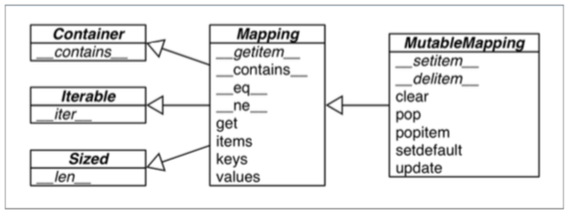
Implementations of specialized mappings often extend dict or collections.UserDict, instead of these ABCs. The main value of the ABCs is documenting and formal‐ izing the minimal interfaces for mappings, and serving as criteria for isinstance tests in code that needs to support mappings in a broad sense:
>>> my_dict = {} >>> isinstance(my_dict, abc.Mapping) True
[ME: first from collections import abc ]
Using insinstace is better than checking whether a function argument is of dict type, because then alternative mapping types can be used.
All mapping types in the standard library use the basic dict in their implementation, so they share the limitation that the keys must be hashable (the values need not be hashable, only the keys).
What is hashable?
An object is hashable if it has a hash value which never changes during its lifetime (it needs a __hash__() method), and can be compared to other objects (it needs an __eq__() method). Hashable objects which compare equal must have the same hash value. […]
The atomic immutable types (str, bytes, numeric types) are all hashable. A frozen set is always hashable, because its elements must be hashable by definition. A tuple is hashable only if all its items are hashable. See tuples tt, tl and tf:
tt = (1, 2, (30, 40)) hash(tt) Out[178]: 8027212646858338501 tl = (1, 2, [30, 40]) hash(tl) --------------------------------------------------------------------------- TypeError Traceback (most recent call last) <ipython-input-179-d2eaad7bd112> in <module>() 1 tl = (1, 2, [30, 40]) ----> 2 hash(tl) TypeError: unhashable type: 'list' tf = (1, 2, frozenset([30, 40])) hash(tf) Out[181]: -4118419923444501110
Warning: At this writing the Python Glossary states: “All of Python’s im‐ mutable built-in objects are hashable” but that is inaccurate be‐ cause a tuple is immutable, yet it may contain references to unhashable objects.
User-defined types are hashable by default because their hash value is their id() and they all compare not equal. If an object implements a custom eq that takes into account its internal state, it may be hashable only if all its attributes are immutable.
Given these ground rules, you can build dictionaries in several ways. The Built-in Types page in the Library Reference has this example to show the various means of building a dict:
a = dict(one=1, two=2, three=3) b = {'one': 1, 'two': 2, 'three': 3} c = dict(zip(['one', 'two', 'three'], [1, 2, 3])) d = dict([('two', 2), ('one', 1), ('three', 3)]) e = dict({'three': 3, 'one': 1, 'two': 2}) a == b == c == d == e Out[183]: True
In addition to the literal syntax and the flexible dict constructor, we can use dict comprehensions to build dictionaries. See the next section.
dict comprehensions
Since Python 2.7 the syntax of listcomps and genexps was applied to dict comprehensions (and set comprehensions as well, which we’ll soon visit). A dictcomp builds a dict instance by producing key:value pair from any iterable.
Example 3-1. Examples of dict comprehensions
DIAL_CODES = [ # 1 (86, 'China'), (91, 'India'), (1, 'United States'), (62, 'Indonesia'), (55, 'Brazil'), (92, 'Pakistan'), (880, 'Bangladesh'), (234, 'Nigeria'), (7, 'Russia'), (81, 'Japan'), ] country_code = {country: code for code, country in DIAL_CODES} # 2 country_code Out[188]: {'Bangladesh': 880, 'Brazil': 55, 'China': 86, 'India': 91, 'Indonesia': 62, 'Japan': 81, 'Nigeria': 234, 'Pakistan': 92, 'Russia': 7, 'United States': 1} {code: country.upper() for country, code in country_code.items() if code < 66} # 3 Out[191]: {1: 'UNITED STATES', 7: 'RUSSIA', 55: 'BRAZIL', 62: 'INDONESIA'}
- A list of pairs can be used directly with the dict constructor.
- Here the pairs are reversed: country is the key, and code is the value.
- Reversing the pairs again, values upper-cased and items filtered by code < 66.
We now move to a panoramic view of the API for mappings.
Overview of common mapping methods
The basic API for mappings is quite rich. Table 3-1 shows the methods implemented by dict and two of its most useful variations: defaultdict and OrderedDict, both defined in the collections module.
Table 3-1. Methods of the mapping types dict, collections.defaultdict and col lections.OrderedDict (common object methods omitted for brevity). Optional ar‐ guments are enclosed in «…».
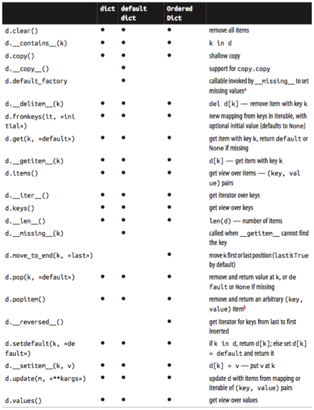
a: default_factory is not a method, but a callable instance attribute set by the end user when defaultdict is instantiated.b: OrderedDict.popitem() removes the first item inserted (FIFO); an optional last argument, if set to True, pops the last item (LIFO).
The way update handles its first argument m is a prime example of duck typing:
- it first checks whether m has a keys method and, if it does, assumes it is a mapping.
- Otherwise, update falls back to iterating over m, assuming its items are (key, value) pairs.
The constructor for most Python mappings uses the logic of update internally, which means they can be initialized from other mappings or from any iterable object producing (key, value) pairs.
A subtle mapping method is setdefault. We don’t always need it, but when we do, it provides a significant speedup by avoiding redundant key lookups. If you are not com‐ fortable using it, the following section explains how, through a practical example.
Handling missing keys with setdefault
In line with the fail-fast philosophy, dict access with d[k] raises an error when k is not an existing key. Every Pythonista knows that d.get(k, default) is an alternative to d[k] whenever a default value is more convenient than handling KeyError. However, when updating the value found (if it is mutable), using either getitem or get is awkward and inefficient. Consider Example 3-2, a sub-optimal script written just to show one case where dict.get is not the best way to handling a missing key.
Example 3-2 is adapted from an example by Alex Martelli2 which generates an index like that in Example 3-3.
Example 3-2. index0.py uses dict.get to fetch and update a list of word occurrences from the index. A better solution is in Example 3-4.
"""Build an index mapping word -> list of occurrences""" import sys import re WORD_RE = re.compile('\w+') index = {} with open(sys.argv[1], encoding='utf-8') as fp: for line_no, line in enumerate(fp, 1): for match in WORD_RE.finditer(line): word = match.group() column_no = match.start() + 1 location = (line_no, column_no) # this is ugly; coded like this to make a point occurrences = index.get(word, []) # 1 occurrences.append(location) # 2 index[word] = occurrences # 3 # print in alphabetical order for word in sorted(index, key=str.upper): # 4 print(word, index[word])
- Get the list of occurrences for word, or [] if not found.
- Append new location to occurrences.
- Put changed occurrences into to index dict; this entails a second search through the index.
- In the key= argument of sorted I am not calling str.upper, just passing a reference to that method so the sorted function can use it to normalize the words for sorting.
Example 3-3. Partial output from Example 3-2 processing the Zen of Python. Each line shows a word and a list of occurrences coded as pairs: (line-number, column-number).
$ python3 index0.py ../../data/zen.txt a [(19, 48), (20, 53)] Although [(11, 1), (16, 1), (18, 1)] ambiguity [(14, 16)] and [(15, 23)] are [(21, 12)] aren [(10, 15)] at [(16, 38)] bad [(19, 50)] be [(15, 14), (16, 27), (20, 50)] beats [(11, 23)] Beautiful [(3, 1)] better [(3, 14), (4, 13), (5, 11), (6, 12), (7, 9), (8, 11), (17, 8), (18, 25)] ...
The three lines dealing with occurrences in Example 3-2 can be replaced by a single line using dict.setdefault. Example 3-4 is closer to Alex Martelli’s original example.
Example 3-4. index.py uses dict.setdefault to fetch and update a list of word occur‐ rences from the index in a single line Example 3-4.
"""Build an index mapping word -> list of occurrences""" import sys import re WORD_RE = re.compile('\w+') index = {} with open(sys.argv[1], encoding='utf-8') as fp: for line_no, line in enumerate(fp, 1): for match in WORD_RE.finditer(line): word = match.group() column_no = match.start() + 1 location = (line_no, column_no) index.setdefault(word, []).append(location) # 1 # print in alphabetical order for word in sorted(index, key=str.upper): # 4 print(word, index[word])
- Get the list of occurrences for word, or set it to [] if not found; setdefault returns the value, so it can be updated without requiring a second search.
In other words, the end result of this line…
my_dict.setdefault(key, []).append(new_value)
…is the same as running…
if key not in my_dict: my_dict[key] = [] my_dict[key].append(new_value)
…except that the latter code performs at least two searches for key — three if it’s not found — while setdefault does it all with a single lookup.
Mappings with flexible key lookup
Sometimes it is convenient to have mappings that return some made-up value when a missing key is searched. There are two main approaches to this: one is to use a default dict instead of a plain dict. The other is to subclass dict or any other mapping type and add a missing method. Both solutions are covered next.
defaultdict: another take on missing keys
Example 3-5 uses collections.defaultdict to provide another elegant solution to the problem in Example 3-4. A defaultdict is configured to create items on demand whenever a missing key is searched.
Here is how it works: when instantiating a defaultdict, you provide a callable which is used to produce a default value whenever getitem is passed a non-existent key argument.
For example, given an empty defaultdict created as dd = defaultdict(list), if 'new-key' is not in dd then the expression dd['new-key'] does the following steps:
- calls list() to create a new list;
- inserts the list into dd using 'new-key' as key;
- returns a reference to that list.
The callable that produces the default values is held in an instance attribute called default_factory.
Example 3-5. index.py uses dict.setdefault to fetch and update a list of word occur‐ rences from the index in a single line Example 3-4.
"""Build an index mapping word -> list of occurrences""" import sys import re import collections WORD_RE = re.compile('\w+') index = collections.defaultdict(list) # 1 with open(sys.argv[1], encoding='utf-8') as fp: for line_no, line in enumerate(fp, 1): for match in WORD_RE.finditer(line): word = match.group() column_no = match.start()+1 location = (line_no, column_no) index[word].append(location) # 2 # print in alphabetical order for word in sorted(index, key=str.upper): print(word, index[word])
- Create a defaultdict with the list constructor as default_factory.
- If word is not initially in the index, the default_factory is called to produce the missing value, which in this case is an empty list that is then assigned to index[word] and returned, so the .append(location) operation always succeeds.
If no default_factory is provided, the usual KeyError is raised for missing keys.
Warning: The default_factory of a defaultdict is only invoked to provide default values for getitem calls, and not for the other meth‐ ods. For example, if dd is a defaultdict, and k is a missing key, dd[k] will call the default_factory to create a default value, but dd.get(k) still returns None.
The __missing method
Underlying the way mappings deal with missing keys is the aptly named missing method. This method is not defined in the base dict class, but dict is aware of it: if you subclass dict and provide a missing method, the standard dict.__getitem__ will call it whenever a key is not found, instead of raising KeyError.
Warning: The missing method is just called by getitem, i.e. for the d[k] operator. The presence of a missing method has no ef‐ fect on the behavior of other methods that look up keys, such as get or contains (which implements the in operator). This is why the default_factory of defaultdict works only with geti tem, as noted in the warning at the end of the previous section.
Suppose you’d like a mapping where keys are converted to str when looked up. A concrete use case is the Pingo.io project, where a programmable board with GPIO pins — like the Raspberry Pi or the Arduino — is represented by a board object with a board.pins attribute which is a mapping of physical pin locations to pin objects, and the physical location may be just a number or a string like "A0" or "P9_12". For con‐ sistency, it is desirable that all keys in board.pins are strings, but it is also convenient that looking up my_arduino.pin[13] works as well, so beginners are not tripped when they want to blink the LED on pin 13 of their Arduinos. Example 3-6 shows how such a mapping would work.
Example 3-6. When searching for a non-string key, StrKeyDict0 converts it to str when it is not found.
# Tests for item retrieval using `d[key]` notation:: d = StrKeyDict0([('2', 'two'), ('4', 'four')]) d[1] Out: Traceback (most recent call last): ... KeyError: '1' # Tests for item retrieval using `d.get(key)` notation:: d.get(4) Out: 'four'
Example 3-7 implements a class StrKeyDict0 that passes the tests above.
Note: A better way to create a user-defined mapping type is to subclass collections.UserDict instead of dict. We’ll do that in Example 3-8. Here we subclass dict just to show that missing is supported by the built-in dict.__getitem__ method.
Example 3-7. StrKeyDict0 converts non-string keys to str on lookup. See tests in Example 3-6
class StrKeyDict0(dict): # 1 def __missing__(self, key): if isinstance(key, str): # 2 raise KeyError(key) return self[str(key)] # 3 def get(self, key, default=None): try: return self[key] # 4 except KeyError: return default # 5 def __contains__(self, key): return key in self.keys() or str(key) in self.keys() # 6 d = StrKeyDict0([('2', 'two'), ('4', 'four')]) print(d.get(4)) print(d[4]) four four
- StrKeyDict0 inherits from dict.
- Check whether key is already a str. If it is, and it’s missing, raise KeyError.
- Build str from key and look it up.
- The get method delegates to getitem by using the self[key] notation; that gives the opportunity for our missing to act.
- If a KeyError was raised, missing already failed, so we return the default.
- Search for unmodified key (the instance may contain non-str keys), then for a str built from the key.
Why the test isinstance(key, str) is needed in the missing implementation?
Without that test, our missing method would work OK for any key k — str or not str — whenever str(k) produced an existing key. But if str(k) is not an existing key, then we’d have an infinite recursion. The last line, self[str(key)] would call getitem passing that str key, which in turn would call missing again.
The contains method is also needed for consistent behavior in this example, be‐ cause the operation k in d calls it, but the method inherited from dict does not fall back to invoking missing. There is a subtle detail in our implementation of contains: we do not check for the key in the usual Pythonic way — k in my_dict — because str(key) in self would recursively call contains. We avoid this by explicitly looking up the key in self.keys().
Tip: A search like k in my_dict.keys() is efficient in Python 3 even for very large mappings because dict.keys() returns a view, which is similar to a set, and containment checks in sets are as fast as in dicts. Details are documented in Dictionary view objects. In Python 2, dict.keys() returns a list, so our solution also works there, but it is not efficient for large dicts, because k in my_list must scan the list.
The check for the unmodified key — key in self.keys() — is necessary for correct‐ ness because StrKeyDict0 does not enforce that all keys in the dict must be of type str. Our only goal with this simple example is to make searching “friendlier” and not enforce types.
So far we have covered the dict and defaultdict mapping types, but the standard library comes with other mapping implementations, which we discuss next.
Variations of dict
In this section we summarize the various mapping types included in collections module of the standard library, besides defaultdict.
collections.OrderedDict: maintains keys in insertion order, allowing iteration over items in a predictable order. The popitem method of an OrderedDict pops the first item by default, but if called as my_odict.popitem(last=True), it pops the last item added.- collections.ChainMap: holds a list of mappings which can be searched as one. The lookup is performed on each mapping in order, and succeeds if the key is found in any of them. This is useful to interpreters for languages with nested scopes, where each mapping represents a scope context. The ChainMap section in the collections docs has several examples of ChainMap usage, including this snippet inspired by the basic rules of variable lookup in Python:
from collections import ChainMap import builtins pylookup = ChainMap(locals(), globals(), vars(builtins))
- collections.Counter: a mapping that holds an integer count for each key. Updating an existing key adds to its count. This can be used to count instances of hashable objects (the keys) or as a multiset — a set that can hold several occurrences of each element. Counter implements the + and - operators to combine tallies, and other useful methods such as most_common([n]), which returns an ordered list of tuples with the n most com‐ mon items and their counts; see the documentation. Here is Counter used to count letters in words:
>>> ct = collections.Counter('abracadabra') >>> ct Counter({'a': 5, 'b': 2, 'r': 2, 'c': 1, 'd': 1}) >>> ct.update('aaaaazzz') >>> ct Counter({'a': 10, 'z': 3, 'b': 2, 'r': 2, 'c': 1, 'd': 1}) >>> ct.most_common(2) [('a', 10), ('z', 3)]
- collections.UserDict: a pure Python implementation of a mapping that works like a standard dict. While OrderedDict, ChainMap and Counter come ready to use, UserDict is designed to be subclassed, as we’ll do next.
Subclassing UserDict
It’s almost always easier to create a new mapping type by extending UserDict than dict. Its value can be appreciated as we extend our StrKeyDict0 from Example 3-7 to make sure that any keys added to the mapping are stored as str.
The main reason why it’s preferable to subclass from UserDict than dict is that the built-in has some implementation shortcuts that end up forcing us to override methods that we can just inherit from UserDict with no problems (The exact problem with subclassing dict and other built-ins is covered in “Subclassing built-in types is tricky” on page 350).
Note that UserDict does not inherit from dict, but has an internal dict instance, called data, which holds the actual items. This avoids undesired recursion when coding special methods like setitem, and simplifies the coding of contains, compared to Example 3-7.
Thanks to UserDict, StrKeyDict (Example 3-8) is actually shorter than StrKeyDict0 (Example 3-7), but it does more: it stores all keys as str, avoiding unpleasant surprises if the instance is built or updated with data containing non-string keys.
Example 3-8. StrKeyDict always converts non-string keys to str — on insertion, update and lookup.
import collections class StrKeyDict(collections.UserDict): # 1 def __missing__(self, key): # 2 if isinstance(key, str): raise KeyError(key) return self[str(key)] def __contains__(self, key): return str(key) in self.data # 3 def __setitem__(self, key, item): self.data[str(key)] = item # 4
- StrKeyDict extends UserDict
- missing is exactly as in Example 3-7
- contains is simpler: we can assume all stored keys are str and we can check on
self.datainstead of invoking self.keys() as we did in StrKeyDict0. - setitem converts any key to a str. This method is easier to overwrite when we can delegate to the
self.dataattribute.
Because UserDict subclasses MutableMapping, the remaining methods that make StrKeyDict a full-fledged mapping are inherited from UserDict, MutableMapping or Mapping. The latter have several useful concrete methods, in spite of being ABCs (ab‐ stract base classes). Worth noting:
- MutableMapping.update: This powerful method can be called directly but is also used by init to load the instance from other mappings, from iterables of (key, value) pairs and key‐ word arguments. Because it uses self[key] = value to add items, it ends up calling our implementation of setitem.
- Mapping.get: In StrKeyDict0 (Example 3-7) we had to code our own get to obtain results consistent with getitem, but in Example 3-8 we inherited
Mapping.getwhich is implemented exactly like StrKeyDict0.get (see Python source code).
Tip: After I wrote StrKeyDict I discovered that Antoine Pitrou authored PEP 455 — Adding a key-transforming dictionary to collections and a patch to enhance the collections module with a TransformDict. The patch is attached to issue18986 and may land in Python 3.5. To experiment with TransformDict I extracted it into a stand-alone module 03-dict-set/transformdict.py in the Fluent Python code repository. TransformDict is more general than StrKeyDict, and is complicated by the requirement to preserve the keys as they were originally inserted.
We know there are several immutable sequence types, but how about an immutable dictionary? Well, there isn’t a real one in the standard library, but a stand-in is available. Read on.
Immutable mappings
The mapping types provided by the standard library are all mutable, but you may need to guarantee that a user cannot change a mapping by mistake. A concrete use case can be found, again, in the Pingo.io project I described in “The missing method” on page 72: the board.pins mapping represents the physical GPIO pins on the device. As such, it’s nice to prevent inadvertent updates to board.pins because the hardware can’t possibly be changed via software, so any change in the mapping would make it incon‐ sistent with the physical reality of the device.
Since Python 3.3 the types module provides a wrapper class MappingProxyType which, given a mapping, returns a mappingproxy instance that is a read-only but dynamic view of the original mapping. This means that updates to the original mapping can be seen in the mappingproxy, but changes cannot be made through it. See Example 3-9 for a brief demonstration.
Example 3-9. MappingProxyType builds a read-only mappingproxy instance from a dict.
from types import MappingProxyType d = {1: 'A'} d_proxy = MappingProxyType(d) d_proxy Out[8]: mappingproxy({1: 'A'}) d_proxy[1] # 1 Out[10]: 'A' d_proxy[2] = 'x' # 2 --------------------------------------------------------------------------- TypeError Traceback (most recent call last) <ipython-input-11-2515ac52334f> in <module>() ----> 1 d_proxy[2] = 'x' TypeError: 'mappingproxy' object does not support item assignment d[2] = 'B' d_proxy # 3 Out[14]: mappingproxy({1: 'A', 2: 'B'}) d_proxy[2] Out[15]: 'B'
- Items in d can be seen through d_proxy.
- Changes cannot be made through d_proxy.
- d_proxy is dynamic: any change in d is reflected.
Here is how this could be used in practice in the Pingo.io scenario: the constructor in a concrete Board subclass would fill a private mapping with the pin objects, and expose it to clients of the API via a public .pins attribute implemented as a mappingproxy. That way the clients would not be able to add, remove or change pins by accident5.
After covering most mapping types in the standard library and when to use them, we now move to the set types.
Set theory
The set type and its immutable sibling frozenset first appeared in a module in Python 2.3 and were promoted to built-ins in Python 2.6.
A set is a collection of unique objects. A basic use case is removing duplication:
>>> l = ['spam', 'spam', 'eggs', 'spam'] >>> set(l) {'eggs', 'spam'} >>> list(set(l)) ['eggs', 'spam']
Set elements must be hashable. The set type is not hashable, but frozenset is, -> so you can have frozenset elements inside a set.
The set types implement the essential set oper‐ ations as infix operators, so, given two sets a and b,
a | breturns their union,a & bcomputes the intersection,a - bthe difference.
Smart use of set operations can reduce both the line count and the run time of Python programs, at the same time making code easier to read and reason about — by removing loops and lots of condi‐ tional logic.
For example, imagine you have a large set of e-mail addresses (the haystack) and a smaller set of addresses (the needles) and you need to count how many of the nee dles occur in the haystack. Thanks to set intersection (the & operator) you can code that in a simple line:
Example 3-10. Count occurrences needles in a haystack, both of type setscrew
found = len(needles & haystack)
Without the intersection operator, you’d have write Example 3-11 to accomplish the same task as Example 3-10:
Example 3-11. Count occurrences of needles in a haystack (same end result as Example 3-10).
found = 0 for n in needles: if n in haystack: found += 1
Example 3-10 runs slightly faster than Example 3-11. On the other hand, Example 3-11 works for any iterable objects needles and haystack, while Example 3-10 requires that both be sets. But, if you don’t have sets on hand, you can always build them on the fly:
Example 3-12. Count occurrences needles in a haystack; these lines work for any iterable types.
found = len(set(needles) & set(haystack)) # another way: found = len(set(needles).intersection(haystack))
Of course, there is an extra cost involved in building the sets in Example 3-12, but if either the needles or the haystack is already a set, the alternatives in Example 3-12 may be cheaper than Example 3-11.
Any one of the above examples are capable of searching 1,000 values in a haystack of 10,000,000 items in a little over 3 milliseconds — that’s about 3 microseconds per needle.
Besides the extremely fast membership test (thanks to the underlying hash table), the set and frozenset built-in types provide a rich selection of operations to create new sets or — in the case of set — to change existing ones. We will discuss the operations shortly, but first a note about syntax.
set literals
The syntax of set literals — {1}, {1, 2}, etc. — looks exactly like the math notation, with one important exception: there’s no literal notation for the empty set, we must remember to write set(). – {} creates an empty dict.
>>>s={1} >>> type(s) <class 'set'> >>> s {1} >>> s.pop() 1 >>> s set()
Literal set syntax like {1, 2, 3} is both faster and more readable than calling the constructor e.g. set([1, 2, 3]).
- The latter form is slower because, to evaluate it, Python has to look up the set name to fetch the constructor, then build a list and finally pass it to the constructor.
- In contrast, to process the a literal like {1, 2, 3}, Python runs a specialized
BUILD_SETbytecode.
Comparing bytecodes for {1} and set([ 1])
Take a look at the bytecode for the two operations, as output by dis.dis (the disas‐ sembler function):
from dis import dis dis('{1}') 1 0 LOAD_CONST 0 (1) 3 BUILD_SET 1 6 RETURN_VALUE dis('set([1])') 1 0 LOAD_NAME 0 (set) 3 LOAD_CONST 0 (1) 6 BUILD_LIST 1 9 CALL_FUNCTION 1 (1 positional, 0 keyword pair) 12 RETURN_VALUE
There is no special syntax to represent frozenset literals — they must be created by calling the constructor.
frozenset(range(10)) frozenset({0, 1, 2, 3, 4, 5, 6, 7, 8, 9})
Speaking of syntax, the familiar shape of listcomps was adapted to build sets as well.
set comprehensions
Set comprehensions (setcomps) were added in Python 2.7, together with the dictcomps
which we saw in “dict comprehensions” on page 66. Here is a simple example:
Example 3-13. Build a set of Latin-1 characters that have the word “SIGN” in their Unicode names.
from unicodedata import name {chr(i) for i in range(32, 256) if 'SIGN' in name(chr(i), '')} {'#', '$', '%', '+', '<', '=', '>', '¢', '£', '¤', '¥', '§', '©', '¬', '®', '°', '±', 'µ', '¶', '×', '÷'}
Syntax matters aside, let’s now overview the rich assortment of operations provided by sets.
Set operations
Figure 3-2. UML class diagram for MutableSet and its superclasses from collec tions.abc. Names in italic are abstract classes and abstract methods. Reverse operator methods omitted for brevity.
Figure 3-2 gives an overview of the methods you can expect from mutable and immut‐ able sets. Many of them are special methods for operator overloading. Table 3-2 shows the math set operators that have corresponding operators or methods in Python. Note that some operators and methods perform in-place changes on the target set (e.g. &=, difference_update etc.). Such operations make no sense in the ideal world of mathe‐ matical sets, and are not implemented in frozenset.
Table 3-2. Mathematical set operations: these methods either produce a new set or up‐ date the target set in place, if it’s mutable.
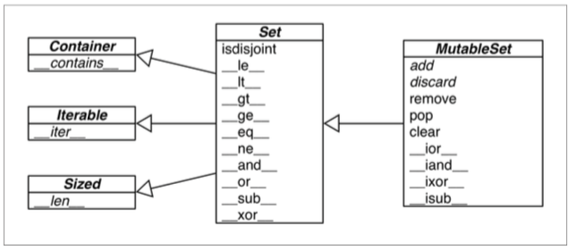
Tip: The infix operators in Table 3-2 require that both operands be sets, but all other methods take one or more iterable arguments. For ex‐ ample, to produce the union of four collections a, b, c and d, you can call a.union(b, c, d), where a must be a set, but b, c and d can be iterables of any type.
Table 3-3 lists set predicates: operators and methods that return True or False.
Table 3-3. Set comparison operators and methods that return a bool.
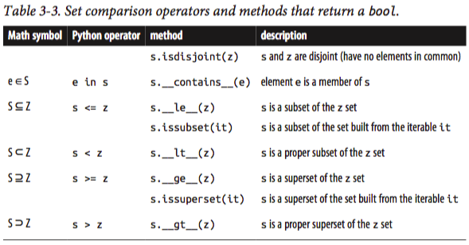
In addition to the operators and methods derived from math set theory, the set types implement other methods of practical use, summarized in Table 3-4.
Table 3-4. Additional set methods.
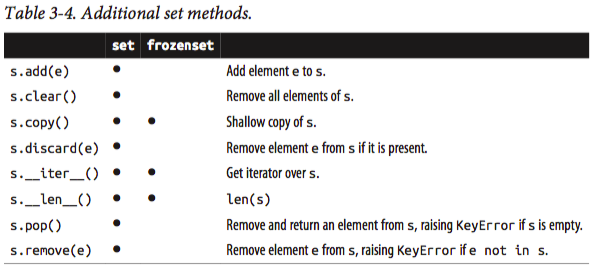
We now change gears to a discussion of how dictionaries and sets are implemented with hash tables. After reading the rest of this chapter you will no longer be surprised by the apparently unpredictable behavior sometimes exhibited by dict, set and their brethren.
dict and set under the hood
Understanding how Python dictionaries and sets are implemented using hash tables is helpful to make sense of their strengths and limitations.
Here are some questions this section will answer:
- How efficient are Python dict and set?
- Why are they unordered?
- Why can’t we use any Python object as a dict key or set element?
- Why does the order of the dict keys or set elements depend on insertion order, and may change during the lifetime of the structure?
- Why is it bad to add items to a dict or set while iterating through it?
To motivate the study of hash tables, we start by showcasing the amazing performance of dict and set with a simple test involving millions of items.
A performance experiment
To see how the size of a dict, set or list affects the performance of search using the in operator, I generated an array of 10 million distinct double-precision floats, the "haystack". I then generated an array of needles: 1,000 floats, with 500 picked from the haystack and 500 verified not to be in it.
For the dict benchmark I used dict.fromkeys() to create a dict named haystack with 1,000 floats. This was the setup for the dict test. The actual code I clocked with the timeit module is Example 3-14 (like Example 3-11).
Example 3-14. Search for needles in haystack and count those found.
found = 0 for n in needles: if n in haystack: found += 1
The benchmark was repeated another 4 times, each time increasing tenfold the size of haystack, to reach a size of 10,000,000 in the last test.
To compare, I repeated the benchmark, with the same haystacks of increasing size, but storing the haystack as a set or as list. For the set tests, in addition to timing the for loop in Example 3-14, I also timed the one-liner in Example 3-15, which produces the same result: count the number of elements from needles that are also in haystack.
Example 3-15. Use set intersection to count the needles that occur in haystack.
found = len(needles & haystack)
Table 3-6 shows the tests side-by-side. The best times are in the “set& time” column, which displays results for the set & operator using the code from Example 3-15. The worst times are — as expected — in the list time column, because there is no hash table to support searches with the in operator on a list, so a full scan must be made, resulting in times that grow linearly with the size of the haystack.
Table 3-6. Total time for using in operator to search for 1,000 keys in haystacks of 5 sizes, stored as dicts, sets and lists on a Core i7 laptop running Python 3.4.0. Tests timed the loop in Example 3-14 except the set& which uses Example 3-15.
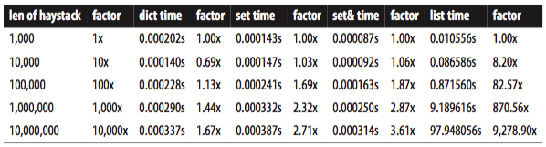
If your program does any kind of I/O, the lookup time for keys in dicts or sets is negli‐ gible, regardless of the dict or set size (as long as it does fit in RAM). See the code used to generate Table 3-6 and accompanying discussion in Appendix A, Example A-1.
Now that we have concrete evidence of the speed of dicts and sets, let’s explore how that is achieved. The discussion of the hash table internals explains, for example, why the key ordering is apparently random and unstable.
Hash tables in dictionaries
This is a high level view of how Python uses a hash table to implement a dict. Many details are omitted — the CPython code has some optimization tricks (The source code for the CPython dictobject.c module is rich in comments. See also the reference for the Beautiful Code book in “Further reading” on page 94) — but the overall description is accurate.
A hash table is a sparse array, i.e. an array which always has empty cells. In standard data structure texts, the cells in a hash table are often called buckets. In a dict hash table, there is a bucket for each item, and it contains two fields: a reference to the key and a reference to the value of the item. Because all buckets have the same size, access to an individual bucket is done by offset.
Python tries to keep at least 1/3 of the buckets empty; if the hash table becomes too crowded, it is copied to a new location with room for more buckets.
To put an item in a hash table the first step is to calculate the hash value of the item key, which is done with the hash() built-in function, explained next.
Hashes and equality
The hash() built-in function works directly with built-in types and falls back to calling hash for user-defined types. If two objects compare equal, their hash values must also be equal, otherwise the hash table algorithm does not work. For example, because 1 = 1.0 is true, hash(1) = hash(1.0) must also be true, even though the internal representation of an int and a float are very different.
Also, to be effective as hash table indexes, hash values should scatter around the index space as much as possible. This means that, ideally, objects that are similar but not equal should have hash values that differ widely. For example, the hashes of 1 and 1.0 are the same, but those of 1.0001, 1.0002 and 1.0003 are very different (The code to produce hashes is in Appendix A. Most of it deals with formatting the output, but it is listed as Example A-3 for completeness).
Tip: Starting with Python 3.3, a random salt value is added to the hashes of str, bytes and datetime objects. The salt value is constant with‐ in a Python process but varies between interpreter runs. The ran‐ dom salt is a security measure to prevent a DOS attack. Details are in a note in the documentation for the hash special method.
With this basic understanding of object hashes, we are ready to dive into the algorithm that makes hash tables operate.
The hash table algorithm
Figure 3-3. Flowchart for retrieving an item from a dict. Given a key, this procedure either returns a value or raises KeyError
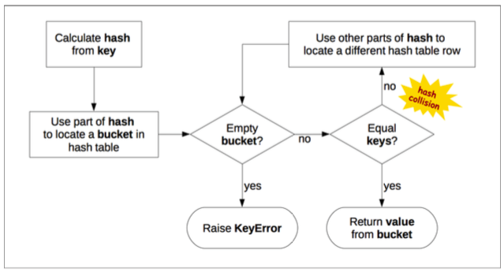
The process to insert or update an item is the same, except that when an empty bucket is located, the new item is put there, and when a bucket with a matching key is found, the value in that bucket is overwritten with the new value.
Additionally, when inserting items Python may determine that the hash table is too crowded and rebuild it to a new location with more room. As the hash table grows, so does the number of hash bits used as bucket offsets, and this keeps the rate of collisions low.
This implementation may seem like a lot of work, but even with millions of items in a dict, many searches happen with no collisions, and the average number of collisions per search is between one and two. Under normal usage, even the unluckiest keys can be found after a handful of collisions are resolved.
Knowing the internals of the dict implementation we can explain the strengths and limitations of this data structure and all the others derived from it in Python. We are now ready to consider why Python dict behave as they do.
Practical consequences of how dict works
In the next five sections, we’ll discuss the limitations and benefits that the underlying hash table implementation brings to dict usage.
#1: Keys must be hashable objects
n object is hashable if all of these requirements are met:
- It supports the hash() function via a __hash__() method that always returns the same value over the lifetime of the object.
- It supports equality via an __eq__() method.
- If a
= b is True then hash(a) =hash(b) must also be True.
User-defined types are hashable by default because their hash value is their id() and they all compare not equal. [ME: built-in types don't have id()?]
Note: If you implement a class with a custom eq method then you must also implement a suitable hash, because you must always make sure that if a = b is True then hash(a) = hash(b) is also True. Otherwise you are breaking an invariant of the hash table algorithm, with the grave consequence that dicts and sets will not deal reliably with your objects. If a custom eq depends on mu‐ table state, then hash must raise TypeError with a message like unhashable type: 'MyClass'.
#2: dicts have significant memory overhead
Because a dict uses a hash table internally, and hash tables must be sparse to work, they are not space efficient. For example, if you are handling a large quantity of records it makes sense to store them in a list of tuples or named tuples instead of using a list of dictionaries in JSON style, with one dict per record.
Replacing dicts with tuples reduces the memory usage in two ways:
- by removing the overhead of one hash table per record
- by not storing the field names again with each record.
For user-defined types, the __slots__ class attribute changes the storage of instance attributes from a dict to a tuple in each instance. This will be discussed in “Saving space with the slots class attribute” on page 265 (Chapter 9).
Keep in mind we are talking about space optimizations. If you are dealing with a few million objects and your machine has gigabytes of RAM, you should postpone such optimizations until they are actually warranted. Optimization is the altar where main‐ tainability is sacrificed.
#3: Key search is very fast
The dict implementation is an example of trading space for time: dictionaries have significant memory overhead, but they provide fast access regardless of the size of the dictionary — as long as it fits in memory. As Table 3-5 shows, when we increased the size of a dict from 1,000 to 10,000,000 elements, the time to search grew by a factor of 2.8, from 0.000163s to 0.000456s. The latter figure means we could search more than 2 million keys per second in a dict with 10 million items.
#4: Key ordering depends on insertion order
When a hash collision happens, the second key ends up in a position that it would not normally occupy if it had been inserted first. So, a dict built as dict([(key1, value1), (key2, value2)]) compares equal to dict([(key2, value2), (key1, value1)]), but their key ordering may not be the same if the hashes of key1 and key2 collide.
Example 3-17 demonstrates the effect of loading three dicts with the same data, just in different order. The resulting dictionaries all compare equal, even if their order is not the same.
Example 3-17. dialcodes.py fills three dictionaries with the same data sorted in differ‐ ent ways. See output in Example 3-18
# dial codes of the top 10 most populous countries DIAL_CODES = [ (86, 'China'), (91, 'India'), (1, 'United States'), (62, 'Indonesia'), (55, 'Brazil'), (92, 'Pakistan'), (880, 'Bangladesh'), (234, 'Nigeria'), (7, 'Russia'), (81, 'Japan'), ] d1 = dict(DIAL_CODES) # 1 print('d1:', d1.keys()) d2 = dict(sorted(DIAL_CODES)) # 2 print('d1:', d2.keys()) d3 = dict(sorted(DIAL_CODES, key=lambda x:x[1])) # 3 print('d1:', d3.keys()) assert d1 == d2 == d3 # 4
- d1: built from the tuples in descending order of country population.
- d2: filled with tuples sorted by dial code.
- d3: loaded with tuples sorted by country name.
- The dictionaries compare equal, because they hold the same key:value pairs.
Example 3-18. Output from dialcodes.py shows three distinct key orderings.
d1: dict_keys([880, 1, 86, 55, 7, 234, 91, 92, 62, 81]) d1: dict_keys([880, 1, 91, 86, 81, 55, 234, 7, 92, 62]) d1: dict_keys([880, 81, 1, 86, 55, 7, 234, 91, 92, 62])
#5: Adding items to a dict may change the order of existing keys
Whenever you add a new item to a dict, the Python interpreter may decide that the hash table of that dictionary needs to grow. This entails building a new, bigger hash table, and adding all current items to the new table. During this process, new (but different) hash collisions may happen, with the result that the keys are likely to be ordered differently in the new hash table. All of this is implementation-dependent, so you cannot reliably predict when it will happen. If you are iterating over the dictionay keys and changing them at the same time, your loop may not scan all the items as expected — not even the items that were already in the dictionary before you added to it.
This is why modifying the contents of a dict while iterating through it is a bad idea. If you need to scan and add items to a dictionary, do it in two steps: read the dict from start to finish and collect the needed additions in a second dict. Then update the first one with it.
Tip: In Python 3, the .keys(), .items() and .values() methods return dictionary views, which behave more like sets than the lists re‐ turned by these methods in Python 2. Such views are also dynamic: they do not replicate the contents of the dict, and they immediately reflect any changes to the dict.
How sets work - practical consequences
The set and frozenset types are also implemented with a hash table, except that each bucket holds only a reference to the element (as if it were a key in a dict, but without a value to go with it). In fact, before set was added to the language, we often used dictionaries with dummy values just to perform fast membership tests on the keys.
Everything said in “Practical consequences of how dict works” on page 90 about how the underlying hash table determines the behavior of a dict applies to a set. Without repeating the previous section, we can summarize it for sets with just a few words:
- Set elements must be hashable objects.
- Sets have a significant memory overhead.
- Membership testing is very efficient.
- Element ordering depends on insertion order.
- Adding elements to a set may change the order of other elements.
Chapter summary
Dictionaries are a keystone of Python. Beyond the basic dict, the standard library offers handy, ready-to-use specialized mappings like defaultdict, OrderedDict, ChainMap and Counter, all defined in the collections module. The same module also provides the easy to extend UserDict class.
Two powerful methods available in most mappings are setdefault and update.
- The setdefault method is used to update items holding mutable values, for example, in a dict of list values, to avoid redundant searches for the same key.
- The update method allows bulk insertion or overwriting of items from any other mapping, from iterables providing (key, value) pairs and from keyword arguments. Mapping constructors also use update internally, allowing instances to be initialized from mappings, iterables or keyword arguments.
A clever hook in the mapping API is the missing method, that lets you customize what happens when a key is not found.
The collections.abc module provides the Mapping and MutableMapping abstract base classes for reference and type checking. The little-known MappingProxyType from the types module creates immutable mappings. There are also ABCs for Set and Mutable Set.
The hash table implementation underlying dict and set is extremely fast. Understanding its logic explains why items are apparently unordered and may even be reordered behind our backs. There is a price to pay for all this speed, and the price is in memory.
Further reading
Chapter 8.3. collections — Container datatypes of the Python Standard Library docu‐ mentation has examples and practical recipes with several mapping types. The Python source code for that module — Lib/collections/__init__.py is a great reference for anyone who wants to create a new mapping type or grok the logic of the existing ones.
Chapter 1 of Python Cookbook, 3rd ed. (O’Reilly, 2013) by David Beazley and Brian K. Jones has 20 handy and insightful recipes with data structures — the majority using dict in clever ways.
The book Beautiful Code (O’Reilly) has a chapter titled “Python’s Dictionary Imple‐ mentation: Being All Things to All People” with a detailed explanation of the inner workings of the Python dict, written by A. M. Kuchling — a Python core contributor and author of many pages of the official Python docs and how-tos. Also, there are lots of comments in the source code of the CPython dictobject.c module. Brandon Craig Rhodes’ presentation The Mighty Dictionary is excellent and shows how hash tables work by using lots of slides with… tables!
The rationale for adding sets to the language is documented in PEP 218 — Adding a Built-In Set Object Type. When PEP 218 was approved, no special literal syntax was adopted for sets. The set literals where created for Python 3 and backported to Python 2.7, along with dict and set comprehensions. PEP 274 — Dict Comprehensions is the birth certificate of dictcomps. I could not find a PEP for setcomps; apparently they were adopted because they get along well with their siblings — a jolly good reason.
Soapbox
My friend Geraldo Cohen once remarked that Python is “simple and correct”.
The dict type is an example of simplicity and correctness. It’s highly optimized to do one thing well: retrieve arbitrary keys. It’s fast and robust enough to be used all over the Python interpreter itself. If you need predictable ordering, use OrderedDict. That is not a requirement in most uses of mappings, so it makes sense to keep the core implemen‐ tation simple and offer variations in the standard library.
Contrast with PHP, where arrays are described like this in the official PHP Manual:
An array in PHP is actually an ordered map. A map is a type that associates values to keys. This type is optimized for several different uses; it can be treated as an array, list (vector), hash table (an implementation of a map), dictionary, collection, stack, queue, and probably more.
From that description, I don’t know what is the real cost of using PHP’s list/Ordered Dict hybrid.
The goal of this and the previous chapter in this book was to showcase the Python collection types optimized for particular uses. I made the point that beyond the trusty list and dict there are specialized alternatives for different use cases.
Before finding Python I had done Web programming using Perl, PHP and JavaScript. I really enjoyed having a literal syntax for mappings in these languages, and I badly miss it whenever I have to use Java or C. A good literal syntax for mappings makes it easy to do configuration, table-driven implementations and to hold data for prototyping and testing. The lack of it pushed the Java community to adopt the verbose and overly com‐ plex XML as a data format.
JSON was proposed as “The Fat-Free Alternative to XML” and became a huge success, replacing XML in many contexts. A concise syntax for lists and dictionaries makes an excellent data interchange format.
PHP and Ruby imitated the hash syntax from Perl, using => to link keys to values. JavaScript followed the lead of Python and uses :. Of course JSON came from JavaScript, but it also happens to be an almost exact subset of Python syntax. JSON is compatible with Python except for the spelling of the values true, false and null. The syntax everybody now uses for exchanging data is the Python dict and list syntax.
Simple and correct.
4. Text versus bytes
Humans use text. Computers speak bytes.
— Esther Nam and Travis Fischer
Character encoding and Unicode in Python
Python 3 introduced a sharp distinction between strings of human text and sequences of raw bytes. Implicit conversion of byte sequences to Unicode text is a thing of the past. This chapter deals with Unicode strings, binary sequences and the encodings used to convert between them.
But even if that is your case, there is no escaping the str versus byte divide. As a bonus, you’ll find that the specialized binary sequence types provide features that the “all-purpose” Python 2 str type does not have.
In this chapter we will visit the following topics:
- characters, code points and byte representations;
- unique features of binary sequences: bytes, bytearray and memoryview;
- codecs for full Unicode and legacy character sets;
- avoiding and dealing with encoding errors;
- best practices when handling text files;
- the default encoding trap and standard I/O issues;
- safe Unicode text comparisons with normalization;
- utility functions for normalization, case folding and brute-force diacritic removal;
- proper sorting of Unicode text with locale and the PyUCA library;
- character metadata in the Unicode database;
- dual-mode APIs that handle str and bytes;
Let’s start with the characters, code points and bytes.
Character issues
The concept of “string” is simple enough: a string is a sequence of characters. The prob‐ lem lies in the definition of “character”.
In 2014 the best definition of “character” we have is a Unicode character. Accordingly, the items you get out of a Python 3 str are Unicode characters, just like the items of a unicode object in Python 2 — and not the raw bytes you get from a Python 2 str.
The Unicode standard explicitly separates the identity of characters from specific byte representations.
- The identity of a character — its code point — is a number from 0 to 1,114,111 (base 10), shown in the Unicode standard as 4 to 6 hexadecimal digits with a “U+” prefix. For example, the code point for the letter A is U+0041, the Euro sign is U+20AC and the musical symbol G clef is assigned to code point U+1D11E. About 10% of the valid code points have characters assigned to them in Unicode 6.3, the standard used in Python 3.4.
- The actual bytes that represent a character depend on the encoding in use. An en‐ coding is an algorithm that converts code points to byte sequences and vice-versa. The code point for A (U+0041) is encoded as the single byte \x41 in the UTF-8 encoding, or as the bytes \x41\x00 in UTF-16LE encoding. As another example, the Euro sign (U+20AC) becomes three bytes in UTF-8 — \xe2\x82\xac — but in UTF-16LE it is encoded as two bytes: \xac\x20.
Converting from code points to bytes is encoding; from bytes to code points is decoding.
Example 4-1. Encoding and decoding.
>>> s = 'café' >>> len(s) # 1 4 >>> b = s.encode('utf8') # 2 >>> b b'caf\xc3\xa9' # 3 >>> len(b) # 4 5 >>> b.decode('utf8') # 5 'café'
- The str 'café' has 4 Unicode characters.
- Encode str to bytes using UTF-8 encoding.
- bytes literals start with a b prefix.
- bytes b has five bytes (the code point for “é” is encoded as two bytes in UTF-8).
- Decode bytes to str using UTF-8 encoding.
[ME:]
s = 'café' len(s) Out[50]: 5 # <----- WHY? b = s.encode('utf8') b Out[52]: b'cafe\xcc\x81' len(b) Out[55]: 6 b.decode('utf8') b.decode('utf8') Out[57]: 'café' len(b.decode('utf8')) Out[60]: 5
Although the Python 3 str is pretty much the Python 2 unicode type with a new name, the Python 3 bytes is not simply the old str renamed, and there is also the closely related bytearray type. So it is worthwhile to take a look at the binary sequence types before advancing to encoding/decoding issues.
Byte essentials
The new binary sequence types are unlike the Python 2 str in many regards. The first thing to know is that there are two basic built-in types for binary sequences: the im‐ mutable bytes type introduced in Python 3 and the mutable bytearray, added in Python 2.6.
Each item in bytes or bytearray is an integer from 0 to 255, and not a 1-character string like in the Python 2 str. However a slice of a binary sequence always produces a binary sequence of the same type — including slices of length 1.
…
Structs and memory views
The struct module provides functions to parse packed bytes into a tuple of fields of different types and to perform the opposite conversion, from a tuple into packed bytes. struct is used with bytes, bytearray and memoryview objects.
As we’ve seen in “Memory views” on page 51, memoryview class does not let you create or store byte sequences, but provides shared memory access to slices of data from other binary sequences, packed arrays and buffers such as PIL images, without copying the bytes.
Example 4-4 shows the use of memoryview and struct together to extract the width and height of a GIF image.
Example 4-4. Using memoryview and struct to inspect a GIF image header.
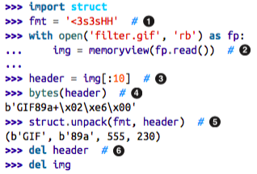
- struct format:
- < little-endian;
- 3s3s two sequences of 3 bytes;
- HH two 16-bit integers.
- Create memoryview from file contents in memory…
- …then another memoryview by slicing the first one; no bytes are copied here.
- Convert to bytes for display only; 10 bytes are copied here.
- Unpack memoryview into tuple of: type, version, width and height.
- Delete references to release the memory associated with the memoryview instances.
Note that slicing a memoryview returns a new memoryview, without copying bytes.
We will not go deeper into memoryview or the struct module in this book, but if you work with binary data, you’ll find it worthwhile to study their docs: Built-in Types » Memory Views and struct — Interpret bytes as packed binary data.
After this brief exploration of binary sequence types in Python, let us see how they are converted to/from strings.
Basic encoder/decoders
The Python distribution bundles more than 100 codecs (encoder/decoder) for text to byte conversion and vice-versa. Each codec has a name, like 'utf_8', and often aliases, such as 'utf8', 'utf-8' and 'U8', which you can use as the encoding argument in functions like open(), str.encode(), bytes.decode() and so on.
…
After this overview of common encodings, we now move to handling issues in encoding and decoding operations.
Understanding encode/decode problems
Although there is a generic UnicodeError exception, almost always the error reported is more specific: either an UnicodeEncodeError, when converting str to binary se‐ quences or an UnicodeDecodeError when reading binary sequences into str. Loading Python modules may also generate SyntaxError when the source encoding is unex‐ pected. We’ll show how to handle all of these errors in the next sections.
Coping with UnicodeEncodeError
Most non-UTF codecs handle only a small subset of the Unicode characters. When converting text to bytes, if a character is not defined in the target encoding, UnicodeEn codeError will be raised, unless special handling is provided by passing an errors argument to the encoding method or function. The behavior of the error handlers is shown in Example 4-6.
Example 4-6. Encoding to bytes: success and error handling
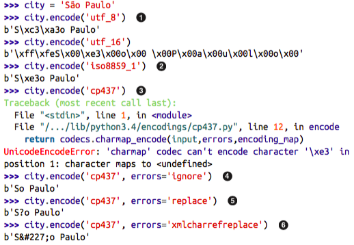
- The 'utf_?' encodings handle any str.
- 'iso8859_1' also works for the 'São Paulo' str.
- 'cp437' can’t encode the 'ã' (“a” with tilde). The default error handler — 'strict' — raises UnicodeEncodeError.
- The error='ignore' handler silently skips characters that cannot be encoded; this is usually a very bad idea.
- When encoding, error='replace' substitutes unencodable characters with '?'; data is lost, but users will know something is amiss.
- 'xmlcharrefreplace' replaces unencodable characters with a XML entity.
Tip: The codecs error handling is extensible. You may register extra strings for the errors argument by passing a name and an error handling function to the codecs.register_error function. See the co decs.register_error documentation.
Coping with UnicodeDecodeError
Not every byte holds a valid ASCII character, and not every byte sequence is valid UTF-8 or UTF-16, therefore when you assume one of these encodings while converting a binary sequence to text, you will get a UnicodeDecodeError if unexpected bytes are found.
On the other hand, many legacy 8-bit encodings like 'cp1252', 'iso8859_1', 'koi8_r' are able to decode any stream of bytes, including random noise, without generating errors. Therefore, if your program assumes the wrong 8-bit encoding, it will silently decode garbage.
Tip: Garbled characters are known as gremlins or mojibake (賁賁賁賁 - Japanese for “transformed text”)7.
…
- Using 'replace' error handling, the \xe9 is replaced by “�” (code point U +FFFD), the official Unicode REPLACEMENT CHARACTER intended to represent unknown characters.
SyntaxError when loading modules with unexpected encoding
UTF-8 is the default source encoding for Python 3, just as ASCII was the default for Python 2 (starting with 2.5). If you load a .py module containing non-UTF-8 data and no encoding declaration, you get a message like this:
SyntaxError: Non-UTF-8 code starting with '\xe1' in file ola.py on line
1, but no encoding declared; see http://python.org/dev/peps/pep-0263/
for details
Because UTF-8 is widely deployed in GNU/Linux and OSX systems, a likely scenario is opening a .py file created on Windows with cp1252. Note that this error happens even in Python for Windows, because the default encoding for Python 3 is UTF-8 across all platforms.
To fix this problem, add a magic coding comment at the top of the file:
Example 4-8. 'ola.py': “Hello, World!” in Portuguese.
# coding: cp1252 print('Olá, Mundo!')
Tip: Now that Python 3 source code is no longer limited to ASCII and defaults to the excellent UTF-8 encoding, the best “fix” for source code in legacy encodings like 'cp1252' is to convert them to UTF-8 al‐ ready, and not bother with the coding comments. If your editor does not support UTF-8, it’s time to switch.
Non-ASCII names in source code: should you use them?
Python 3 allows non-ASCII identifiers in source code:
>>> ação = 'PBR' # ação = stock >>> ε = 10**-6 # ε = epsilon 天数=5 In [63]: 天数 Out[63]: 5
If the code belongs to a multi-national corporation or is Open Source and you want contributors from around the World, the identifiers should be in English, and then all you need is ASCII.
Choose the human language that makes the code easier to read by the team, then use the characters needed for correct spelling.
Suppose you have a text file, be it source code or poetry, but you don’t know its encoding. How to detect the actual encoding? The next section answers that with a library rec‐ ommendation.
How to discover the encoding of a byte sequence
Short answer: you can’t. You must be told.
However, considering that human languages also have their rules and restrictions, once you assume that a stream of bytes is human plain text it may be possible to sniff out its encoding using heuristics and statistics. For example, if b'\x00' bytes are common, it is probably a 16 or 32-bit encoding, and not an 8-bit scheme, because null characters in plain text are bugs; when the byte sequence b'\x20\x00' appears often, it is likely to be the space character (U+0020) in a UTF-16LE encoding, rather than the obscure U +2000 EN QUAD character — whatever that is.
That is how the package Chardet — The Universal Character Encoding Detector works to identify one of 30 supported encodings. Chardet is a Python library that you can use in your programs, but also includes a command-line utility, chardetect. Here is what it reports on the source file for this chapter:
$ chardetect 04-text-byte.asciidoc 04-text-byte.asciidoc: utf-8 with confidence 0.99
Although binary sequences of encoded text usually don’t carry explicit hints of their encoding, the UTF formats may prepend a byte order mark to the textual content. That is explained next.
BOM: a useful gremlin
…
The bytes are: b'\xff\xfe'. That is a BOM — byte-order mark — denoting the “little- endian” byte ordering of the Intel CPU where the encoding was performed.
- Big endian: To avoid confusion, the UTF-16 encoding prepends the text to be encoded with the special character ZERO WIDTH NO-BREAK SPACE (U+FEFF) which is invisible.
- On a little-endian system, that is encoded as b'\xff\xfe' (decimal 255, 254).
…
The character U+FEFF encoded in UTF-8 is the three-byte sequence b'\xef\xbb\xbf'. So if a file starts with those three bytes, it is likely to be a UTF-8 file with a BOM. However, Python does not automatically assume a file is UTF-8 just because it starts with b'\xef\xbb\xbf'.
Handling text files
Figure 4-2. Unicode sandwich: current best practice for text processing.
…
The best practice for handling text is the “Unicode sandwich” (Figure 4-2)8. This means that bytes should be decoded to str as early as possible on input, e.g. when opening a file for reading. The “meat” of the sandwich is the business logic of your program, where text handling is done exclusively on str objects. You should never be encoding or de‐ coding in the middle of other processing. On output, the str are encoded to bytes as late as possible. Most Web frameworks work like that, and we rarely touch bytes when using them. In Django, for example, your views should output Unicode str; Django itself takes care of encoding the response to bytes, using UTF-8 by default.
If the encoding argument was omitted when opening the file to write, the locale default encoding would be used.
Tip: Code that has to run on multiple machines or on multiple occa‐ sions should never depend on encoding defaults. Always pass an ex‐ plicit encoding= argument when opening text files.
Example 4-10. Closer inspection of Example 4-9 running on Windows reveals the bug and how to fix it.
…
- os.stat reports that the file holds 5 bytes; UTF-8 encodes 'é' as two bytes, 0xc3 and 0xa9.
- The 'rb' flag opens a file for reading in binary mode.
- The returned object is a BufferedReader and not a TextIOWrapper.
Tip: Do not open text files in binary mode unless you need to analyze the file contents to determine the encoding — even then, you should be using Chardet instead of reinventing the wheel (see “How to discov‐ er the encoding of a byte sequence” on page 108). Ordinary code should only use binary mode to open binary files, like raster images.
Encoding defaults: a madhouse
…
Tip: On GNU/Linux and OSX all of these encodings are set to UTF-8 by default, and have been for several years, so I/O handles all Unicode characters. On Windows, not only are different encodings used in the same system, but they are usually codepages like 'cp850' or 'cp1252' that support only ASCII with 127 additional characters that are not the same from one encoding to the other. Therefore, Windows users are far more likely to face encoding errors unless they are extra careful.
The most important encoding setting is that returned by locale.get preferredencoding(): it is the default for opening text files and for sys.stdout/stdin/ stderr when they are redirected to files. -> Therefore, the best advice about encoding defaults is: do not rely on them.
-> If you follow the advice of the Unicode sandwich and always are explicit about the encodings in your programs, you will avoid a lot of pain.
The next two sections cover subjects that are simple in ASCII-land, but get quite complex on planet Unicode: text normalization — i.e. converting text to a uniform representation for- comparisons
- and sorting.
Normalizing Unicode for saner comparisons
String comparisons are complicated by the fact that Unicode has combining characters: diacritics and other marks that attach to the preceding character, appearing as one when printed.
For example, the word “café” may be composed in two ways, using 4 or 5 code points, but the result looks exactly the same:
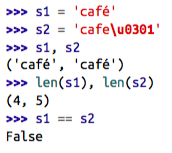
The solution is to use Unicode normalization, provided by the unicodedata.normal ize function. The first argument to that function is one of four strings: 'NFC', 'NFD', 'NFKC' and 'NFKD'.
NFC (Normalization Form C) composes the code points to produce the shortest equivalent string, while NFD decomposes, expanding composed characters into base char‐ acters and separate combining characters. Both of these normalizations make comparisons work as expected:
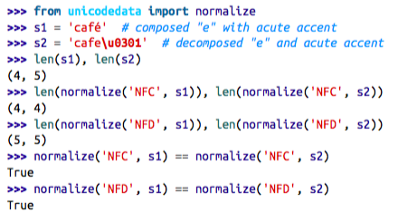
Western keyboards usually generate composed characters, so text typed by users will be in NFC by default. But to be safe it may be good to sanitize strings with normal ize('NFC', user_text) before saving. NFC is also the normalization form recom‐ mended by the W3C in Character Model for the World Wide Web: String Matching and Searching.
In the NFKC and NFKD forms, each compatibility character is replaced by a “compat‐ ibility decomposition” of one or more characters that are considered a “preferred” rep‐ resentation, even if there is some formatting loss.
The normalize function knows nothing about format‐ ting. Therefore, NFKC or NFKD may lose or distort information, but they can produce convenient intermediate representations for searching and indexing: users may be pleased that a search for '1⁄2 inch' also finds documents containing '1⁄2 inch'.
Warning: NFKC and NFKD normalization should be applied with care and only in special cases — e.g. search and indexing — and not for per‐ manent storage, as these transformations cause data loss.
When preparing text for searching or indexing, another operation is useful: case folding, our next subject.
Case folding
Case folding is essentially converting all text to lowercase, with some additional trans‐ formations. It is supported by the str.casefold() method (new in Python 3.3).
For any string s containing only latin1 characters, s.casefold() produces the same result as s.lower(), with only two exceptions: the micro sign 'μ' is changed to the Greek lower case mu (which looks the same in most fonts) and the German Eszett or “sharp s” (ß) becomes “ss”.
As of Python 3.4 there are 116 code points for which str.casefold() and str.low er() return different results. That’s 0.11% of a total of 110,122 named characters in Unicode 6.3.
As usual with anything related to Unicode, case folding is a complicated issue with plenty of linguistic special cases, but the Python core team made an effort to provide a solution that hopefully works for most users.
In the next couple of sections, we’ll put our normalization knowledge to use developing utility functions.
Unity functions for normalized text matching
As we’ve seen, NFC and NFD are safe to use and allow sensible comparisons between Unicode strings. NFC is the best normalized form for most applications. str.case fold() is the way to go for case-insensitive comparisons.
If you work with text in many languages, a pair of functions like nfc_equal and fold_equal in Example 4-13 are useful additions to your toolbox.
Example 4-13. normeq.py: normalized Unicode string comparison.
""" Utility functions for normalized Unicode string comparison. Using Normal Form C, case sensitive: >>> s1 = 'café' >>> s2 = 'cafe\u0301' >>> s1 == s2 False >>> nfc_equal(s1, s2) True >>> nfc_equal('A', 'a') False Using Normal Form C with case folding: >>> s3 = 'Straße' >>> s4 = 'strasse' >>> s3 == s4 False >>> nfc_equal(s3, s4) False >>> fold_equal(s3, s4) True >>> fold_equal(s1, s2) True >>> fold_equal('A', 'a') True """ from unicodedata import normalize def nfc_equal(str1, str2): return normalize('NFC', str1) == normalize('NFC', str2) def fold_equal(str1, str2): return (normalize('NFC', str1).casefold() == normalize('NFC', str2).casefold())
Beyond Unicode normalization and case folding — both part of the Unicode standard — sometimes it makes sense to apply deeper transformations, like changing 'café' into 'cafe'. We’ll see when and how in the next section.
extreme "normalization": taking out diacritics
the google search secret sauce involves many tricks, but one of them apparently is ignoring diacritics (e.g. accents, cedillas etc.), at least in some contexts. removing dia‐ critics is not a proper form of normalization because if often changes the meaning of words and may produce false positives when searching. but it helps coping with some facts of life: people sometimes are lazy or ignorant about the correct use of diacritics, and spelling rules change over time, meaning that accents come and go in living lan‐ guages.
outside of searching, getting rid of diacritics also makes for more readable urls, at least in latin based languages.
…
often the reason to remove diacritics is to change latin text to pure ascii, but shave_marks also changes non-latin characters — like greek letters — which will never become ascii just by losing their accents. so it makes sense to analyze each base char‐ acter and to remove attached marks only if the base character is a letter from the latin alphabet. this is what example 4-16 does.
…
an even more radical step would be to replace common symbols in western texts, like curly quotes, em-dashes, bullets etc. into ascii equivalents. this is what the function asciize does in example 4-17.
…
to summarize, the functions in sanitize.py go way beyond standard normalization and perform deep surgery on the text, with a good chance of changing its meaning. only you can decide whether to go so far, knowing the target language, your users and how the transformed text will be used.
sorting unicode text
python sorts sequences of any type by comparing the items in each sequence one by one. for strings, this means comparing the code points. unfortunately, this produces unacceptable results for anyone who uses non-ascii characters.
the standard way to sort non-ascii text in python is to use the locale.strxfrm function which, according to the locale module docs, “transforms a string to one that can be used in locale-aware comparisons”.
to enable locale.strxfrm you must first set a suitable locale for your application, and pray that the os supports it.
example 4-19. using the locale.strxfrm function as sort key.
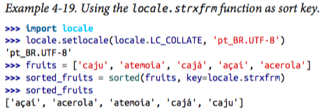
you need to call setlocale(lc_collate, «your_locale») before using lo cale.strxfrm as the key when sorting.
…
caveats
…
so the standard library solution to internationalized sorting works, but seems to be well supported only on gnu/linux (perhaps also on windows, if you are an expert). even then, it depends on locale settings, creating deployment headaches.
fortunately there is a simpler solution: the pyuca library, available on pypi.
sorting with the unicode collation algorithm
james tauber, prolific django contributor, must have felt the pain and created pyu‐ ca, a pure-python implementation of uca—the unicode collation algorithm. example 4-20 shows how easy it is to use.
example 4-20. using the pyuca.collator.sort_key method.
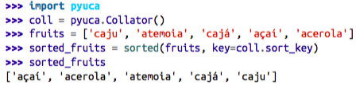
This is friendly and just works. I tested it on GNU/Linux, OSX and Windows. Only Python 3.X is supported at this time.
PyUCA does not take the locale into account. If you need to customize the sorting, you can provide the path to a custom collation table to the Collator() constructor. Out of the box, it uses allkeys.txt which is bundled with the project. That’s just a copy of the Default Unicode Collation Element Table from Unicode 6.3.0.
By the way, that table is one of the many that comprise the Unicode database, our next subject.
The Unicode database
The Unicode standard provides an entire database — in the form of numerous struc‐ tured text files — that includes not only the table mapping code points to character names, but also lot of metadata about the individual characters and how they are related. For example, the Unicode database records whether a character is printable, is a letter, is a decimal digit or is some other numeric symbol. That’s how the str methods isidentifier, isprintable, isdecimal and isnumeric work. str.casefold also uses in‐ formation from a Unicode table.
The unicodedata module has functions that return character metadata, for instance, its official name in the standard, whether it is a combining character (e.g. diacritic like a combining tilde) and the numeric value of the symbol for humans (not its code point). Example 4-21 shows the use of unicodedata.name() unicodedata.numeric() along with the .isdecimal() and .isnumeric() methods of str.
Example 4-21. Demo of Unicode database numerical character metadata. Callouts de‐ scribe each column in the output.
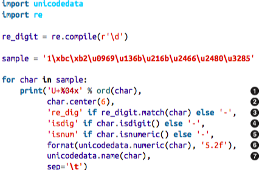
- Code point in U+0000 format.
- Character centralized in a str of length 6.
- Show re_dig if character matches the r'\d' regex.
- Show isdig if char.isdigit() is True.
- Show isnum if char.isnumeric() is True.
- Numeric value formated with width 5 and 2 decimal places.
- Unicode character name.
Figure 4-3. Nine numeric characters and metadata about them; re_dig means the character matches the regular expression r'\d'.
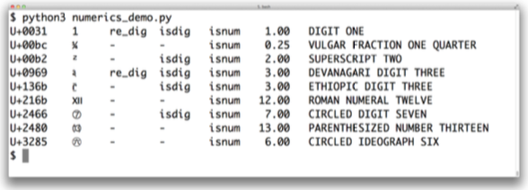
The sixth column of Figure 4-3 is the result of calling unicodedata.numeric(char) on the character. It shows that Unicode knows the numeric value of symbols that represent numbers. So if you want to create a spreadsheet application that supports tamil digits or roman numerals, go for it!
Figure 4-3 shows that the regular expression r'\d' matches the digit “1” and the De‐ vanagari digit three, but not some other characters that are considered digits by the isdigit function. The re module is not as savvy about Unicode as it could be. The new regex module available in PyPI was designed to eventually replace re and provides better Unicode support17. We’ll come back to the re module in the next section.
Throughout this chapter we’ve used several unicodedata functions, but there are many more we did not cover. See the standard library documentation for the unicodedata module.
We will wrap up our tour of str versus bytes with a quick look at a new trend: dual mode APIs offering functions that accept str or bytes arguments with special handling depending on the type.
Dual mode str and bytes APIs
The standard library has functions that accept str or bytes arguments and behave differently depending on the type. Some examples are in the re and os modules.
str versus bytes in regular expressions
If you build a regular expression with bytes, patterns such as \d and \w only match ASCII characters; in contrast, if these patterns are given as str, they match Unicode digits or letters beyond ASCII.
Example 4-22 and Figure 4-4 compare how letters, ASCII digits, superscripts and Tamil digits are matched by str and bytes patterns.
Example 4-22. ramanujan.py: compare behavior of simple str and bytes regular ex‐ pressions.
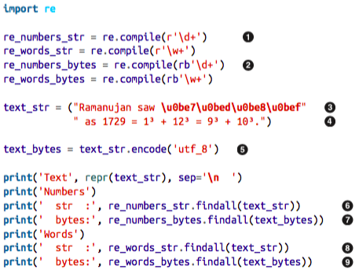
- The first two regular expressions are of the str type.
- The last two are of the bytes type.
- Unicode text to search, containing the Tamil digits for 1729 (the logical line continues until the right parenthesis token).
- This string is joined to the previous one at compile time (see String literal concatenation in the Language Reference)
- A bytes string is needed to search with the bytes regular expressions.
- The str pattern r'\d+' matches the Tamil and ASCII digits.
- The bytes pattern rb'\d+' matches only the ASCII bytes for digits.
- The str pattern r'\w+' matches the letters, superscripts, Tamil and ASCII digits.
- The bytes pattern rb'\w+' matches only the ASCII bytes for letters and digits.
Figure 4-4. Screenshot of running ramanujan.py from Example 4-22.
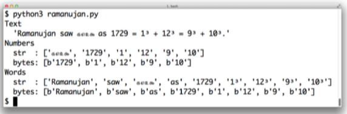
Example 4-22 is a trivial example to make one point: you can use regular expressions on str and bytes but in the second case bytes outside of the ASCII range are treated as non-digits and non-word characters.
For str regular expressions there is a re.ASCII flag that makes \w, \W, \b, \B, \d, \D, \s and § perform ASCII-only matching. See the documentation of the re module for full details.
Another important dual mode module is os.
str versus bytes on os functions
The GNU/Linux kernel is not Unicode savvy, so in the real world you may find file names made of byte sequences that are not valid in any sensible encoding scheme, and cannot be decoded to str. File servers with clients using a variety of OSes are particularly prone to this problem.
To work around this issue, all os module functions that accept file names or path names take arguments as str or bytes. If one such function is called with a str argument, the argument will be automatically converted using the codec named by sys.getfilesystemencoding(), and the OS response will be decoded with the same codec. This is almost always what you want, in keeping with the Unicode sandwich best practice.
But if you must deal with (and perhaps fix) file names that cannot be handled in that way, you can pass bytes arguments to the os functions to get bytes return values. This feature lets you deal with any file or path name, no matter how many gremlins you may find. See Example 4-23.
Example 4-23. listdir with str and bytes arguments and results.
>>> os.listdir('.') # 1 ['abc.txt', 'digits-of-π.txt'] >>> os.listdir(b'.') # 2 [b'abc.txt', b'digits-of-\xcf\x80.txt']
- The second filename is “digits-of-π.txt” (with the Greek letter pi).
- Given a byte argument, listdir returns filenames as bytes: b'\xcf\x80' is the UTF-8 encoding of the Greek letter pi).
To help with manual handling of str or bytes sequences that are file or path names, the os module provides special encoding and decoding functions:
- fsencode(filename): Encodes filename (can be str or bytes) to bytes using the codec named by sys.getfilesystemencoding() if filename is of type str, otherwise return the filename bytes unchanged.
- fsdecode(filename): Decodes filename (can be str or bytes) to str using the codec named by sys.get filesystemencoding() if filename is of type bytes, otherwise return the file name str unchanged.
On Unix-derived platforms, these functions use the surrogateescape error handler (see next sidebar) to avoid choking on unexpected bytes. On Windows, the strict error handler is used.
Using surrogateescape to deal with gremlins
A trick to deal with unexpected bytes or unknown encodings is the surrogateescape codec error handler described in PEP 383 — Non-decodable Bytes in System Character Interfaces introduced in Python 3.1.
The idea of this error handler is to replace each non-decodable byte with a code point in the Unicode range from U+DC00 to U+DCFF that lies in the so-called “Low Surrogate Area” of the standard — a code space with no characters assigned, reserved for internal use in applications. On encoding, such code points are converted back to the byte values they replaced.
Example 4-24. listdir with str and bytes arguments and results.
>>> os.listdir('.') # 1 ['abc.txt', 'digits-of-π.txt'] >>> os.listdir(b'.') # 2 [b'abc.txt', b'digits-of-\xcf\x80.txt'] >>> pi_name_bytes = os.listdir(b'.')[1] # 3 >>> pi_name_str = pi_name_bytes.decode('ascii', 'surrogateescape') # 4 >>> pi_name_str # 5 'digits-of-\udccf\udc80.txt' >>> pi_name_str.encode('ascii', 'surrogateescape') # 6 b'digits-of-\xcf\x80.txt'
- List directory with a non-ASCII file name.
- Let’s pretend we don’t know the encoding and get file names as bytes.
- pi_names_bytes is the file name with the pi character.
- Decode it to str using the 'ascii' codec with 'surrogateescape'.
- Each non-ASCII byte is replaced by a surrogate code point: '\xcf\x80' becomes '\udccf\udc80'
- Encode back to ASCII bytes: each surrogate code point is replaced by the byte it replaced.
Chapter summary
We started the chapter by dismissing the notion that 1 character == 1 byte. As the world adopts Unicode (80% of Web sites already use UTF-8), we need to keep the concept of text strings separated from the binary sequences that represent them in files, and Python 3 enforces this separation.
After a brief overview of the binary sequence data types — bytes, bytearray and mem oryview — we jumped into encoding and decoding, with a sampling of important co‐ decs, followed by approaches to prevent or deal with the infamous UnicodeEncodeEr ror, UnicodeDecodeError and the SyntaxError caused by wrong encoding in Python source files.
While on the subject of source code, I presented my position on the debate about non- ASCII identifiers: if the maintainers of the code base want to use a human language that has non-ASCII characters, the identifiers should follow suit — unless the code needs to run on Python 2 as well. But if the project aims to attract an international contributor base, identifiers should be made from English words, and then ASCII suffices.
We then considered the theory and practice of encoding detection in the absence of metadata: in theory, it can’t be done, but in practice the Chardet package pulls it off pretty well for a number of popular encodings. Byte order marks were then presented as the only encoding hint commonly found in UTF-16 and UTF-32 files — sometimes in UTF-8 files as well.
In the next section we demonstrated opening text files, an easy task except for one pitfall: the encoding= keyword argument is not mandatory when you open a text file, but it should be. If you fail to specify the encoding, you end up with a program that manages to generate “plain text” that is incompatible across platforms, due to conflicting default encodings. We then exposed the different encoding settings that Python uses as defaults and how to detect them: locale.getpreferredencoding(), sys.getfilesystemen coding(), sys.getdefaultencoding() and the encodings for the standard I/O files (e.g. sys.stdout.encoding). A sad realization for Windows users is that these settings often have distinct values within the same machine, and the values are mutually in‐ compatible; GNU/Linux and OSX users, in contrast, live in a happier place where UTF-8 is the default pretty much everywhere.
Text comparisons are surprisingly complicated because Unicode provides multiple ways of representing some characters, so normalizing is a prerequisite to text matching. In addition to explaining normalization and case folding, we presented some utility func‐ tions that you may adapt to your needs, including drastic transformations like removing all accents. We then saw how to sort Unicode text correctly by leveraging the standard locale module — with some caveats — and an alternative that does not depend on tricky locale configurations: the external PyUCA package.
Finally we glanced at the Unicode database — a source of metadata about every char‐ acter — and wrapped up with brief discussion of dual mode APIs — e.g. the re and os modules — where some functions can be called with str or bytes arguments, prompt‐ ing different yet fitting results.
Further reading
Ned Batchelder’s 2012 PyCon US talk “Pragmatic Unicode — or — How Do I Stop the Pain?” was outstanding. Ned is so professional that he provides a full transcript of the talk along with the slides and video. Esther Nam and Travis Fischer gave an excellent PyCon 2014 talk “Character encoding and Unicode in Python: How to (╯°□°)╯( ┻━┻ with dignity” (slides, video) from which I quoted this chapter’s short and sweet epigraph: “Humans use text. Computers speak bytes”. Lennart Regebro — one of this book's technical reviewers — presents his “Useful Mental Model of Unicode (UMMU)” in the short post Unconfusing Unicode: What is Unicode?. Unicode is a complex stan‐ dard, so Lennart’s UMMU is a really useful starting point.
The official Unicode HOWTO in the Python docs approaches the subject from several different angles, from a good historic intro to syntax details, codecs, regular expressions, file names and best practices for Unicode-aware I/O (i.e. the Unicode sandwich), with plenty of additional reference links from each section. Chapter 4 — Strings of Mark Pilgrim’s awesome book “Dive into Python 3” also provides a very good intro to Unicode support in Python 3. In the same book, Chapter 15 describes how the Chardet library was ported from Python 2 to Python 3, a valuable case study given that the switch from old the str to the new bytes is the cause of most migration pains, and that is a central concern in a library designed to detect encodings.
If you know Python 2 but are new to Python 3, Guido van Rossum’s What’s New In Python 3.0 has 15 bullet points that summarize what changed, with lots of links. Guido starts with the blunt statement: “Everything you thought you knew about binary data and Unicode has changed.” Armin Ronacher’s blog post The Updated Guide to Unicode on Python is deep and highlights some of the pitfalls of Unicode in Python 3 (Armin is not a big fan of Python 3).
Chapter 2 — Strings and Text — of the Python Cookbook, 3rd. edition (O’Reilly, 2013), by David Beazley and Brian K. Jones, has several recipes dealing with Unicode normal‐ ization, sanitizing text, and performing text-oriented operations on byte sequences. Chapter 5 covers files and I/O, and it includes recipe 5.17. — Writing Bytes to a Text File — showing that underlying any text file there is always a binary stream that may be accessed directly when needed. Later in the cookbook the struct module is put to use in recipe 6.11 — Reading and Writing Binary Arrays of Structures.
Nick Coghlan’s Python Notes blog has two posts very relevant to this chapter: Python 3 and ASCII Compatible Binary Protocols and Processing Text Files in Python 3. Highly recommended.
Binary sequences are about to gain new constructors and methods in Python 3.5, with one of the current constructor signatures being deprecated (see PEP 467 — Minor API improvements for binary sequences). Python 3.5 should also see the implementation of PEP 461 — Adding % formatting to bytes and bytearray.
A list of encodings supported by Python is available at Standard Encodings in the codecs module documentation. If you need to get that list programmatically, see how it’s done in the /Tools/unicode/listcodecs.py script that comes with the CPython source code.
Martijn Faassen’s Changing the Python default encoding considered harmful and Tarek Ziadé’s sys.setdefaultencoding is evil explain why the default encoding you get from sys.getdefaultencoding() should never be changed, even if you discover how.
The books Unicode Explained by Jukka K. Korpela (O’Reilly, 2006) and Unicode De‐ mystified by Richard Gillam (Addison-Wesley, 2003) are not Python-specific but were very helpful as I studied Unicode concepts. Programming with Unicode by Victor Stin‐ ner is a free self-published book (Creative Commons BY-SA) covering Unicode in gen‐ eral as well as tools and APIs in the context of the main operating systems and a few programming languages, including Python.
The W3C page Case Folding: An Introduction and Character Model for the World Wide Web: String Matching and Searching covers normalization concepts, with the former being a gentle introduction and the latter a working draft written in dry standard- speak — the same tone of the Unicode Standard Annex #15 — Unicode Normalization Forms. The Frequently Asked Questions / Normalization from Unicode.org is more readable, as is the NFC FAQ by Mark Davis — author of several Unicode algorithms and president of the Unicode Consortium at the time of this writing.
Soapbox
What is “plain text”?
For anyone who deals non-English text on a daily basis, “plain text” does not imply “ASCII”. The Unicode Glossary defines plain text like this:
Computer-encoded text that consists only of a sequence of code points from a given standard, with no other formatting or structural information.
That definition starts very well, but I don’t agree with the part after the comma. HTML is a great example of a plain text format that carries formatting and structural informa‐ tion. But it’s still plain text because every byte in such a file is there to represent a text character, usually using UTF-8. There are no bytes with non-text meaning, as you can find in a .png or .xls document where most bytes represent packed binary values like RGB values and floating point numbers. In plain text, numbers are represented as se‐ quences of digit characters.
I am writing this book in a plain text format called — ironically — .asciidoc. Ascii‐ Doc is part of the toolchain of the excellent Atlas book publishing platform created by O’Reilly Media. AsciiDoc source files are plain text, but they are UTF-8, not ASCII. Otherwise writing this chapter would have been really painful. Despite the name, Ascii‐ Doc is just great.
The world of Unicode is constantly expanding and, at the edges, tool support is not always there. That’s why I had to use images for Figure 4-1, Figure 4-3 and Figure 4-4: not all characters I wanted to show were available in the fonts used to render the book. On the other hand, the Ubuntu 14.04 and OSX 10.9 terminals display them perfectly well — including the Japanese characters for the word “mojibake”: 賁賁賁賁.
Unicode riddles
Imprecise qualifiers such as “often”, “most” and “usually” seem to pop up whenever I write about Unicode normalization. I regret the lack of more definitive advice, but there are so many exceptions to the rules in Unicode that it is hard to be absolutely positive.
For example, the μ (micro sign) is considered a “compatibility character” but the Ω (ohm) and Å (Ångström) symbols are not. The difference has practical consequences: NFC normalization — recommended for text matching — replaces the Ω (ohm) by Ω (uppercase Grek omega) and the Å (Ångström) by Å (uppercase A with ring above). But as a “compatibility character” the μ (micro sign) is not replaced by the visually identical μ (lowercase Greek mu), except when the stronger NFKC or NFKD normali‐ zations are applied, and these transformations are lossy.
I understand the μ (micro sign) is in Unicode because it appears in the latin1 encoding and replacing it with the Greek mu would break round-trip conversion. After all, that’s why the micro sign is a “compatibility character”. But if the ohm and Ångström symbols are not in Unicode for compatibility reasons, then why have them at all? There are already code points for the GREEK CAPITAL LETTER OMEGA and the LATIN CAPITAL LET TER A WITH RING ABOVE which look the same and replace them on NFC normalization. Go figure.
My take after many hours studying Unicode: it is hugely complex and full of special cases, reflecting the wonderful variety of human languages and the politics of industry standards.
How are str represented in RAM?
The official Python docs avoid the issue of how the code points of a str are stored in memory. This is, after all, an implementation detail. In theory it doesn’t matter: whatever the internal representation, every str must be encoded to bytes on output.
In memory, Python 3 stores each str as a sequence of code points using a fixed number of bytes per code point, to allow efficient direct access to any character or slice.
Before Python 3.3, CPython could be compiled to use either 16 or 32 bits per code point in RAM; the former was a “narrow build”, the latter a “wide build”. To know which you have, check the value of sys.maxunicode: 65535 implies a “narrow build” that can’t handle code points above U+FFFF transparently [ME: with python 3.5, it's 1114111]. A “wide build” doesn’t have this lim‐ itation, but consumes a lot of memory: 4 bytes per character, even while the vast majority of code points for Chinese ideographs fit in 2 bytes. Neither option was great, so you had to choose depending on your needs.
Since Python 3.3, when creating a new str object, the interpreter checks the characters in it and chooses the most economic memory layout that is suitable for that particular str: if there are only characters in the latin1 range, that str will use just one byte per code point. Otherwise 2 or 4 bytes per code point may be used, depending on the str. This is a simplification, for the full details look up PEP 393 — Flexible String Repre‐ sentation.
The flexible string representation is similar to the way the int type works in Python 3: if the integer fits in a machine word, it is stored in one machine word. Otherwise, the interpreter switches to a variable-length representation like that of the Python 2 long type. It is nice to see the spread of good ideas.
Part III. Functions as objects
5. First-class functions
Functions in Python are first-class objects. Programming language theorists define a “first-class object” as a program entity that can be:
- created at runtime;
- assigned to a variable or element in a data structure;
- passed as an argument to a function;
- returned as the result of a function.
This chapter and the rest of Part III of the book focuses on the implications and practical applications of treating functions as objects.
Treating a function like an object
def f(n): '''return n!''' return i if n < 2 else n * f(n-1) f.__doc__ Out[69]: 'return n!' type(f) Out[70]: function
Tip: The doc attribute is used to generate the help text of an object.
help(f) Output: Help on function f in module __main__: f(n) return n!
The next snippet shows the “first class” nature of a function object. We can assign it a variable fact and call it through that name. We can also pass factorial as an argument to map. The map function returns an iterable where each item is the the result of the application of the first argument (a function) to succesive elements of the second ar‐ gument (an iterable), range(10) in this example.
fact = f fact Out[87]: <function __main__.f> fact(5) Out[90]: 120 map(fact, range(11)) Out[92]: <map at 0x10495deb8> list(map(fact, range(11))) Out[95]: [1, 1, 2, 6, 24, 120, 720, 5040, 40320, 362880, 3628800]
Having first-class functions enables programming in a functional style. One of the hall‐ marks of functional programming is the use of higher-order functions, our next topic.
Higher-order function
A function that takes a function as argument or returns a function as result is a higher- order function. One example is map.
Another is the sorted built- in function: an optional key argument lets you provide a function to be applied to each item for sorting, as seen in “list.sort and the sorted built-in function” on page 42. Any one-argument function can be used as key.
In the functional programming paradigm, some of the best known higher-order func‐ tions are map, filter, reduce and apply. The apply function was deprecated in Python 2.3 and removed in Python 3 because it’s no longer necessary. If you need to call a function with a dynamic set of arguments, you can just write fn(*args, **key words) instead of apply(fn, args, kwargs).
The map, filter and reduce higher-order functions are still around, but better alter‐ natives are available for most of their use cases, as the next section shows.
Modern replacements for map, filter and reduce
Functional languages commonly offer the map, filter and reduce higher-order func‐ tions (sometimes with different names). The map and filter functions are still built- ins in Python 3, but since the introduction of list comprehensions and generator ex‐ pressions, they are not as important.
A listcomp or a genexp does the job of map and filter combined, but is more readable. Consider this:
Example 5-5. Lists of factorials produced with map and filter compared to alterna‐ tives coded as list comprehensions.
list(map(fact, range(6))) # 1 Out[96]: [1, 1, 2, 6, 24, 120] # 2 [fact(n) for n in range(6)] # 2 Out[98]: [1, 1, 2, 6, 24, 120] list(map(fact, filter(lambda n: n % 2, range(6)))) # 3 Out[99]: [1, 6, 120] [fact(n) for n in range(6) if n % 2] # 4 Out[100]: [1, 6, 120]
- Build a list of factorials from 0! to 5!
- Same operation, with a list comprehension.
- List of factorials of odd numbers up to 5!, using both map and filter.
- List comprehension does the same job, replacing map and filter, and making lambda unnecessary.
In Python 3, map and filter return generators — a form of iterator — so their direct substitute is now a generator expression.
The reduce function was demoted from a built-in in Python 2 to the functools module in Python 3. Its most common use case, summation, is better served by the sum built-in available since Python 2.3. This is a big win in terms of readability and performance (see Example 5-5).
Example 5-6. Sum of integers up to 99 performed with reduce and sum.
from functools import reduce # 1 from operator import add # 2 reduce(add, range(100)) # 3 Out[101]: 4950 sum(range(100)) Out[102]: 4950
- Starting with Python 3.0, reduce is not a built-in.
- Import add to avoid creating a function just to add two numbers.
- Sum integers up to 99.
- Same task using sum; import or adding function not needed.
The common idea of sum and reduce is to apply some operation to successive items in a sequence, accumulating previous results, thus reducing a sequence of values to a single value.
Other reducing built-ins are all and any:
- all(iterable): return True if every element of the iterable is truthy; all([]) returns True.
- any(iterable): return True if any element of the iterable is truthy; all([]) returns False.
I give a fuller explanation of reduce in “Vector take #4: hashing and a faster ==” on page 290 where an ongoing example provides a meaningful context for the use of this function. The reducing functions are summarized later in the book when iterables are in focus, in “Iterable reducing functions” on page 436.
To use a higher-order function sometimes it is convenient to create a small, one-off function. That is why anonymous functions exist. We’ll cover them next.
Anonymous functions
The lambda keyword creates an anonymous function within a Python expression/.
However, the simple syntax of Python limits the body of lambda functions to be pure expressions. In other words, the body of a lambda cannot make assignments or use any other Python statement such as while, try etc.
The best use of anonymous functions is in the context of an argument list. For example, here is the rhyme index example from Example 5-4 rewritten with lambda, without defining a reverse function:
Example 5-7. Sorting a list of words by their reversed spelling using lambda.
fruits = ['strawberry', 'fig', 'apple', 'cherry', 'raspberry', 'banana'] sorted(fruits, key=lambda word: word[::-1]) Out[104]: ['banana', 'apple', 'fig', 'raspberry', 'strawberry', 'cherry']
Outside the limited context of arguments to higher-order functions, anonymous func‐ tions are rarely useful in Python. The syntactic restrictions tend to make non-trivial lambdas either unreadable or unworkable.
Lundh’s lambda refactoring recipe
If you find a piece of code hard to understand because of a lambda, Fredrik Lundh suggests this refactoring procedure:
- Write a comment explaining what the heck that lambda does.
- Study the comment for a while, and think of a name that captures the essence of the comment.
- Convert the lambda to a def statement, using that name.
- Remove the comment.
The steps above are quoted from the Functional Programming HOWTO, a must read.
The lambda syntax is just syntactic sugar: a lambda expression creates a function object just like the def statement. That is just one of several kinds of callable objects in Python. The following section overviews all of them.
The seven flavors of callable objects
The call operator, i.e. (), may be applied to other objects beyond user-defined functions. To determine whether an object is callable, use the callable() built-in function.
The Python Data Model documentation lists seven callable types:
- User-defined functions: created with def statements or lambda expressions.
- Built-in functions: a function implemented in C (for CPython), like len or time.strftime.
- Built-in methods: methods implemented in C, like dict.get.
- Methods: functions defined in the body of a class.
- Classes: when invoked, a class runs its
__new__method to create an instance, then__init__to initialize it, and finally the instance is returned to the caller. Because there is no new operator in Python, calling a class is like calling a function. - Class instances: if a class defines a call method, then its instances may be invoked as functions. See “User defined callable types” on page 145 below.
- Generator functions: functions or methods that use the
yieldkeyword. When called, generator functions return a generator object. – Generator functions are unlike other callables in many respects. Chapter 14 is devoted to them. They can also be used as coroutines, which are covered in Chapter 16.
Tip: Given the variety of existing callable types in Python, the safest way to determine whether an object is callable is to use the calla ble() built-in:
>>> abs, str, 13 (<built-in function abs>, <class 'str'>, 13) >>> [callable(obj) for obj in (abs, str, 13)] [True, True, False]
We now move to building class instances that work as callable objects.
User defined callable types
Not only are Python functions real objects, but arbitrary Python objects may also be made to behave like functions. Implementing a call instance method is all it takes.
Example 5-8. bingocall.py: A BingoCage does one thing: picks items from a shuffled list.
import random class BingoCage: def __init__(self, items): self._items = list(items) # 1 random.shuffle(self._items) # 2 def pick(self): # 3 try: return self._items.pop() except IndexError: raise LookupError('pick from empty BingoCage') # 4 def __call__(self): # 5 return self.pick() bingo = BingoCage(range(3)) bingo.pick() Out[110]: 1 bingo() Out[111]: 2 bingo() Out[112]: 0 bingo() --------------------------------------------------------------------------- IndexError Traceback (most recent call last) callable(bingo) Out: True
- init accepts any iterable; building a local copy prevents unexpected side-
- effects on any list passed as an argument.
- shuffle is guaranteed to work because self._items is a list.
- The main method.
- Raise exception with custom message if self._items is empty. Shortcut to bingo.pick(): bingo().
A class implementing __call__ is an easy way to create function-like objects that have some internal state that must be kept across invocations, like the remaining items in the BingoCage. An example is a decorator. Decorators must be functions, but it is sometimes convenient to be able to “remember” something between calls of the decorator, for example for memoization — caching the results of expensive computations for later use.
A totally different approach to creating functions with internal state is to use closures. Closures, as well as decorators, are the subject of Chapter 7.
We now move to another aspect of handling functions as objects: run-time introspection.
Function introspection
Function objects have many attributes beyond doc. See below what the dir function reveals about our factorial:
dir(fact) >>>> ['__annotations__', '__call__', '__class__', '__closure__', '__code__', '__defaults__', '__delattr__', '__dict__', '__dir__', '__doc__', '__eq__', '__format__', '__ge__', '__get__', '__getattribute__', '__globals__', '__gt__', '__hash__', '__init__', '__kwdefaults__', '__le__', '__lt__', '__module__', '__name__', '__ne__', '__new__', '__qualname__', '__reduce__', '__reduce_ex__', '__repr__', '__setattr__', '__sizeof__', '__str__', '__subclasshook__']
Like the instances of a plain user-defined class, a function uses the dict attribute to store user attributes assigned to it. This is useful as a primitive form of annotation. Assigning arbitrary attributes to functions is not a very common practice in general, but Django is one framework that uses it.
Computing the difference of two sets quickly gives us a list of the function-specific attributes:
Example 5-9. Listing attributes of functions that don’t exist in plain instances.
class C: pass # 1 obj = C() # 2 def func(): pass # 3 sorted(set(dir(func)) - set(dir(obj))) # 4 Out[116]: ['__annotations__', '__call__', '__closure__', '__code__', '__defaults__', '__get__', '__globals__', '__kwdefaults__', '__name__', '__qualname__']
Table 5-1 shows a summary of the attributes listed by Example 5-9.
Table 5-1. Attributes of user-defined functions
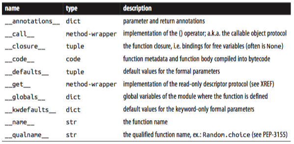
In coming sections we will discuss the defaults, code and annota tions, used by IDEs and frameworks to extract information about function signa‐ tures. But to fully appreciate these attributes, we will make a detour to explore the powerful syntax Python offers to declare function parameters and to pass arguments into them.
From positional to keyword-only parameters
One of the best features of Python functions is the extremely flexible parameter handling mechanism, enhanced with keyword-only arguments in Python 3. Closely related are the use of * and ** to “explode” iterables and mappings into separate arguments when we call a function. To see these features in action, see the code for Example 5-10 and tests showing its use in Example 5-11.
Example 5-10. tag generates HTML. A keyword-only argument cls is used to pass "class" attributes as a work-around because class is a keyword in Python.
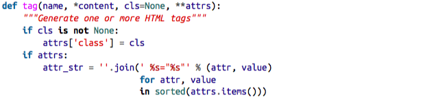
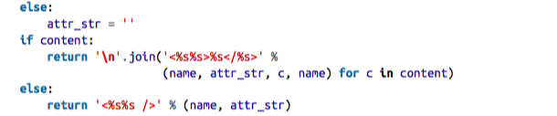
The tag function can be invoked in many ways, as Example 5-11 shows.
Example 5-11. Some of the many ways of calling the tag function from Example 5-10.
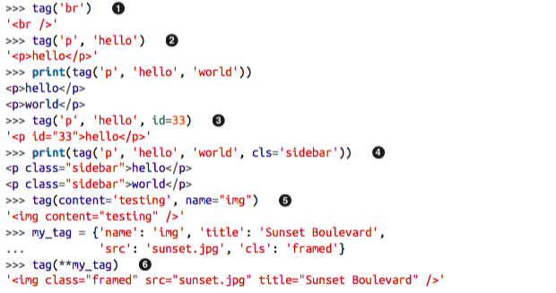
- A single positional argument produces an empty tag with that name.
- Any number of arguments after the first are captured by
*contentas a tuple. - Keyword arguments not explicitly named in the tag signature are captured by
**attrsas a dict. - The cls parameter can only be passed as a keyword argument.
- Even the first positional argument can be passed as a keyword when tag is called.
- Prefixing the my_tag dict with
**passes all its items as separate arguments which are then bound to the named parameters, with the remaining caught by **attrs.
Keyword-only arguments are a new feature in Python 3. In Example 5-10 the cls parameter can only be given as a keyword argument — it will never capture unnamed positional arguments.
To specify keyword-only arguments when defining a function, name them after the argument prefixed with *.
If you don’t want to support variable positional arguments but still want keyword-only arguments, put a * by itself in the signature, like this:
def f(a, *, b): return a, b f(1, b=2) >>>> (1, 2)
Note that keyword-only arguments do not need to have a default value: they can be mandatory, like b in the example above.
Retrieving information about parameters
An interesting application of function introspection can be found in the Bobo HTTP micro-framework.
The point is that Bobo introspects the hello function and finds out it needs one parameter named person to work, and it will retrieve a parameter with that name from the request and pass it to hello, so the programmer does not need to touch the request object at all.
Within a function object, the defaults attribute holds a tuple with the default values of positional and keyword arguments. The defaults for keyword-only arguments appear in kwdefaults. The names of the arguments, however, are found within the code attribute, which is a reference to a code object with many attributes of its own.
Example 5-15. Function to shorten a string by clipping at a space near the desired length.
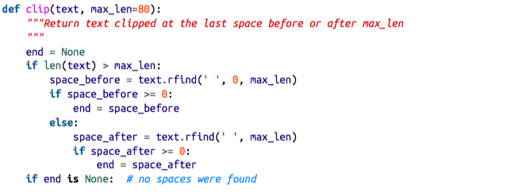
Example 5-16 shows the values of defaults, code.co_varnames and code.co_argcount for the clip function listed above.
Example 5-16. Extracting information about the function arguments.
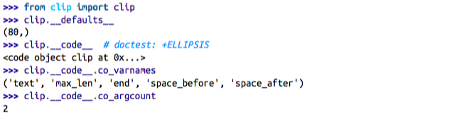
This is not the most convenient arrangement of information. The argu‐ ment names appear in code.co_varnames, but that also includes the names of the local variables created in the body of the function. Therefore the argument names are the first N strings, where N is given by code.co_argcount which — by the way — does not include any variable arguments prefixed with * or **.
Fortunately there is a better way: the inspect module.
Example 5-17. Extracting the function signature.
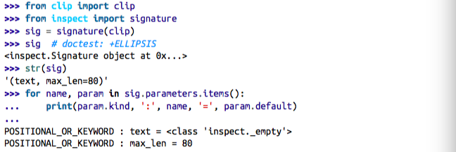
An inspect.Signature object has a bind method that takes any number of arguments and binds them to the parameters in the signature, applying the usual rules for matching actual arguments to formal parameters. This can be used by a framework to validate arguments prior to the actual function invocation.
Example 5-18. Binding the function signature from the tag function in Example 5-10 do a dict of arguments.
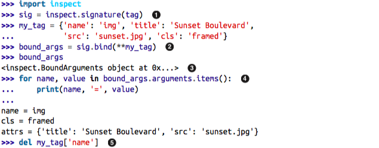
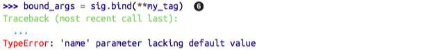
- Get the signature from tag function in Example 5-10.
- Pass a dict of arguments to .bind().
- An inspect.BoundArguments object is produced.
- Iterate over the items in bound_args.arguments, which is an OrderedDict, to display the names and values of the arguments.
- Remove the mandatory argument name from my_tag.
- Calling sig.bind(**my_tag) raises a TypeError complaining of the missing name parameter.
This is shows how the Python Data Model, with the help of inspect, exposes the same machinery the interpreter uses to bind arguments to formal parameters in function calls.
Frameworks and tools like IDEs can use this information to validate code. Another feature of Python 3, function annotations, enhances the possible uses of this, as we will see next.
Function annotations
Python 3 provides syntax to attach metadata to the parameters of a function declaration and its return value.
Example 5-19. Annotated clip function.
def clip(text:str, max_len:'int > 0'=80) -> str:
Each argument in the function declaration may have an annotation expression preceded by :. If there is a default value, the annotation goes between the argument name and the = sign. To annotate the return value, add -> and another expression between the ) and the : at the tail of the function declaration. The expressions may be of any type. The most common types used in annotations are classes, like str or int, or strings, like 'int > 0', as seen in the annotation for max_len in Example 5-19.
No processing is done with the annotations. They are merely stored in the annota tions attribute of the function, a dict.
The only thing Python does with annotations is to store them in the annota tions attribute of the function. Nothing else: no checks, enforcement, validation, or any other action is performed. In other words, annotations have no meaning to the Python interpreter.
inspect.signature() knows how to extract the annota‐ tions, as Example 5-20 shows.
In the future, frameworks such as Bobo could support annotations to further automate request processing.
The biggest impact of functions annotations will probably not be dynamic settings such as Bobo, but in providing optional type information for static type checking in tools like IDEs and linters.
After this deep dive into the anatomy of functions, the remaining of this chapter covers the most useful packages in the standard library supporting functional programming.
Packages for functional programming
Although Guido makes it clear that Python does not aim to be a functional program‐ ming language, a functional coding style can be used to good extent, thanks to the support of packages like operator and functools.
The operator module
Often in functional programming it is convenient to use an arithmetic operator as a function. For example, suppose you want to multiply a sequence of numbers to calculate factorials without using recursion. To perform summation you can use sum, but there is no equivalent function for multiplication. You could use reduce — as we saw in “Modern replacements for map, filter and reduce” on page 142 — but this requires a function to multiply two items of the sequence. Here is how to solve this using lambda:
Example 5-21. Factorial implemented with reduce and an anonymous function.
from functools import reduce def fact(n): return reduce(lambda a, b: a*b, range(1, n+1))
To save you the trouble of writing trivial anonymous functions like lambda a, b: a*b, the operator module provides function equivalents for dozens of arithmetic oper‐ ators. With it, we can rewrite Example 5-21 as Example 5-22.
Example 5-22. Factorial implemented with reduce and operator.mul.
from functools import reduce from operator import mul def fact(n): return reduce(mul, range(1, n+1))
Another group of one-trick lambdas that operator replaces are functions to pick items from sequences or read attributes from objects: itemgetter and attrgetter actually build custom functions to do that.
Example 5-23. Demo of itemgetter to sort a list of tuples (data from Example 2-8).
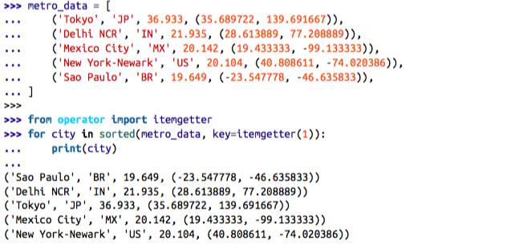
If you pass multiple index arguments to itemgetter, the function it builds will return tuples with the extracted values:
cc_name = intemgeter(1, 0) for city in metro_data: print(cc_name(city))
Because itemgetter uses the [] operator, it supports not only sequences but also map‐ pings and any class that implements getitem.
A sibling of itemgetter is attrgetter, which creates functions to extract object attributes by name. If you pass attrgetter several attribute names as arguments, it also returns a tuple of values. In addition, if any argument name contains a . (dot), attrget ter navigates through nested objects to retrieve the attribute.
Example 5-24. Demo of attrgetter to process a previously defined list of namedtuple called metro_data (the same list that appears in Example 5-23).
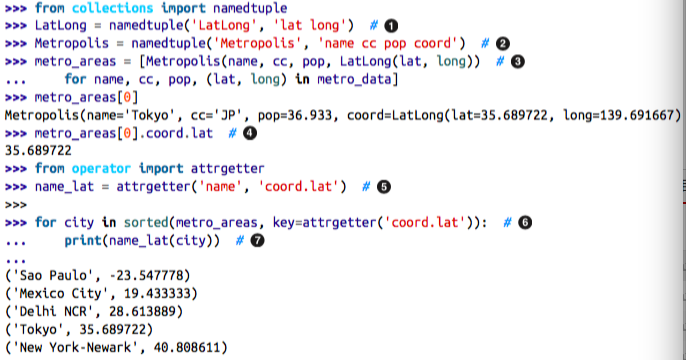
- Use namedtuple to define LatLong.
- Also define Metropolis.
- Build metro_areas list with Metropolis instances; note the nested tuple unpacking to extract (lat, long) and use them o build the LatLong for the coord attribute of Metropolis.
- Reach into element metro_areas<sup><a id="fnr.1" name="fnr.1" class="footref" href="#fn.1">1</a></sup> to get its latitude.
- Define an attrgetter to retrieve the name and the coord.lat nested attribute.
- Use attrgetter again to sort list of cities by latitude.
- Use the attrgetter defined in <5> to show only city name and latitude.
Here is a partial list of functions defined in operator (names starting with _ are omitted, as they are mostly implementation details):
…
Most of the 52 names above are self-evident. The group of names prefixed with i and the name of another operator — e.g. iadd, iand etc. — correspond to the augmented assignment operators — e.g. +=, &= etc. These change their first argument in-place, if it is mutable; if not, the function works like the one without the i prefix: it simply returns the result of the operation.
methodcaller is the last we will cover. It is some‐ what similar to attrgetter and itemgetter in that it creates a function on-the-fly. The function it creates calls a method by name on the object given as argument.
Example 5-25. Demo of methodcaller: second test shows the binding of extra argu‐ ments.
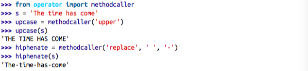
The first test in Example 5-25 is there just to show methodcaller at work, but if you need to use the str.upper as a function you can just call it on the str class and pass a string as argument, like this:
str.upper(s)
The second test in Example 5-25 shows that methodcaller can also do a partial appli‐ cation to freeze some arguments, like the functools.partial function does. That is our next subject.
Freezing arguments wiht functools.partial
The functools module brings together a handful of higher-order functions. – reduce (refer to Modern replacements for map, filter and reduce), partial, partialmethod
The functools.partial is a higher-order function that allows partial application of a function. Given a function, a partial application produces a new callable with some of the arguments of the original function fixed. This is useful to adapt a function that takes one or more arguments to an API that requires a callback with less arguments.
A more useful example involves the unicode.normalize function that we saw in “Nor‐ malizing Unicode for saner comparisons” on page 116. If you work with text from many languages, you may want to apply unicode.normalize('NFC', s) to any string s before comparing or storing it. If you do that often, its handy to have an nfc function to do that, as in Example 5-27.
Example 5-27. Building a convenient Unicode normalizing function with partial.
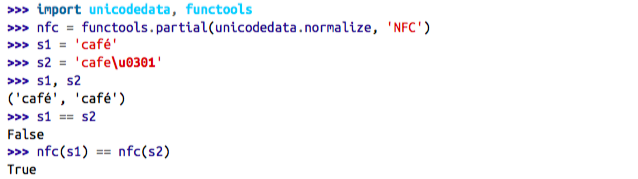
partial takes a callable as first argument, followed by an arbitrary number of positional and keyword arguments to bind.
Example 5-28 shows the use of partial with the tag function from Example 5-10, to freeze one positional argument and one keyword argument.
Example 5-28. Demo of partial applied to the function tag from Example 5-10.
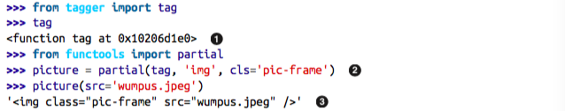
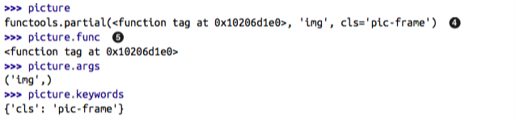
- Import tag from Example 5-10 and show its id.
- Create picture function from tag by fixing the first positional argument with 'img' and the cls keyword argument with 'pic-frame'.
- picture works as expected.
- partial() returns a functools.partial object3.
- A functools.partial object has attributes providing access to the original function and the fixed arguments.
The functools.partialmethod function (new in Python 3.4) does the same job as partial, but is designed to work with methods.
An impressive functools function is lru_cache, which does memoization — a form of automatic optimization that works by storing the results of function calls to avoid expensive recalculations. We will cover it in Chapter 7, where decorators are explained, along with other higher-order functions designed to be used as decorators: singledis patch and wraps.
Chapter summary
The goal of this chapter was to explore the first-class nature of functions in Python. The main ideas are that you can assign functions to variables, pass them to other functions, store them in data structures and access function attributes, allowing frameworks and tools to act on that information. Higher-order functions, a staple of functional pro‐ gramming, are common in Python — even if the use of map, filter and reduce is not as frequent as it was — thanks to list comprehensions (and similar constructs like gen‐ erator expressions) and the appearance of reducing built-ins like sum, all and any. The sorted, min, max built-ins, and functools.partial are examples of commonly used higher-order functions in the language.
Callables come in seven different flavors in Python, from the simple functions created with lambda to instances of classes implementing call. They can all be detected by the callable() built-in. Every callable supports the same rich syntax for declaring formal parameters, including keyword-only parameters and annotations — both new features introduced with Python 3.
Python functions and their annotations have a rich set of attributes that can be read with the help of the inspect module, which includes the Signature.bind method to apply the flexible rules that Python uses to bind actual arguments to declared parame‐ ters.
Lastly, we covered some functions from the operator module and functools.parti al, which facilitate functional programming by minimizing the need for the functionally-challenged lambda syntax.
Further reading
The next two chapters continue our exploration of programming with function objects. Chapter 6 shows how first-class functions can simplify some classic Object Oriented design patterns, while Chapter 7 dives into function decorators — a special kind of higher-order function — and the closure mechanism that makes them work.
Chapter 7 of the Python Cookbook, 3rd. edition (O’Reilly, 2013), by David Beazley and Brian K. Jones, is an excellent complement to the current chapter as well as Chapter 7 of this book, covering mostly the same concepts with a different approach.
In the Python Language Reference, chapter “3. Data model”, section 3.2 The standard type hierarchy presents the seven callable types, along with all the other built-in types.
The Python-3-only features discussed in this chapter have their own PEPs: PEP 3102 — Keyword-Only Arguments and PEP 3107 — Function Annotations.
For more about the current (as of mid-2014) use of annotations, two Stack Overflow questions are worth reading: What are good uses for Python3’s “Function Annota‐ tions”, has a practical answer and insightful comments by Raymond Hettinger, and the answer for What good are Python function annotations? quotes extensively from Guido van Rossum.
PEP 362 — Function Signature Object is worth reading if you intend to use the in spect module which implements that feature.
A great introduction to functional programming in Python is A. M. Kuchling’s Python Functional Programming HOWTO. The main focus of that text, however, is on the use of iterators and generators, which are the subject of Chapter 14.
fn.py is a package to support Functional programming in Python 2 and 3. According to its author, Alexey Kachayev, fn.py provides “implementation of missing features to enjoy FP” in Python. It includes a @recur.tco decorator that implements tail-call op‐ timization for unlimited recursion in Python, among many other functions, data struc‐ tures and recipes.
The StackOverflow question Python: Why is functools.partial necessary? has a highly informative (and funny) reply by Alex Martelli, author of the classic Python in a Nutshell.
Jim Fulton’s Bobo was probably the first Web framework that deserved to be called Object Oriented. If you were intrigued by it and want to learn more about its modern rewrite, start at its Introduction. A little of the early history of Bobo appears in a com‐ ment by Phillip J. Eby in a discussion at Joel Spolsky’s blog.
Soapbox
About Bobo
In 1997 Bobo had pioneered the object publishing concept: direct mapping from URLs to a hierarchy of objects, with no need to configure routes. I was hooked when I saw the beauty of this. Bobo also featured automatic HTTP query handling based on analysis of the signatures of the methods or functions used to handle requests.
Bobo was created by Jim Fulton, known as “The Zope Pope” thanks to his leading role in the development of the Zope framework, the foundation of the Plone CMS, School‐ Tool, ERP5 and other large-scale Python projects. Jim is also the creator of ZODB — the Zope Object Database — a transactional object database that provides ACID (atom‐ icity, consistency, isolation and durability), designed for ease of use from Python.
Jim has since rewritten Bobo from scratch to support WSGI and modern Python (in‐ cluding Python 3). As of this writing, Bobo uses the six library to do the function introspection, in order to be compatible with Python 2 and Python 3 in spite of the changes in function objects and related APIs.
Is Python a functional language?
Even if it was not Guido’s goal, endowing Python with first-class functions opened the door to functional programming. In his post Origins of Python’s “Functional” Fea‐ tures, he tells that map, filter and reduce were the motivation for adding lambda to Python in the first place.
lambda, map, filter and reduce first appeared in Lisp, the original functional language. However, Lisp does not limit what can be done inside a lambda, because everything in Lisp is an expression. Python uses a statement-oriented syntax in which expressions cannot contain statements, and many language constructs are statements — including try/catch, which is what I miss most often when writing lambdas. This is the price to pay for Python’s highly readable syntax4. Lisp has many strengths, but readability is not one of them.
Ironically, stealing the list comprehension syntax from another functional language — Haskell — significantly diminished the need for map and filter, and also for lambda.
Besides the limited anonymous function syntax, the biggest obstacle to wider adoption of functional programming idioms in Python is the lack of tail-recursion elimination, an optimization that allows memory-efficient computation of a function that makes a recursive call at the “tail” of its body. In another blog post, Tail Recursion Elimination Guido gives several reasons why such optimization is not a good fit for Python. That post is a great read for the technical arguments, but even more so because the first three and most important reasons given are usability issues. It is no accident that Python is a pleasure to use, learn and teach. Guido made it so.
So there you have it: Python is, by design, not a functional language — whatever that means. Python just borrows a few good ideas from functional languages.
The problem with anonymous functions
Beyond the Python-specific syntax constraints, anonymous functions have a serious drawback in every language: they have no name.
I am only half joking here. Stack traces are easier to read when functions have names. Anonymous functions are a handy shortcut, people have fun coding with them, but sometimes they get carried away — especially if the language and environment encour‐ age deep nesting of anonymous functions, like JavaScript on Node.js. Lots of nested anonymous functions make debugging and error handling hard. Asynchronous pro‐ gramming in Python is more structured, perhaps because the limited lambda demands it. I promise to write more about asynchronous programming in the future, but this subject must be deferred to Chapter 18. By the way, promises, futures and deferreds are concepts used in modern asynchronous APIs. Along with coroutines, they provide an escape from the so called “callback hell”. We’ll see how callback-free asynchronous pro‐ gramming works in “From callbacks to futures and coroutines” on page 564.
6. Design patterns with first-class functions
Although design patterns are language-independent, that does not mean every pattern applies to every language. In his 1996 presentation Design Patterns in Dynamic Lan‐ guages, Peter Norvig states that 16 out of the 23 patterns in the original Design Patterns book by Gamma et.al. become either “invisible or simpler” in a dynamic language (slide 9). Many of the relevant dynamic features are also present in Python.
The implementation language determines which patterns are relevant.
In particular, in the context of languages with first-class functions, Norvig suggests rethinking the Strategy, Command, Template Method and Visitor patterns. The general idea is: you can replace instances of some participant class in these patterns with simple functions, reducing a lot of boilerplate code. In this chapter we will refactor Strategy using function objects, and discuss a similar approach to simplifying the Command pattern.
Case study: refactoring Strategy
Strategy is a good example of a design pattern that can be simpler in Python if you leverage functions as first class objects.
In the following section we describe and im‐ plement Strategy using the “classic” structure described in the Design patterns book.
Classic Strategy
Figure 6-1. UML class diagram for order discount processing implemented with the Strategy design pattern.
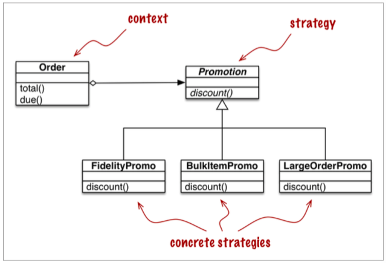
Stategy pattern:
Define a family of algorithms, encapsulate each one, and make them interchangeable. Strategy lets the algorithm vary independently from clients that use it.
Consider an online store with these discount rules:
- customers with 1000 or more fidelity points get a global 5% discount per order;
- a 10% discount is applied to each line item with 20 or more units in the same order;
- orders with at least 10 distinct items get a 7% global discount.
For brevity, let us assume that only one discount may be applied to an order.
The UML class diagram for the Strategy pattern is depicted in Figure 6-1. Its participants are:
- Context: Provides a service by delegating some computation to interchangeable components that implement alternative algorithms. In the e-commerce example, the context is an Order, which is configured to apply a promotional discount according to one of several algorithms.
- Strategy: The interface common to the components that implement the different algorithms. In our example, this role is played by an abstract class called Promotion.
- Concrete Strategy: One of the concrete subclasses of Strategy. FidelityPromo, BulkPromo and Large OrderPromo are the three concrete strategies implemented.
As described in the Design Patterns book, the concrete strategy is chosen by the client of the context class. In our example, before instantiating an order, the system would somehow select a promotional discount strategy and pass it to the Order constructor. The selection of the strategy is outside of the scope of the pattern.
Example 6-1. Implementation Order class with pluggable discount strategies.
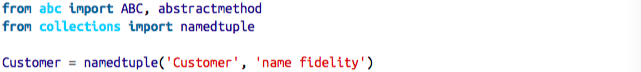
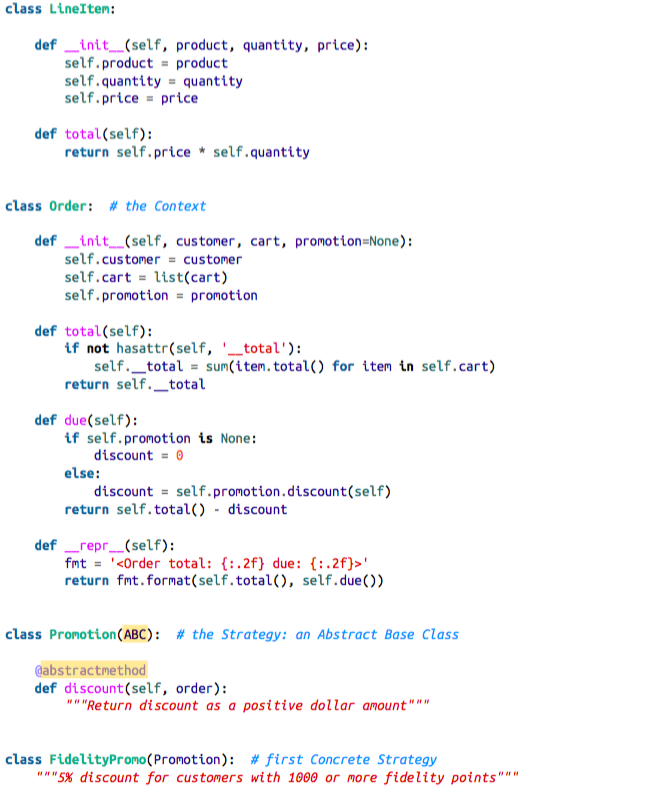
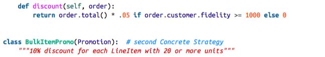
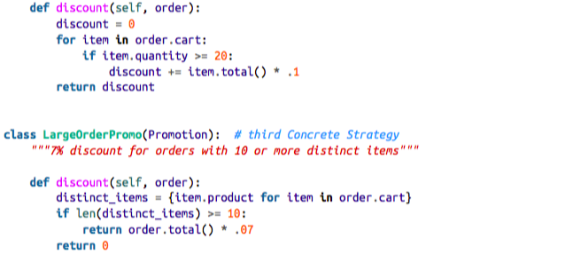
Note that in Example 6-1, I coded Promotion as an ABC (Abstract Base Class), to be able to use the @abstractmethod decorator, thus making the pattern more explicit. (In Python 3.4 the simplest way to declare an ABC is to subclass abc.ABC, as I did in Example 6-1.)
Example 6-2 shows doctests used to demonstrate and verify the operation of a module implementing the rules above.
- Two customers: joe has 0 fidelity points, ann has 1100.
- One shopping cart with three line items.
- The FidelityPromo promotion gives no discount to joe.
- ann gets a 5% discount because she has at least 1000 points.
- The banana_cart has 30 units of the "banana" product and 10 apples. Thanks to the BulkItemPromo, joe gets a $1.50 discount on the bananas.
- long_order has 10 different items at $1.00 each.
- joe gets a 7% discount on the whole order because of LargerOrderPromo.
Example 6-1 works perfectly well, but the same functionality can be implemented with less code in Python by using functions as objects. The next section shows how.
Function-oriented Strategy
Each concrete strategy in Example 6-1 is a class with a single method, discount.
Fur‐ thermore, the strategy instances have no state (no instance attributes). -> They look a lot like plain functions. -> Example 6-3 is a refactoring of Example 6-1 replacing the concrete strategies with simple functions, and removing the Promo abstract class.
Example 6-3. Order class with discount strategies implemented as functions.
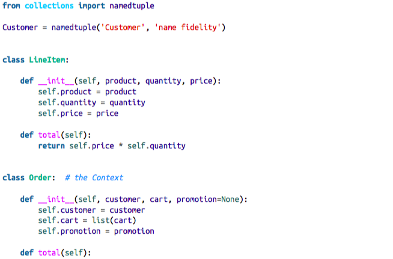
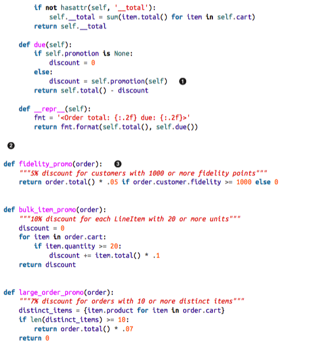
- To compute a discount, just call the self.promotion() function.
- No abstract class.
- Each strategy is a function.
The code in Example 6-3 is 12 lines shorter than Example 6-1. Using the new Order is also a bit simpler, as shown in the Example 6-4 doctests.
- Same test fixtures as Example 6-1.
- To apply a discount strategy to anOrder, just pass the promotion function as an argument.
- A different promotion function is used here and in the next test.
-> There is no need to instantiate a new promotion object with each new order: the functions are ready to use.
Classic strategy pattern:
- Strategy objects often make good flyweights
- A flyweight is a shared object that can be used in multiple contexts simultaneously.
- The sharing is recommended to reduce the cost of creating a new concrete strategy object when the same strategy is applied over and over again with every new context — with every new Order instance, in our example.
- To overcome a drawback of the Strategy pattern — its runtime cost — the authors recommend applying yet another pattern.
A thornier use case, with complex concrete strategies holding internal state may require all the pieces of the Strategy and Flyweight design patterns combined.
But often concrete strategies have no internal state, they only deal with data from the context [ME: can be extensively used in MT EA]. If that is the case, then by all means use plain old functions instead of coding single-method classes implementing a single-method interface declared in yet another class. A function is more lightweight than an instance of a user-defined class, and there is no need for Flyweight as each strategy function is created just once by Python when it compiles the module. A plain function is also “a shared object that can be used in multiple contexts simultaneously.”
Other possibilities emerge. Suppose you want to create a meta-strategy that selects the best available discount for a given Order. In the next sections we present additional refactorings that implement this requirement using a variety of approaches that leverage functions and modules as objects.
Choosing the best strategy: simple approach
We now add three additional tests in Example 6-5:
Example 6-5. The best_promo function applies all discounts and returns the largest.
- best_promo selected the larger_order_promo for customer joe.
- Here joe got the discount from bulk_item_promo for ordering lots of bananas.
- Checking out with a simple cart, best_promo gave loyal customer ann the discount for the fidelity_promo.
The implementation of best_promo is very simple. See Example 6-6.
Example 6-6. best_promo finds the maximum discount iterating over a list of func‐ tions.
- promos: list of the strategies implemented as functions.
- best_promo takes an instance of Order as argument, as do the other *_promo functions.
- Using a generator expression, we apply each of the functions from promos to the order, and return the maximum discount computed.
Once you get used to the idea that functions are first class objects, it naturally follows that building data structures holding functions often makes sense.
There is some duplication that could lead to a subtle bug: to add a new promotion strategy we need to code the function and remember to add it to the promos list.
Read on for a couple of solutions to this issue.
Finding strategies in a module
Modules in Python are also first class objects, and the Standard Library provides several functions to handle them.
The built-in globals is described as follows in the Python docs:
globals()
Return a dictionary representing the current global symbol table. This is always the dictionary of the current module (inside a function or method, this is the module where it is defined, not the module from which it is called).
Here is a somewhat hackish way of using globals to help best_promo automatically find the other available *_promo functions:
Example 6-7. The promos list is built by introspection of the module global namespace.
- Iterate over each name in the dictionary returned by globals().
- Select only names that end with the _promo suffix.
- Filter out best_promo itself, to avoid an infinite recursion.
- No changes inside best_promo.
Another way of collecting the available promotions would be to create a module and put all the strategy functions there, except for best_promo.
In Example 6-8 the only significant change is that the list of strategy functions is built by introspection of a separate module called promotions. Note that Example 6-8 depends on importing the promotions module as well as inspect, which provides high-level introspection functions (the imports are not shown for brevity, as they would normally be at the top of the file).
Example 6-8. The promos list is built by introspection of a new promotions module.
The function inspect.getmembers returns the attributes of an object — the promo tions module here — optionally filtered by a predicate (a boolean function). We use inspect.isfunction to get only the functions from the module.
The promotions module contains only functions that calculate discounts given or‐ ders. Of course, this is an implicit assumption of the code. The point of Example 6-8 is not to offer a complete solution, but to highlight one possible use of module introspection.
A more explicit alternative for dynamically collecting promotional discount functions would be to use a simple decorator. We’ll show yet another version of our e-commerce Strategy example in Chapter 7 which deals with function decorators.
In the next section we discuss Command — another design pattern which is sometimes implemented via single-method classes when plain functions would do.
Command
Command is another design pattern that can be simplified by the use of functions passed as arguments.
Figure 6-2. UML class diagram for menu-driven text editor implemented with the Command design pattern. Each command may have a different receiver: the object that implements the action. For PasteCommand, the receiver is the Document. For Open‐ Command the receiver is the application.
The goal of Command is to decouple an object that invokes an operation (the Invoker) from the provider object that implements it (the Receiver). -> menu: invoker, document/application: receiver
The idea is to put a Command object between the two, implementing an interface with a single method, execute, which calls some method in the Receiver to perform the desired operation. -> That way the Invoker does not need to know the interface of the Receiver, and different receivers can be adapted through different Command subclasses.
The Invoker is configured with a concrete command and calls its execute method to operate it.
Note: MacroCommand may store a sequence of commands; its execute() method calls the same method in each command stored.
Commands are an object-oriented replacement for call‐ backs. The question is: do we need a an object-oriented replacement for callbacks? Sometimes yes, but not always.
- Instead of giving the Invoker a Command instance, we can simply give it a function.
- Instead of calling command.execute(), the Invoker can just call command().
- The Macro Command can be implemented with a class implementing
__call__. Instances of Macro Command would be callables, each holding a list of functions for future invocation.
- Building a list from the commands arguments ensures that it is iterable and keeps a local copy of the command references in each MacroCommand instance.
- When an instance of MacroCommand is invoked, each command in self.com mands is called in sequence.
More advanced uses of the Command pattern, to support undo, for example, may require more than a simple callback function. Even then, Python provides a couple of alternatives that deserve consideration:
- a callable instance like MacroCommand in Example 6-9 can keep whatever state is necessary, and provide extra methods in addition to call.
- a closure can be used to hold the internal state of a function between calls.
This concludes our rethinking of the Command pattern with first-class functions. At a high level, the approach here was similar to the one we applied to Strategy: replacing with callables the instances of a participant class that implemented a single-method interface. After all, every Python callable implements a single-method interface, and that method is named __call__.
Chapter summary
16 of 23 patterns have qualitatively simpler implementation in Lisp or Dylan than in C++ for at least some uses of each pattern.
Python shares some of the dynamic features of the Lisp and Dylan languages, in particular first-class functions, our focus in this part of the book.
One of the failings of the book is “Too much emphasis on patterns as end-points instead of steps in the design patterns."
In many cases, functions or callable objects provide a more natural way of implementing callbacks in Python than mimicking the Strategy or the Command patterns as described by the GoF.
A more general insight: sometimes you may encounter a design pattern or an API that requires that components implement an interface with a single method, and that method has a generic sounding name such as “execute”, “run” or “doIt”. Such patterns or APIs often can be implemented with less boilerplate code in Python using first-class functions or other callables.
The Command and Strat‐ egy patterns — along with Template Method and Visitor — can be made simpler or even “invisible” with first class functions, at least for some applications of these patterns.
Further reading
Decorators as well as closures are the focus of Chapter 7. That chapter starts with a refactoring of the e-commerce example using a decorator to register available promotions.
Recipe 8.21. “Implementing the Visitor Pattern” in the Python Cookbook, 3rd. edition (O’Reilly, 2013), by David Beazley and Brian K. Jones, presents an elegant implementation of the Visitor pattern in which a NodeVisitor class handles methods as first class objects.
As far as I know, Learning Python Design Patterns, by Gennadiy Zlobin (Packt, 2013), is the only book entirely devoted to patterns in Python — as of June 2014. But Zlobin’s work is quite short (100 pages) and covers 8 of the original 23 design patterns.
Expert Python Programming, by Tarek Ziadé (Packt, 2008) is one of the best intermediate-level Python books in the market, and its final chapter — Useful Design Patterns — presents 7 of the classic patterns from a Pythonic perspective.
Alex Martelli has given several talks about Python Design Patterns. There is a video of his EuroPython 2011 presentation and a set of slides in his personal Web site.
Around 2008 Bruce Eckel — author of the excellent Thinking in Java — started a book titled Python 3 Patterns, Recipes and Idioms. but six years later it’s still incomplete and apparently stalled.
There are many books about design patterns in the context of Java, but among them the one I like most is Head First Design Patterns by Eric Freeman, Bert Bates, Kathy Sierra and Elisabeth Robson (O’Reilly, 2004). It explains 16 of the 23 classic patterns.
For a fresh look at patterns from the point of view of a dynamic language with duck typing and first-class functions, Design Patterns in Ruby by Russ Olsen (Addison- Wesley, 2007) has many insights that are also applicable to Python.
In Design Patterns in Dynamic Languages (slides), Peter Norvig shows how first-class functions (and other dynamic features) make several of the original design patterns either simpler or unnecessary.
Of course, the original Design Patterns book by Gamma et al. is mandatory reading if you are serious about this subject. The Introduction by itself is worth the price. That is the source of the often quoted design principles “Program to an interface, not an im‐ plementation.” and “Favor object composition over class inheritance.”
Soapbox
Python has first-class functions and first-class types, features that Norvig claims affect 10 of the 23 patterns (slide 10 of Design Patterns in Dynamic Languages). In the next chapter we’ll see that Python also has generic functions (“Generic functions with single dispatch” on page 202), similar to the CLOS multi-methods that Gamma et.al. suggest as a simpler way to implement the classic Visitor pattern. Norvig, on the other hand, says that multi-methods simplify the Builder pattern (slide 10). Matching design patterns to language features is not an exact science.
It turns out that the “classic” 23 patterns from the Gamma et.al. book apply to “classic” Java very well in spite of being originally presented mostly in the context of C++ — a few have Smalltalk examples in the book. But that does not mean every one of those patterns applies equally well in any language.
The Python bibliography about design patterns is very thin, compared to that of Java, C++ or Ruby. In “Further reading” on page 180 I mentioned “Learning Python Design Patterns”, by Gennadiy Zlobin, which was published as recently as November 2013. In contrast, Russ Olsen’s Design Patterns in Ruby was published in 2007 and has 384 pa‐ ges — 284 more than Zlobin’s work.
Now that Python is becoming increasingly popular in academia, let’s hope more will be written about design patterns in the context of this language. Also, Java 8 introduced method references and anonymous functions, and those highly anticipated features are likely to prompt fresh approaches to patterns in Java — recognizing that as languages evolve, so must our understanding of how to apply the classic design patterns.
7. Function decorators and closures
Function decorators let us “mark” functions in the source code to enhance their behavior in some way. This is powerful stuff, but mastering it requires understanding closures.
One of the newest reserved keywords in Python is nonlocal, introduced in Python 3.0. If you want to implement your own function decorators, you must know closures inside out, and then the need for nonlocal becomes obvious.
Aside from their application in decorators, closures are also essential for effective asynchronous programming with callbacks, and for coding in a functional style whenever it makes sense.
The end goal of this chapter is to explain exactly how function decorators work, from the simplest registration decorators to the rather more complicated parametrized ones.
However, before we reach that goal we need to cover:
- How Python evaluates decorator syntax
- How Python decides whether a variable is local
- Why closures exist and how they works
- What problem is solved by nonlocal
With this grounding we can tackle further decorator topics:
- Implementing a well-behaved decorator
- Interesting decorators in the standard library
- Implementing a parametrized decorator
Decorators 101
A decorator is a callable that takes another function as argument (the decorated func‐ tion).
Tip: Python also supports class decorators. They are covered in Chapter 21.
The decorator may perform some processing with the decorated function, and returns it or replaces it with another function or callable object.
In other words, this code:
@decorate def target(): print('running target()')
Has the same effect as writing this:
def target(): print('running target()') target = decorate(target)
To confirm that the decorated function is replaced, see the console session in Example 7-1.
Example 7-1. A decorator usually replaces a function with a different one.
def deco(func): def inner(): print('running inner()') return inner # 1 @deco def target(): # 2 print('running target()') target() # 3 target # 4 >>>> running inner() <function __main__.deco.<locals>.inner>
- deco returns its inner function object.
- target is decorated by deco.
- Invoking the decorated target actually runs inner.
- Inspection reveals that target is a now a reference to inner.
Strictly speaking, decorators are just syntactic sugar. – You can always simply call a decorator like any regular callable, passing another function.
Sometimes that is actually convenient, especially when doing metaprogramming — changing program behavior at run-time.
Crucial facts about decorators:
- they have the power to replace the decorated function with a different one.
- they are executed immediately when a module is loaded.
When Python executes decorators
A key feature of decorators is that they run right after the decorated function is defined. That is usually at import time, i.e. when a module is loaded by Python.
Example 7-2. The registration.py module
registry = [] def register(func): print('running register(%s)' % func) registry.append(func) return func @register def f1(): print('running f1()') @register def f2(): print('running f2()') def f3(): print('running f3()')
If registration.py is imported (and not run as a script), the output is this:
>>> import registration
running register(<function f1 at 0x10063b1e0>)
running register(<function f2 at 0x10063b268>)
Function decorators are executed as soon as the module is imported, but the decorated functions only run when they are explicitly invoked. This highlights the difference between what Pythonistas call import time and run time.
Considering how decorators are commonly employed in real code, Example 7-2 is unusual in two ways:
- A real decorator is usually defined in one module and applied to functions in other modules.
- In practice, most decorators define an inner function and return it.
Even though the register decorator in Example 7-2 returns the decorated function unchanged, that technique is not useless. Similar decorators are used in many Python Web frameworks to add functions to some central registry, for example, a registry map‐ ping URL patterns to functions that generate HTTP responses.
Decorato-enhanced Strategy pattern
A registration decorator is a good enhancement to the e-commerce promotional discount from “Case study: refactoring Strategy” on page 168.
Recall that our main issue with Example 6-6 is the repetition of the function names in their definitions. The repetition is problematic because someone may add a new promotional strategy function and forget to manually add it to the promos list -> a subtle bug!
We can solve this problem with a registration decorator.
Example 7-3. The promos list is filled by the promotion decorator.
promos = [] def promotion(promo_func): promos.append(promo_func) return promo_func @promotion def fidelity(order): # ...
This solution has several advantages over the others presented in “Case study: refac‐ toring Strategy” on page 168:
- The promotion strategy functions don’t have to use special names (like the
_promosuffix). - The
@promotiondecorator highlights the purpose of the decorated function, and also makes it easy to temporarily disable a promotion: just comment out the dec‐ orator. - Promotional discount strategies may be defined in other modules, anywhere in the system, as long as the @promotion decorator is applied to them.
Most decorators do change the decorated function. They usually do it by defining an inner function and returning it to replace the decorated function. Code that uses inner functions almost always depends on closures to operate correctly. To understand closures, we need to take a step back a have a close look at how variable scopes work in Python.
Variable scope rules
Continuing from Example 7-4, if we assign a value to a global b and then call f1, it works:
b = 6
f1(3)
>>>>
3
6
Example 7-5. Variable b is local, because it is assigned a value in the body of the function.
b = 6 def f2(a): print(a) print(b) b = 9 f2(3) >>>> 3 --------------------------------------------------------------------------- UnboundLocalError Traceback (most recent call last) <ipython-input-126-654ff22c9aff> in <module>() 5 b = 9 6 ----> 7 f2(3) <ipython-input-126-654ff22c9aff> in f2(a) 2 def f2(a): 3 print(a) ----> 4 print(b) 5 b = 9 6 UnboundLocalError: local variable 'b' referenced before assignment
The fact is, when Python compiles the body of the function, it decides that b is a local variable because it is assigned within the function. The generated bytecode reflects this decision and will try to fetch b from the local environment. Later, when the call f2(3) is made, the body of f2 fetches and prints the value of the local variable a, but when trying to fetch the value of local variable b it discovers that b is unbound.
This is not a bug, but a design choice: Python does not require you to declare variables, but assumes that a variable assigned in the body of a function is local. This is much better than the behavior of JavaScript, which does not require variable declarations either, but if you do forget to declare that a variable is local (with var), you may clobber a global variable without knowing.
If we want the interpreter to treat b as a global variable in spite of the assignment within the function, we use the global declaration:
b = 6 def f3(a): global b print(a) print(b) b = 9 f3(3) >>>> 3 6 f3(3) >>>> 3 9
Tip: The CPython VM that runs the bytecode is a stack machine, so the operations LOAD and POP refer to the stack. It is beyond the scope of this book to further describe the Python opcodes, but they are documented along with the dis module in dis — Disassembler for Python bytecode.
Closures
Closures are sometimes confused with anonymous functions:
- defining functions inside functions is not so common, until you start using anonymous functions.
- closures only matter when you have nested functions.
-> So a lot of people learn both concepts at the same time.
Actually, a closure is function with an extended scope that encompasses non-global variables referenced in the body of the function but not defined there. It does not matter whether the function is anonymous or not, what matters is that it can access non-global variables that are defined outside of its body.
Consider an avg function to compute the mean of an ever-increasing series of values.
Starting with a clean slate, this is how avg could be used:
avg(10) >>>> 10.0 avg(11) >>>> 10.5 avg(12) >>>> 12
Where does it keep the history of previous values?
Example 7-8. average_oo.py: A class to calculate a running average.
class Averager(): def __init__(self): self.series = [] def __call__(self, new_value): self.series.append(new_value) total = sum(self.series) return total/len(self.series)
The Averager class creates instances that are callable:
>>> avg = Averager()
>>> avg(10)
10.0
>>> avg(11)
10.5
>>> avg(12)
11.0
Example 7-9. average.py: a higher-order function to calculate a running average.
def make_averager(): series = [] def averager(new_value): series.append(new_value) total = sum(series) return total / len(series) return averager
Example 7-10. Testing Example 7-9
avg = make_averager()
avg(10)
Out[131]:
10.0
avg(11)
Out[132]:
10.5
avg(12)
Out[133]:
11.0
Where does the avg function in the second example find the series?
series is a local variable of make_averager because the initialization series = [] happens in the body of that function. But when avg(10) is called, make_averag er has already returned, its local scope is long gone.
Figure 7-1. The closure for averager extends the scope of that function to include the binding for the free variable series.
Within averager, series is a free variable. This is a technical term meaning a variable that is not bound in the local scope. See Figure 7-1. [ME: refer to the variable b in Example 7.4]
Inspecting the returned averager object shows how Python keeps the names of local and free variables in the code attribute that represents the compiled body of the function:
avg.__code__.co_varnames Out[135]: ('new_value', 'total') avg.__code__.co_freevars Out[136]: ('series',)
The binding for series is kept in the closure attribute of the returned function avg. Each item in avg.__closure__ corresponds to a name in avg.__code__.co_free vars. These items are cells, and they have an attribute cell_contents where the actual value can be found:
avg.__code__.co_freevars Out[137]: ('series',) avg.__closure__ Out[138]: (<cell at 0x10481df18: list object at 0x10494ea08>,) avg.__closure__[0].cell_contents Out[141]: [10, 11, 12]
To summarize: a closure is function that retains the bindings of the free variables that exist when the function is defined, so that they can be used later when the function is invoked and the defining scope is no longer available.
Note that the only situation in which a function may need to deal with external variables that are non-global is when it is nested in another function.
The nonlocal declaration
Our previous implementation of make_averager was not efficient. A better implementation would just store the total and the number of items so far, and compute the mean from these two numbers.
Example 7-13. A broken higher-order function to calculate a running average without keeping all history.
def make_averager(): count = 0 total = 0 def averager(new_value): count += 1 total += new_value return total / count return averager avg = make_averager() avg(10) --------------------------------------------------------------------------- UnboundLocalError Traceback (most recent call last) <ipython-input-144-4fe265be513b> in <module>() 1 avg = make_averager() ----> 2 avg(10) <ipython-input-143-32d832c1454e> in averager(new_value) 3 total = 0 4 def averager(new_value): ----> 5 count += 1 6 total += new_value 7 return total / count UnboundLocalError: local variable 'count' referenced before assignment
The problem is that the statement count += 1 actually means the same as count = count + 1, when count is a number or any immutable type.
We did not have this problem in Example 7-9 because we never assigned to the ser ies list, we only called series.append and invoked sum and len on it. So we took advantage of the fact that lists are mutable.
But with immutable types like numbers, strings, tuples etc., all you can is read, but never update. If you try to rebind them, as in count = count + 1, then you are implicitly creating a local variable count. It is no longer a free variable, therefore it is not saved in the closure.
To work around this the nonlocal declaration was introduced in Python 3. It lets you flag a variable as a free variable even when it is assigned a new value within the function. If a new value is assigned to a nonlocal variable, the binding stored in the closure is changed.
Example 7-14. Calculate a running average without keeping all history. Fixed with the use of nonlocal.
def make_averager(): count = 0 total = 0 def averager(new_value): nonlocal count, total count += 1 total += new_value return total / count return averager
Now that we got Python closures covered, we can effectively implement decorators with nested functions.
Implementing a simple decorator
How it works
Decorators in the standard library
Memoization with functools.lru_cache
Generic functions with single dispatch
Stacked decorators
Parameterized Decorators
A parameterized registration decorator
The paraeterized clock decorator
Chapter summary
Further reading
Part IV. Object Oriented Idioms
8. Object references, mutability and recycling
Variables are not boxes
Identity, equlity and aliases
Choosing between == and is
The relative immutability of tuples
Copies are shallow by default
Deep and shallow copies of arbitrary objects
Function parameters as references
Mutable types as parameter defaults: bad idea
Defensive programming with mutable parameters
del and garbage collection
Weak references
The WeakValueDictionary skit
Limitations of weak references
Tricks Python plays with immutables
Chapter summary
Further reading
9. A Pythonic object
Object representations
Vector class redux
An alternative constructor
classmethod versus staticmethod
Formatted displays
A hashable Vector2d
Private and "protected" attributes in Python
Saving space with the __slots__ class attribute
The problems with __slots__
Overriding class attributes
Chapter summary
Further reading
10. Sequence hacking, hashing and slicing
Vector: a user-defined sequence type
Vector take #1: Vector2d compatible
Protocols and duck typing
Vector take #2: a sliceable sequence
How slicing works
A slice-aware __getitem__
Vector take #3: dynamic attribute access
Vector take #4: hashing and a faster ==
Vector take #5: formatting
Chapter summary
Further reading
11. Interface: from protocols to ABCs
Interface and protocols in Python culture
Python digs sequences
Monkey-patching to implement a protocol at run time
Waterfowl and ABCs
Subclassing and ABC
ABCs in the standard library
ABCs in collections.abc
The numbers tower of ABCs
Defining and using ABC
ABC syntax details
Subclassing the Tombola ABC
A virtual subclass of Tombola
How the Tombola subclasses were tested
Usage of register in practice
Geese can behave as ducks
Chapter summary
Further reading
12. Inheritance: for good or for worse
Subclassing built-in types is tricky
Multiple inheritance and method resolution order
Multiple inheritance in the real world
Coping with multiple inheritance
1. Distinguish interface inheritance from implementation inheritance
2. Make interface explicit with ABC's
3. Use mixins for code reuse
4. Make mixins explicit by naming
5. An ABC may also be a mixin; the reverse is not true
6. Don't subclass from more than one concrete class
7. Provide aggregate classes to users
8. "Favor object composition over class inheritance"
Tkinter: the good, the bad and the ugly
A modern example: mixins in Django generic views
Chapter summary
Further reading
13. Operator overloading: doing it right
Operator overloading 101
Unary operators
Overloading + for vector addition
Overloading * for vector multiplication
Rich comparison operators
Augmented assignment operators
Chapter summary
Further reading
Prt V. Control flow
14. Iterable, iterators and generators
Sentence take #1: a sequence of words
Why sequences are iterable: the iter function
Iterables versus iterators
Sentence take #2: a classic iterator
Making Sentence an iterator: bad idea
Sentence take #3: a generator function
How a generator function works
Sentence take #4: a lazy implementation
Sentence take #5: a generator expression
Generator expressions: when to use them
Another example: arithmetic progression generator
Arithmetic progression with itertools
Generator functions in the standard library
New syntax in Python 3.3: yield from
Iterable reducing functions
A closer look at the iter function
Case study: generators in a database conversion utility
Generators as coroutines
Chapter summary
Further reading
15. Context managers and else blocks
Do this, then that: else blocks beyond if
Context managers and with blocks
The contextlib utilities
Using @contextmanager
Chapter summary
Further reading
16. Coroutines
How coroutines evolved from generators
Basic behavior of a generator used as a coroutine
Example: coroutine to compute a running average
Decorators for coroutine priming
Coroutine termination and exception handling
Returning a value from a coroutine
Using yield from
The meaning if yield from
Use case: coroutines for discrete event simulation
About discrete event simulations
The taxi fleet simulation
Chapter summary
Further reading
17. Concurrency with futures
Example: Web downloading in three styles
A sequential download script
Downloading with concurrent.fugures
Where are the futures?
Blocking I/O and the GIL
Launching processes with concurrent.futures
Experimenting with Executor.map
Downloadins with progress display and error handling
Error handling in the flags2 example
Using futures.as_completed
Threading and multiprocessing alternatives
Chapter summary
Further reading
18. Concurrency with asyncio
Thread versus coroutine: a comparison
asyncio.Future: non-blocking by design
Yileding from futures, tasks and coroutines
Downloading with asyncio and aiohttp
Running circles around blocking calls
Enhancing the asyncio downloader script
Using asyncio.as_completed
Using an executor to avoid blocking the event loop
From callbacks to futures and coroutines
Doing multiple requests for each download
Writing asyncio servers
An asyncio TCP server
An aiohttp Web server
Smarter clients for better concurrency
Chapter summary
Further reading
Part VI. Metaprogramming
19. Dynamic attributes and properties
Data wrangling with dynamic attributes
Exploring JSON-like data with dynamic attributes
Theh invalid attribute name problem
Flexible object creation with __new__
Restructing the OSCON feed with shelve
Linked record retrieval with properties
Using a property for attribute validation
LineItem take #1: class for an item in an order
LineItem take #2: a validating property
A proper look at properties
Properties override instance attributes
Property documentation
Coding a property factory
Handling attribute deletion
Essential attributes and functions for attribute handling
Special attributes that affect attributes handling
Built-in functions for attribute handling
Special methods for attribute handling
Chapter summary
Further reading
20. Attribute descriptors
Descriptor example: attribute validation
LineItem take #3: a simple descriptor
LineItem take #4: automatic storage attribute names
LineItem take #5: a new descriptor type
Overriding versus non-overriding descriptors
Overriding descriptor
Overriding descriptor without __get__
Non-overriding descriptor
Overwriting a descriptor in the class
Methods are descriptors
Descriptor usage tips
1. Use property to keep it simple
2. Read-only decriptors require __set__
3. Validation descriptors can work with __set__ only
4. Caching can be done efficiently with __get__ only
5. Non-special methods can be shadowed by instance attributes
Descriptor docstring and overriding deletion
Chapter summary
Further reading
21. Class metaprogramming
A class factory
A class decorator for customizing descriptors
What happens when: import time versus run time
The evaluation time exercises
Metaclasses 101
The metaclass evaluation time exercises
A metaclass for customizing descriptors
The metaclass __prepare__ special method
Classes as object
Chapter summary
Further reading
Afterword
A. Support scipts
Python jargon
Footnotes:
DEFINITION NOT FOUND.